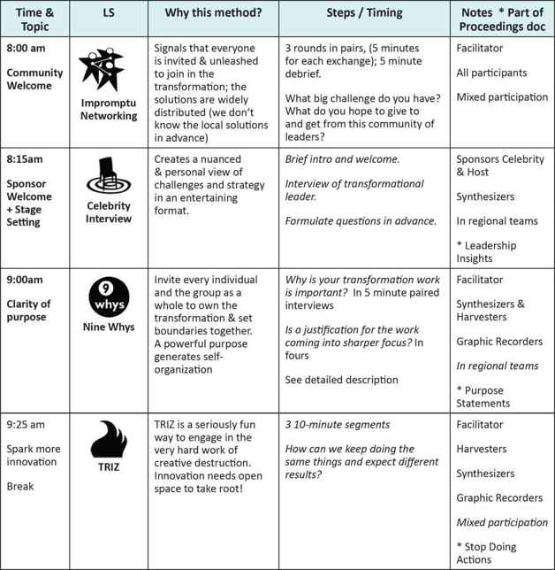
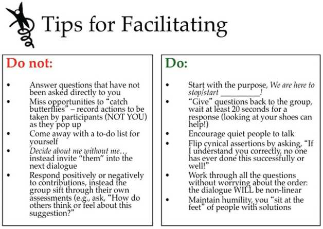
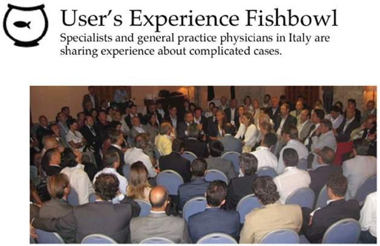
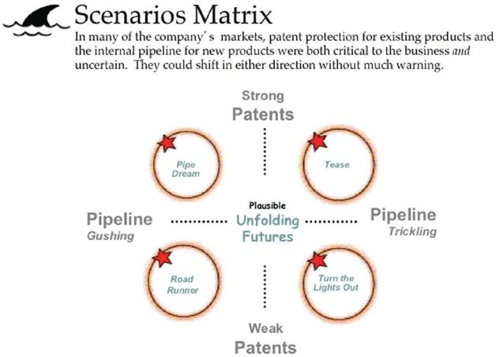
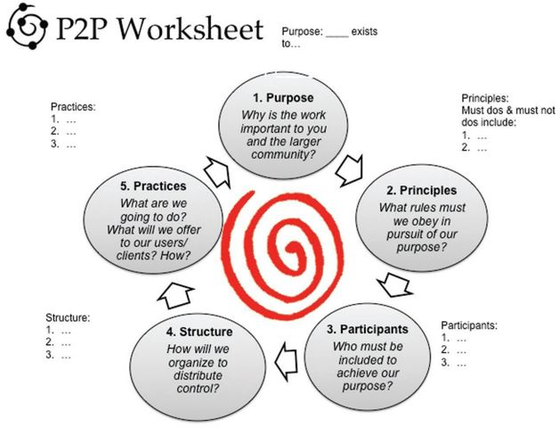

《解放结构的惊人力量》赞誉
这本书非常必要且非常实用。作者们理解，世界是通过我们如何开会、规划、召开会议以及彼此相处的协议中的小而优雅的转变而改变的。这本书的天才之处在于，它将曾经只为受过训练的专家保留的引导力量交到了每一位领导者和每一位公民的手中。这将成为所有领导力和变革项目的必读教材。
彼得·布洛克(Peter Block) 畅销书《完美咨询》、《管家责任》和《社区：归属的结构》作者
一个充满简单、实用方法的宝库，用于激发关键对话并释放任何团队的全部潜力，从一线员工到高管层都适用。
谢丽尔·M·斯科特(Cheryl M Scott) 比尔及梅琳达·盖茨基金会全球项目高级顾问
《解放结构》将永远改变我们看待协作、学习和领导力的方式，它向我们展示了结构在工作世界中是如何至关重要的。简单来说，这本书适合每一位想要创新但经过验证的方法来转型其组织并让成员参与到这一发现之旅的领导者。
帕特·威瑟斯庞(Pat Witherspoon) 德克萨斯大学埃尔帕索分校文理学院院长
作为一名报道高管领导力的《华尔街日报》专栏作家，我在利普曼诺维奇和麦坎德利斯开展解放结构工作的早期就发现了他们。今天，作为一个复杂行业的企业家，我经常使用这些实践。任何群体，在任何地方都天然具备快速转型的潜力。解放结构让将这种潜力转化为现实变得简单。
托马斯·佩钦格(Thomas Petzinger Jr) 五家生命科学公司创始人，前《华尔街日报》“前线”专栏作家
作者借鉴了复杂性科学研究的先驱，使这些洞察对现场工作的人们立即有用。解放结构通过以一种鼓励每个人成为解决方案一部分并采取行动的方式让每个人参与进来，从而邀请一线人员对挑战拥有所有权。
布伦达·齐默尔曼(Brenda Zimmerman) 多伦多舒立克商学院战略/政策副教授
解放结构不仅给了我许多强大的新方法来吸引员工和客户；它们还超出我的想象，成功地提供了无尽的新方法来提高生产力和创造力，所有这些都以一种有趣和愉快的方式进行！
盖伊·艾弗曼(Guy Eiferman) 默克公司医疗服务与解决方案总裁
比林斯诊所(Billings Clinic)十年来一直在使用许多解放结构。包括员工、领导者、医生和护士在内的新的更强大团队的参与和涌现，帮助我们在极其复杂的医疗环境中改善了患者体验和安全性，同时降低了成本。强烈推荐。
尼古拉斯·沃尔特博士(Nicholas Wolter, MD) 比林斯诊所首席执行官
将解放结构带入我的工作正在恢复我的灵魂。谢谢你们。
黛布·维策尔(Deb Witzel) 朗蒙特社区司法伙伴关系执行董事
能够用解放结构管理互动帮助我在我的团队和客户眼中更加自信，成为一名更好的领导者。作为早期采用者增加了我在组织中的影响力，这也是我现在成为高级管理团队成员的原因之一。解放结构帮助我在职业生涯中成长。
瓦内萨·韦尔蒂斯(Vanessa Vertiz) 秘鲁利马业务部门总监
在过去八年里，在拉丁美洲和意大利，解放结构帮助我和我的团队解决了广泛的问题。它们成为了一种做生意的方式，并将组织和人员带到新的高度。
大卫·雷蒙多(David Raimondo) 库珀视觉拉丁美洲总经理
有些罕见但令人愉快的时刻，你会偶然发现一个改变一切的资源。解放结构提供了丰富且令人愉快的方法库，它们名副其实——解放参与者参与、协作并挖掘他们的集体智慧来解决他们的关切和目标。不仅对我的实践如此，而且越来越多地成为育空地区政府整个组织中管理者和员工的富有成效的工具。
巴雷特·W·霍恩(Barrett W. Horne) 加拿大育空地区政府组织发展顾问
这是一本改变你如何吸引他人的必读指南。解放结构提供了优雅的方法来充分利用每次讨论、会议或研讨会。我们的非政府组织在内部和与世界各地的合作伙伴一起使用它们。从坦桑尼亚到纽约市，从圣卢西亚到利比里亚，我惊叹于解放结构释放每次聚会潜力的力量。
肖恩·索西(Sean Southey) PCI Media Impact执行董事
天哪：www.liberatingstructures.com 可能是自谷歌以来我接触到的最有用的网站之一。唯一想到的词是脏话，而我正在用县政府的电子邮件。
瑞安·默里(Ryan Murrey) 华盛顿州CASA代理执行官
《解放结构的惊人力量》
释放创新文化的简单规则
亨利·利普曼诺维奇(Henri Lipmanowicz) 基思·麦坎德利斯(Keith McCandless)
版权所有 © 2013 亨利·利普曼诺维奇和基思·麦坎德利斯。保留部分权利。
本作品采用知识共享署名-非商业性使用-相同方式共享许可协议。这允许其他人非商业性地复制、分发、改编和基于我们的作品进行创作，只要他们署名我们并在相同条款下许可他们的创作。
要查看此许可证的副本，请访问 http://creativecommons.org/licenses/by-nc-sa/3.0/legalcode
由解放结构出版社出版
ISBN 13: 9780615893372 (解放结构出版社)
ISBN: 0615893376
国会图书馆控制号: 2013951395
解放结构出版社，华盛顿州西雅图
目录
序言 如同ABC一样简单
第1章 微小改变，巨大差异
邀请
前路展望
第一部分：参与的隐藏结构
第2章 为什么微观结构很重要
无形结构如何塑造所有完成的工作
首先，几个定义
微观结构被忽视的力量
微观结构的赋能与约束
控制的要素
传统微观结构：过度控制和/或结构不足
从过度或过少控制到结构良好的分布式控制
第3章 面向所有人的解放性结构
任何人如何轻松彻底改善人们协作的方式
解放性结构的实践
利用微小改变的力量
原则与实践
衡量包容性和参与度：IE商数
解放性结构与文化变革
解放教育
可以期待什么
第4章 解放性领导力
领导者如何避免延续他们抱怨的问题
坏消息：意外后果和副作用
修补症状
好消息
可能性
选择
给怀疑者的一句话
重大转变与回报
最大的领导力挑战
解放性领导力从你开始
第二部分：入门及进阶
第5章 开始：第一步
解放性结构菜单
安全第一
打破传统
你自己的恐惧
通往熟练和常规使用的三条路径
沉浸式工作坊
第6章 从第一步到串联
将挑战与特定解放性结构匹配
五组串联
第7章 从串联到故事板
启动多方利益相关者协作项目
制定战略并建立新的领导团队
跨多个地区推进广泛运动
为大规模项目进行组合
第三部分：来自一线的故事
修复破损的儿童福利系统：Tim Jaasko-Fisher
包容性高风险决策变得简单：Craig Yeatman
扭转业务困境：Alison Joslyn
在军队中转变行动后审查(After-Action Reviews)：Lisa Kimball
创造未来医疗保健实践：Chris McCarthy
在课堂上创造更多实质、连接和想法：Arvind Singhal
获得承诺、主人翁精神和后续行动：Neil McCarthy
在预防医院感染的同时激发持久文化变革：Michael Gardam
通过戏剧化行为改变来阻止感染：Sherry Belanger
为医师教育发展能力：Diane Magrane
通过蒙大拿州参议院第29号法案：参议员Lynda Bourque Moss
超越自上而下的命令与控制文化：Jon Velez
第四部分：解放性结构实地指南
1-2-4-全体
即兴社交(Impromptu Networking)
九个为什么
棘手问题(Wicked Questions)
欣赏式访谈(AI)
TRIZ
15%解决方案
三人组咨询(Troika Consulting)
什么、那又怎样、现在怎样？(W³)
发现与行动对话(DAD)
25/10众包(Crowd Sourcing)
转换与分享
智慧群体(Wise Crowds)
对话咖啡馆
最小规格(Min Specs)
即兴原型(Improv Prototyping)
帮助启发式(Helping Heuristics)
用户体验鱼缸(User Experience Fishbowl)
被倾听、被看见、被尊重(HSR)
一起绘画
设计故事板——基础版
设计故事板——进阶版
名人访谈
社交网络编织
“我需要你提供什么”(WINFY)
开放空间技术(Open Space Technology)
你还记得学习字母表吗?还记得拼写第一个单词吗?猫、狗、蝙蝠。字母表不仅容易学习,而且具有无限的适应性和普遍的实用性。它们是单词、想法和行动的基石。通过罗马字母表的26个字母,可以串联出数百万种不同的组合,足以写出多种语言的所有单词。
现在想象一下,如果你只能使用一个五字母的字母表。你能用五个字母组成多少个不同的单词和想法?写作、阅读和交谈会受到多大的限制?仅用几个词来交流会有多么令人沮丧?与他人的交往会变得多么枯燥和重复?
这正是大多数人在与他人合作时所处的境况。他们被一个相当于五字母字母表的东西所束缚,它由每个人在任何地方用来组织团队协作方式的五种方法组成。这五种传统方法是:演示、管理式讨论、状态报告、开放式讨论和头脑风暴。这个微小的字母表在很大程度上是许多会议或课堂无聊、低效或令人沮丧的原因。此外,这些传统方法无法创造一个肥沃的土壤,让创新能够轻松涌现和蓬勃发展。
本书的目的是极大地扩展你与他人互动和协作以实现卓越成果的可能方式。它描述并解释了33个新”字母”,这些简单的方法你可以轻松学习,只需少量练习即可。
图1
解放性结构(Liberating Structures)简单方法”字母表”
这些所谓的解放性结构使人们能够轻松地转变互动和协作方式,从而获得比演示、报告和其他传统方法更好的成果。我们称它们为解放性结构,是因为它们旨在包容和调动每个人。可以说,它们”解放”了每个人对团队成功的贡献。
你与他人的互动和协作质量往往不仅决定了你在工作中的成功,也决定了你在生活其他领域的成功。你会发现每个解放性结构都有其特定的优势。通过学习使用部分或全部解放性结构,你将创建自己的字母表,并为与他人完成任务构建不同的词汇。你的新语言将具有无限的适应性和适用性,因为你可以创造更多组合来适应生活中面临的每种情况,无论是挑战还是机遇,是大是小,是简单还是复杂。
你还会发现,解放性结构的力量不仅令人惊讶,而且具有感染力。当你使用解放性结构时,你周围的人会享受这种体验并看到意想不到的好处;这可能会帮助和鼓励他们扩展自己的字母表。他们将成为你的实践伙伴,并感激你帮助他们获得了将终身受用的技能。
当被问及谁是使用解放性结构的完美候选人时,我们谦虚的回答很简单:每个人。
你还会发现,解放性结构可以轻松地向上或向下扩展,适用于小型或大型团队、部门或职能、组织、班级、学校、社区或社会运动。这使得它们适用于从单次会议到大型项目再到系统范围的转型计划的任何场景。你还会发现它们可以帮助你为一对一对话带来更多结构,使其更有成效。当然,它们也可以帮助你更有效地与自己对话,并改变你的思考、规划和决策方式。
当被问及谁是使用解放性结构的完美候选人时,我们谦虚的回答很简单:每个人。解放性结构适用于CEO、高级管理人员、中层管理者和一线员工;教授和教师、行政人员、支持人员和学生;医院领导、医生和护士;军官和士兵;政府雇员和政治家;顾问和教练;社区领袖和慈善家——以及更多人。我们所说的每个人就是指每个人!
如果这是一本关于网球、高尔夫或滑雪的书,你在阅读时会知道,只有当你练习了这些方法并从中学习时,它的价值才会显现。
如果解放性结构可以普遍适用的概念对你来说好得令人难以置信,那么加入这个行列吧;这是一种常见的初始反应,也是可以理解的。只有当你通过亲自使用解放性结构并发挥想象力来推断适应和新应用,你才会相信它们能为你做什么。换句话说,本书包含许多重要的想法,但它不是一本理论或概念性的书。相反,它是一本实用的现场指南,旨在让你轻松入门并快速取得重大进展,这样你就能发现解放性结构在你的工作和生活中应该占据什么位置。
Liberating Structures（解放性结构）是有目的的方法：改善绩效。如果这是一本关于网球、高尔夫或滑雪的书，你在阅读时会知道，只有当你练习这些方法并从中学习时，它才会有价值。这就是如何学习和受益于Liberating Structures的秘诀：只管去做，投入其中，探索，并尽可能经常地练习，充分利用每天大量存在的机会。请放心，无论你在什么情况下尝试哪种Liberating Structure，都会产生比预期更好的结果。
小改变，大不同
几个月来，一位父亲一直无法从他十几岁的女儿那里得到超过单音节的回应。然后，有一天，他在开始对话的方式上做了一个小改变，她和他聊了一个多小时。
“不是锤击，而是水的舞蹈将鹅卵石唱成完美。” R. 泰戈尔
几个月来，十五位管理者一直在争论如何改变他们的双周会议，却毫无进展，他们都认为这种会议令人沮丧且效率低下。然后，有一天，他们在小组工作方式上做了一个小改变。收获是什么？在三十分钟内，他们找出了主要问题所在，并决定如何共同解决它。
多年来，每一批新学生在上一门必修课时都没什么热情，只做最低限度的事情来获得体面的成绩。然后，在某个学期，教授在教学方法上做了一些小改变后，学生们变得活跃而热切，感到投入其中，并在学习他们认为与个人生活相关的概念时获得乐趣。
多年来，给前往阿富汗的替换军官的简报会比起启发性更让人麻木和不知所措。然后有一天，由于简报流程的小改变，返回的军官能够向他们的替换者传达如何快速上手的细微之处。他们的替换者专心倾听，询问并得到所有剩余问题的答案，并对开始他们充满挑战的部署感到更有信心。
几十年来，尽管定期开展培训员工和引入最佳实践的活动，医院某个科室的感染仍在增加。然后在某一年，该科室在感染减少方法上实施了一个小改变，并能够在短短十二个月内将传染降至接近零。
据任何人记忆所及，战略计划评审一直是压力大且不愉快的；你向管理团队展示你的计划，他们尽力在其中找出错误。然后在某一年，一个小改变将评审变成了一个充满活力、富有成效且愉快的活动。
所有这些小故事都概括了具有共同故事线的真实故事：人们日常实践中的小改变产生了他们所获得结果的巨大差异。每个个人或小组所做的只是用一种叫做”Liberating Structure”的东西替换我们所说的”传统微观结构”。
那位青少年的父亲所做的不同之处在于，他从一种叫做Appreciative Interviews（欣赏式访谈）的Liberating Structure中获得灵感。他的小改变是问他的女儿，“你今天最美好的时刻是什么？”这促使她讲述一个故事，然后是另一个，再另一个……
那些在如何改变双周会议上陷入僵局的管理者所做的小改变是使用两轮叫做1-2-4-All的Liberating Structure来解决他们的问题并在没有冲突的情况下解决意见分歧。
那位教授所做的不同之处在于在她的课堂方法中引入看似微小的变化：她用几种Liberating Structures（如Impromptu Networking（即兴网络）、Troika Consulting（三人咨询）和Conversation Café（对话咖啡馆））替换了她的讲座，并创建了一个互动环境，为自我发现和同伴间学习提供了许多空间。
阿富汗简报会过去主要由白皮书和PowerPoint演示组成。简报官员在流程中做出的简单改变是使用一种叫做Users Experience Fishbowl（用户体验鱼缸）的Liberating Structure，其中一小组返回的军官彼此分享他们的实地故事，而他们的替换者倾听并随后提问。
减少感染率的医院科室只是停止推广自上而下的活动，并逐渐让科室的每个人参与小型和多样化的小组对话。他们是如何做到的？他们使用Liberating Structures，如Discovery & Action Dialogues（发现与行动对话）和Improv Prototyping（即兴原型设计），让参与者自己发现他们如何能够为减少感染做出贡献。在没有从上层强加认同的情况下，人们自愿采取行动。
在对抗性战略计划评审的案例中，小改变是消除演示常规，并用叫做Ecocycle（生态周期）的Liberating Structure来让整个管理团队参与评估战略选项并共同创建计划。
当你思考与你一起工作的小组或组织时，勾选所有适用项：
极其无聊或令人沮丧的会议
别人的最佳实践被强加
决策者与执行者分离
让人大脑麻木的PowerPoint演示
经常回避困难的对话
恐惧和政治阻碍
感觉像苦差事的团队合作
混乱的小组流程
更多培训但没有改变
永远无法离开图纸的伟大想法
人们被排除在外，因为他们会”使决策复杂化”
没有兑现承诺之地的结构性变化
被期望知道和预见一切
通过诉诸恐惧或”贿赂”来推动变革
越来越多的官僚主义和数据请求
问责却没有足够的自主权和支持
每个人都知道不起作用但从未改变的事情
如果你和我们在世界各地合作过的大多数人一样,你会日复一日地经历其中一些情况和事件。无论我们关注的是商业、政府、非政府组织、教育、医疗保健还是社区服务,或者是邻里或公民团体、咨询委员会或类似组织,这些现实都阻碍了大多数团队共同努力取得卓越成果的能力。
我们过于依赖专家来设计我们的世界,却忽视了我们眼前的人。
本书邀请你使用一种叫做解放性结构(Liberating Structures)的方法,以全新的方式组织和调动人们。我们过于依赖专家来设计我们的世界,却忽视了我们眼前的人。通过这里解释的一系列方法和原则,任何技能水平或层级的人都能快速成为专家贡献者,采取下一步行动并进行创新,这变得切实可行。
你可以使用本书为自己、为你的家人、为你的工作团队创造创新成果;这些方法将改善你与组织领导者以及社区邻居的互动。在对话或会议中的日常使用可以和应用于大型转型项目一样强大。
本书的核心是一个实用的理念:我们日常互动模式的简单转变,使每个人都能被纳入、参与并释放潜能,从而解决问题、推动创新并实现非凡成果。小改变带来大成果,无需引进最佳实践、更多培训或昂贵的认同策略。这种替代方法既实用又可行,因为正如你将看到的,解放性结构非常简单易学;它们可以被任何组织中每个层级的每个人使用,从高管到一线员工,从邻里街区俱乐部到全球议题倡导协会。解放性结构不采用复杂的框架或详尽的流程来指导协作,而是使用极其简洁且非常具体的简单规则。解放性结构已被经理和销售人员、医生和护士、教授和学生、军官和行政人员使用,涵盖商业、政府和非营利部门,在三十多个国家得到应用。不需要冗长的培训课程或特殊专业知识。不需要依赖专家引导师。
我们的目标是让所有结构都能被任何组织中从底层到高层的任何人使用。
我们通过利用公共领域的优秀理念,简化它们并加入一些我们自己的想法,汇编了这套解放性结构。我们的目标是让所有结构都能被任何组织中从底层到高层的任何人使用。无论你是领导者、引导师,还是任何想要更具创新性、适应性和快速反应以取得更好成果的团队成员,本书都会向你展示如何立即运用解放性结构的力量。
第一部分:参与的隐藏结构将为你提供解放性结构的概念框架和词汇基础。第2章介绍关键概念,并将解放性结构与人们协作的传统方式进行对比。在第3章中,我们更深入地解释解放性结构的特征,并展示使用它们来转变人们协作方式、学习方式以及共同发现解决方案的好处;本章还包括两个关键绩效指标,用于评估我们所说的参与专业能力(Engagement Expertise)。第4章”解放性领导力”的意图可以用其副标题概括:“领导者如何避免延续他们所抱怨的问题。”在这里,我们为各级领导者提供见解和替代方案。
第二部分:入门及进阶提供了实验解放性结构和从各种可能应用中学习经验的指南,从一次性小组互动到全系统变革举措。
第三部分:实践故事是世界各地使用解放性结构的人们提供的真实案例集。他们的故事发生在各种类型的组织中,从医疗保健到学术界到军事到全球商业企业,从地方司法和立法系统到国家和国际研发工作。这些是解放性结构在各种情况下所能实现的深度和广度的快照。
在第四部分:解放性结构实地指南中,我们为你提供三十三种解放性结构。每种解放性结构都经过精心设计,只包含产生创新成果所必需的内容。实地指南以标准格式提供每种解放性结构的最小规格(简称Min Specs),使其易于遵循和使用。在描述如何使用每种解放性结构时,我们提供了分步说明,包括:
在整个实地指南中,我们会引导你访问我们网站www.liberatingstructures.com上的大量支持材料,让你可以轻松立即开始实验。
在后记中，我们分享了关于个人和团体成为解放性结构(Liberating Structures)常规使用者意味着什么的思考。
我们相信解放性结构具有变革性，因为它们被有意设计为易于实现大多数组织所缺失的东西，即有效地包容和调动人们，并释放他们的集体智慧和创造力。它们提供了多种方式来：
一个解放性结构可以改变一次会议、一个课堂或一次对话。定期地一起使用多个解放性结构，可以改变一个组织、一个社区或一种生活。
最重要的是，解放性结构足够简单，可以融入正常的工作惯例和时间表中。通过使从一开始就包容所有合适的人成为可能，它们可以节省大量时间。
本书中包含的33个解放性结构可以组合成无限多样的设计，可以根据需要完成的任何事情进行定制。这使它们能够适应从个人关系、明天的会议、大型项目、战略工作、组织转型到社会运动等各个方面的下一步行动。
“对我们来说最重要的事物往往因其简单和熟悉而被隐藏。” 路德维希·维特根斯坦
第一部分包含使用解放性结构所需的必要背景。我们介绍解放性结构的概念，将它们与人们合作的传统方式进行对比，并描述使用它们如何改变人们协作和共同发现解决方案的方式。最后一章向各级领导者阐述为什么他们用来解决组织中长期存在问题的策略通常不会改善情况，甚至常常使情况恶化。我们建议使用解放性结构作为一种经过验证的方法来完成工作，同时克服长期存在的领导力挑战。
不可见的结构如何塑造完成的一切
一天，一位为合并做准备的CEO向被收购公司的一大群人发表讲话。尽管他多次尝试接触，但发现自己完全无法与充满敌意的人群建立联系。下一次他向同一群人发表讲话时，他没有任何积极的消息要传达，但他却能够轻松地与他们建立联系，甚至交换了引发笑声的愉快话语。
“简单是多么困难。” 文森特·梵高
这位CEO第二次唯一做得不同的是改变了他与团队互动的物理结构。他将会议地点从一个狭长的矩形房间换到了一个方形房间。然后，他没有站在一端的讲台上，而是站在人群中间四处走动。这使他能够用故事和问题吸引人们。小小的结构性改变，内容上的巨大差异！
无论我们做什么，总有一个结构来支持或指导正在做的事情。没有结构，就只有混乱。我们甚至在最日常的活动中也能看到这一点。当我们与家人共进晚餐时，结构由房间、桌椅、餐具和餐具提供，更微妙的是由谁坐在哪里提供。大多数时候，我们不关注这种结构，因为它的元素很少改变。我们注意到的是对我们重要的东西：食物、用餐伙伴、对话。我们认为结构是理所当然的，甚至不会想到改变它来改变我们的晚餐。
工作或学校也是如此。我们知道建筑物、战略、政策和流程等大型结构支持和约束我们的活动，但我们并不总是意识到它们的影响。我们往往更不会意识到较小或无形的结构——比如我们为会议选择的房间或谁坐在哪里——如何影响我们与他人的互动。各种各样的结构塑造了我们所有的事业和成就，我们将解释如何以及为什么。
当我们开始共同工作时，这些小结构甚至没有名字。我们创造了”微结构”这个术语，使谈论它们变得更容易。
建筑物、战略、政策、组织结构和核心运营流程是我们所说的宏结构的例子。它们是为长期而建造或设计的，不能轻易或低成本地改变。
相比之下，会议室、办公室、演示、议程、问题和讨论是微结构的例子。它们是我们常规选择的小结构，帮助我们与其他人互动或合作。它们可以轻松地从一个事件更改为另一个事件，甚至可以在当下更改。
有形的微结构是互动或工作发生的物理空间。它们就像家人吃晚餐的房间。它们还包括我们如何选择在该空间内安排有形的结构元素，例如桌子、椅子、挂图等。无形的微结构是我们如何用议程、演示、流程、讨论、问题、座位安排等元素微观组织我们的互动。[表2.1]显示了每种类型结构的一些示例。
对于大多数组织来说，熟悉的微结构会固化为常规——常用的会议室、谁坐在哪里、PowerPoint演示文稿的使用、讨论的格式。由于它们如此频繁地保持不变，它们逐渐融入背景并被忽视。实际上，当我们开始合作时，这些小结构甚至还没有名字。我们创造了”微结构(microstructures)“这个术语，以便更容易讨论它们。
微结构听起来可能是小事，但它们有巨大的影响。
微结构听起来可能是小事，但它们有巨大的影响。考虑一下小组会议的三种不同配置：长排矩形桌、小圆桌集群、带轮子但没有桌子的椅子。每一种都会以不同的方式促进和限制小组可能完成的工作。更微妙的是，问题也会产生同样的效果。询问”我们的客户策略为什么失败？“将引导解决方案的搜索朝向与询问”您何时以及如何成功满足客户？“不同的方向。两个问题都能启动搜索，但每个问题都限制了适当答案的范围。
表2.1
结构的层次和示例
被忽视的微结构力量
人员、资源和结构通常被视为驱动所有组织绩效的三大要素。简单来说，在人员、资源和宏观结构的支持下，人们做出决策并采取行动，从而产生结果。每个组织都在寻找理想的公式，即产生顶级绩效的人员、资源和策略的精确组合（见图2.1）。
在图2.1中，“人员”包括领导者和管理者、组织的员工、供应商和客户。对于学校来说，人员将是董事会成员、校长、教师、行政人员、学生和家长。如表2.1所示，“宏观结构”将包括工厂、办公室或其他建筑物，以及战略、组织结构、政策和程序等。“资源”包括产品、服务、专利、财产、设备、资本和现金流。
图2.1中缺少的是微结构在塑造决策和影响结果方面所起的作用，因为没有某种形式的互动、某种信息交流和某种讨论（无论是否正式），任何事情都不会发生（见图2.2）。
图2.1
不完整的图景：结构、人员、资源驱动绩效
图2.2
微结构在产生结果中的作用
微结构是您组织所有日常互动的方式，无论是有意还是无意。它们指导和控制小组如何合作。它们塑造您的对话和会议。它们既促进又限制可能性。就我们的目的而言，我们可以说它们有两种类型：传统微结构和解放结构(Liberating Structures)。解放结构是适应性强的微结构，使任何规模的人群都能够从根本上改善他们的互动和协作方式。
在各种规模的组织中，标准的决策公式是：与一小圈同事会面，做出决定，然后告诉其他人。这一问题因排除绝大多数人参与塑造下一步而加剧。
传统微结构以一种或另一种形式已经存在了几个世纪。它们被设计用于说服、教学、辩论、头脑风暴、控制或这些目的的某种组合。然而，它们的有用性受到难以或不可能避免的副作用的限制，例如参与者或听众不投入、过度的权力动态、争夺注意力、身体在场但心不在焉。由此产生的挫败感引发了大量关于需要让员工参与的讨论（在学术界，讨论的是让学生参与），但在实际操作中，关于如何有效和广泛地让人们参与的专业知识太少。常规的乏味会议、课程或对话强化了主导信念，即让人们参与非常困难，只保留给少数有魅力的人。由于感知到的困难，在大大小小的组织中，标准的决策公式是：与一小圈同事会面，做出决定，然后告诉其他人。演示文稿、管理讨论、状态报告、开放讨论和头脑风暴是小组互动中最常用的传统微结构——我们称之为五大结构。它们也塑造一对一的会议和对话。事实上，它们几乎主导了所有组织中的所有活动，无论大小，无论其使命如何。
无论在销售会议、管理者会议、高管会议、客户接触还是课堂讨论中使用，传统微结构的影响在很大程度上取决于使用者的技能和个性。原因是，作为结构，它们在对参与者群体施加多少控制方面要么太紧要么太松。例如，演示文稿、状态报告和管理讨论处于频谱的一端：太紧。开放讨论和头脑风暴处于连续体的另一端：太松。这些特质中的每一个——太紧或太松——都有其局限性。更重要的是，所有传统微结构都使得仅参与少数参与者成为不可能。解放结构使得包含和吸引每个人成为可能，无论群体是小是大。
所有微观结构——包括解放型结构和传统结构——都由相同的五个结构元素组成（[图 2.3]）。这些元素决定了如何对一起工作的一组人员行使控制：
邀请以问题或请求的形式提供方向。换句话说，小组共同工作的参与将取决于某人的邀请，无论是明确的还是隐含的，倾听或发言，为目标做出贡献，等等。

图 2.3
微观结构的控制元素
空间如何安排以及使用什么材料指的是可以对有形和无形元素做出的所有选择，例如桌子、椅子、讲台、投影仪、挂图、人员位置、站立还是坐下。这些安排可以促进邀请，但往往与之冲突，例如，当一大群人以课堂形式坐着并被邀请提问时。
参与如何分配指的是每个参与者将获得多少时间来做出贡献。
小组如何配置指的是改变小组组成的自由度——例如，分成小组，然后重新配置为另一种形式。
每个微观结构都包含一个或多个步骤，每个步骤都有特定的目的和时间分配。
传统微观结构：过度控制和/或结构不足
解放型结构在控制和构建人们互动的方式上与传统微观结构有根本区别。传统微观结构往往对内容提供过多控制，或者结构太少，无法让每个人都参与塑造下一步行动。为了说明这一点，让我们看看三种最常用的传统微观结构。
演示（或演讲或讲座）
在演示结构中，参与塑造下一步行动的机会非常有限，甚至根本不存在。
演示旨在让一个人同时向许多人讲述和展示相同的信息。其目的是让一个人完全控制内容，同时限制其他所有人只能倾听……或者不听。在演示结构中，参与塑造下一步行动的机会非常有限，甚至根本不存在。
演示的结构设计是：
演示既不是包容性流程也不是吸引人的流程，因为单个人控制内容。此外，这个人是”专家”，是准备并熟悉所有细节的人。参与者被”强迫”进入沉默角色，这可能不会带来参与，而是邀请被动接受、防御性反应或退缩。当演示用于说服或劝说他人接受预定的想法或决定时，它往往会阻碍参与并引发抵抗。在时间受限的议程中，分配给演示的时间意味着从小组互动中偷走时间。当演示占用大部分可用时间时，它就成为主导结构并为整个会议定下基调（对于以讲座为主的课堂也是如此）。
开放讨论
开放讨论是指没有管理或引导的讨论。它可以有许多不同的目的：收集反馈、分享观点、尝试达成共识、让人们发泄、制造包容的假象、寻找新见解。
开放讨论的结构设计是：
开放讨论很容易变成一团糟
相比之下，开放讨论(Open Discussion)对内容的控制非常少，甚至没有。如果用来吸引人们参与塑造方向，它很容易变得混乱，变得过于不连贯而无法产生成效，或者过于随机而无法形成决策或后续步骤。随着群体规模的扩大，开放讨论对所有人来说变得越来越不开放，因为少数人不可避免地会主导讨论。简而言之，开放讨论缺乏足够或足够强的微观结构元素来为每个人提供塑造后续步骤的机会。用更简单的话说，开放讨论很容易变成一团糟。这通常会促使有权威的人来控制和管理讨论。
避免混乱的标准方法是让某人负责。在管理式讨论中，有人负责（领导者、主席、教授）并负责引导讨论。管理式讨论通常发生在演示或状态报告之后。其目的可以是得出结论、达成决策或取得一些进展。
管理式讨论的结构设计是：
管理式讨论将控制权完全交给一个人，这带来了所有由此引起的困难和复杂性。
管理式讨论将控制权完全交给一个人，这带来了所有由此引起的困难和复杂性。领导者（或主席、教授、专家）最常见的挑战是给所有参与者足够的时间来舒适地表达他们的观点。让每个人都能安全地发言是另一个常见的挑战，因为默许是最简单的选择。在预定的时间内实现真正的深度和内容质量往往是不可能的。
在高级层面主持管理式讨论是一项特殊的挑战。尽管高级领导者更有可能在群体讨论中更熟练地表达自己，但他们解决的问题要复杂得多，权力动态往往明显更强。老板可能希望更多地参与塑造后续步骤，但如果不是每个人都站出来，这会强化在高层做决策的模式。将来自较低级别的参与者作为平等伙伴纳入与一群高级人员的管理式讨论中，是一种经常被忽视的艺术形式。
根据定义，充分参与(full engagement)意味着每个人都在贡献想法、讨论选项和塑造后续步骤方面发挥积极和不受限制的作用。对演示、开放讨论和管理式讨论的描述清楚地说明了传统结构如何以及为何无法做到这一点。它们提供了对内容的过多控制或过少的结构，无法有效地让更多人参与塑造后续步骤。在下一章中，我们将描述一个名为1-2-4-全员(1-2-4-All)的解放结构(Liberating Structure)，以示范解放结构如何使得无论群体规模如何都能轻松实现充分参与。
[图2.4]提供了解放结构与传统微观结构之间这些差异的可视化总结。它说明了：
图2-4
解放结构与传统微观结构在控制和结构上的差异
“我们思考和行动的范围受到我们未能注意到的事物的限制。而且因为我们未能注意到我们未能注意到，我们几乎无法做出改变，直到我们注意到未能注意到塑造了我们的思想和行为。” 罗纳德·莱恩(Ronald Laing)
传统的微结构(microstructure)延续着长期存在的传统。它们是巨大的时间浪费者。在许多组织中，人们，尤其是领导者，花费大量时间被动地听PowerPoint演示。这在几十年前是不可避免的，但现在不再如此。当前的通信技术使得在不需要人们处于同一物理空间的情况下非常有效地共享信息成为可能。这释放了面对面的时间，可用于真正的互动活动，旨在产生新想法或解决问题。为了利用这个机会，需要一种不同类型的微结构，能够充分调动参与者。解放性结构(Liberating Structures)正是为此目的而设计的。
第3章
面向所有人的解放性结构
任何人如何轻松彻底改善人们共同工作的方式
“自由不仅仅是摆脱枷锁，而是以尊重和增强他人自由的方式生活。” 纳尔逊·曼德拉
解放性结构是适应性强的微结构，使任何规模的人群都能快速简单地彻底改善他们的互动和协作方式。与五大传统结构相比，解放性结构专门设计用于包容、调动和释放每个人贡献想法和塑造未来。它们可用于补充人们一直使用的五大传统方法，或者简单地取代它们。
解放性结构不是在过度控制(演示)、控制不足(开放讨论)和过度集中控制(管理式讨论)之间摇摆，而是在所有参与者之间分配内容的控制权，使他们能够在行动展开时共同塑造方向。这释放了能量，释放了参与者的贡献，激发了创造力，并揭示了群体的潜在智慧。解放性结构旨在改变人们协作的方式、学习的方式以及共同发现解决方案的方式。它们支持并激发创造性适应能力(creative adaptability)。一个名为1-2-4-全员的基本解放性结构的描述展示了这些特性如何在实践中发挥作用。
解放性结构的实际应用
我们知道群体比任何单个个体都更聪明。挑战在于：在讨论问题时如何挖掘群体的集体智慧和创造力？如何防止对话被几个人主导？如何避免讨论一直持续下去？
1-2-4-全员非常简单，任何人都可以随时随地使用它。
1-2-4-全员是克服这些挑战的最有效方法之一。它非常简单，任何人都可以随时随地使用。学习使用1-2-4-全员可以让你轻松进入[第四部分：解放性结构现场指南]中详述的其他一些解放性结构。
整个循环可以短至三分钟，不应超过十五分钟。如果一个问题需要更多时间，进行第二个循环会更有成效。两个十分钟的循环比一个二十分钟的循环更好。
为什么这个结构有效
为什么插入一个四步结构能够始终如一地将讨论提升到更高水平，无论参与者是谁，也无论他们有多资深或多成熟？首先，有效使用1-2-4-全员不依赖于专业知识或才能。我们经常说，你只需要能够数到四。
其次，与开放讨论或管理式讨论不同，1-2-4-全员给每个人更多时间和平等时间来贡献。这个结构自动做到这一点，而不需要”老板”给任何人许可。
在秘鲁用1-2-4-全员收集行动想法
第三，它为原本会留在人们脑海中的沉默想法创造了空间，使其浮现并被写下来。沉默反思是会议中极其有价值但一直未被充分利用的结构性元素。
然后，两人一组的工作为每个人提供了最安全的空间，首次阐述和测试想法。它保证每个人至少会表达一点自己的想法。由于每个声音都被听到，与管理式或开放讨论相比，想法的数量，最重要的是，想法的多样性都成倍增加，从而产生更丰富的初始内容。
两人一组的工作为每个人提供了最安全的空间，首次阐述和测试想法。
在四人小组中，想法——尤其是有争议的想法——有机会被讨论和筛选，为与整个群体分享做好准备。逐步推进为想法的形成、修改和强化提供了支持和时间，然后再暴露给大群体。
最后，在最后一步中，快速地从一个小组到另一个小组，每次收集一个主要想法，这样可以创造公平的环境，为所有想法提供表达空间。
总体而言，随着对话从一个人到两个人再到四个人的渐进式发展，为每个人提供了重复和时间，让更深刻的意义得以发展。
1-2-4-All 消除了性格差异带来的不平等，为较为胆怯的人提供了安全空间,同时防止较为健谈的人垄断整个讨论。更多好想法获得了被采纳的机会。参与者不必为争取发言空间而费力，从而可以专注于倾听。共同创造而非倡导自己的立场变得更加可能。当所有参与者同时听到相同的信息时，他们可以一起发现模式。产生了更好的想法，而且数量更多。开放、生成性的对话得以展开。想法被快速且”无痛地”筛选。解决方案、结论或决策更快达成。
解放型结构通过用同步互动替代顺序干预/贡献，最大化利用可用时间。
还能实现什么?
1-2-4-All 将讨论从单一贡献的线性序列转变为一系列同步对话。这使得在相同的时间内，能够让比管理式讨论可行规模大得多的群体参与进来；获得问题所需的广泛和多样化的贡献是可以预期的。更广泛地说，共同开发的倡议的共享所有权意味着更简化和更快的实施；减少了解释行动、说服他人或推动认同的需要。
1-2-4-All 如此简单，以至于很容易被视为微不足道的改变，甚至是幼稚的东西，不太可能产生任何影响，特别是对于一群更资深的人。但事实恰恰相反。用 1-2-4-All 替换任何一种五大微观结构，都是那些能够完全改变任何群体讨论结果的微小改变之一。
看到 1-2-4-All 的实际应用，或者甚至仅仅是阅读相关内容，都能说明解放型结构如何通过分布式控制，用同步互动替代顺序干预/贡献，从而最大化利用可用时间。换句话说，像 1-2-4-All 这样的解放型结构允许并行而非线性处理。这不仅给每个人提供了更多的总时间来贡献，而且比传统微观结构提供了更加平等的时间。结构良好的并行处理使得任何规模的群体都能够有效且高效地协作。这极大地增加了能够参与塑造决策的潜在利益相关者数量。
它们创造了大量安全空间，最小化权力动态并鼓励坦诚交流。
1-2-4-All 还体现了解放型结构如何防止传统微观结构的常见副作用。解放型结构为每个人提供平等的参与机会和时间。它们提供了清晰的边界，在此边界内能量和创造力可以被释放但也被引导。它们创造了大量安全空间，最小化权力动态并鼓励坦诚交流。它们邀请并促进对议程和解决方案的共同创造。
这些特点改变了人们的协作方式,以及他们发现和共同创造新解决方案的方式。
逻辑上认为,重大进步只能来自重大变化,而微小变化几乎不会产生影响。因此,领导力几乎总是聚焦于组织绩效中更大、更可见的要素,例如：
改变人员通常包括培训管理者、领导者和其他人以发展他们的技能。不幸的是,使用培训来改变人员是一个非常缓慢的过程和复杂的挑战。相比之下,在群体工作中用解放型结构替换传统微观结构非常快速且相当容易。这主要需要愿意承担小风险,并在前几次中忍受一点焦虑。这需要习惯于相信这些结构会——可以说——“完成让人们参与的工作”,而人们会完成剩下的部分。多次经验表明,这需要认识到这些结构提供了足够的控制来避免混乱。需要一点先相信后看见。
解放型结构挑战了让组织中的人参与进来很困难这一神话。
解放型结构还提供了许多实用方法,使一对一讨论更加高效,从而改变组织的整体参与能力。这个过程通常从学习如何在群体中使用解放型结构开始。从这种经验中,可以从各种解放型邀请或问题中选择那些符合每次一对一会议目的的内容——例如,“你的 15% 解决方案是什么？”同样,许多解放型结构中包含的步骤很容易适应两人小组需要完成的任务——例如,What, So What, and Now What? 的汇报结构。
解放性结构挑战了一个神话：让组织中的人参与进来是困难的。首先,它们易于学习。其次,使用它们不需要魅力或任何特殊技能。第三,它们可以人与人之间传播,无需正式培训,使每个人都有可能参与塑造下一步。解放性结构能够快速提升整个组织的创新适应能力。
无需改变人员、资源或宏观结构,每次使用解放性结构都会产生影响,因为它影响了想法如何产生和被筛选,以及选择和决策如何做出。第1章开头的案例展示了微小结构变化的力量及其影响。许多变化的影响会很小,但有些会很显著。累积起来,它们的效果将是巨大的,因为在任何组织的每个角落,每天都有无数机会使用解放性结构。
通过解放性结构,可以改变个人之间、团队内部、跨团队以及跨越其他界限的互动、决策和行动模式。这”解放”了可以向所有方向辐射的变化:向下、横向和向上(图3.1)。
图3.1
向所有方向辐射变化
“每个人都想改变世界,但没有人想改变自己。” 托尔斯泰
通过解放性结构,挖掘组织的集体智慧并共同应对机遇和挑战是可能的,而且并不困难。这种包容和释放每个人的方法确保每个人不仅具有影响力,而且有结构来贡献独特的东西。我们在全球各地使用解放性结构的团队中的经验证实,通过邀请这些贡献可以实现更多。事实上,当使用解放性结构创造合适的条件时,关键贡献往往来自意想不到的来源。
从我们自己的经验以及客户分享的故事中,我们确定了当解放性结构成为日常互动的一部分时,组织中出现的十个原则:
表3.1总结了当解放性结构替代或补充传统微观结构时,组织中逐渐成为可能的全部范围。
换句话说,表3.1中列出的原则成为如何激发积极变化和创新的持续实践。例如,在我们参与的每一种情况下,毫无例外,解放性结构都能快速揭示团队的目的是否不清晰或未被所有参与者共享。之所以发生这种情况,是因为当每个人都参与进来时,原本可能被压制的困惑和分歧会立即浮出水面。明确、共同持有的目的很少见到,原因很简单:几乎从未邀请所有参与者共同生成”我们现在一起工作的目的是什么?“这个问题的答案。
表3.1
解放性结构:原则与实践
大多数组织的标准做法是引入最佳实践或从上而下强加实践。
与解放性结构一起工作教会我们,自我发现和共同创造是澄清目的并确保它既共同又有意义的唯一可靠方式。其理念是将原则#3”没有明确目的绝不开始”与#1”包容和释放每个人”和#6”实践自我发现”结合起来,并使用适当的解放性结构使这三者都生动起来。否则,许多团队成员可能不会认可没有他们参与而产生的目的。他们不会投入精力推进它,或者更糟的是,会抵制或阻止它。
自我发现和共同创造的重要性不止于目的。它们对于理解挑战和开发可能被采纳、可适应且成功的解决方案同样重要。大多数组织的标准做法是引入最佳实践或从上而下强加实践。最佳实践在任何地方都适用的假设太方便了,难以抗拒。本地环境和人员虽然重要,但不会重要到足以产生决定性影响的假设也是如此。此外,最佳实践很好地契合了重新发明轮子是浪费时间和金钱的根深蒂固观念。不幸的是,引入或强加最佳实践通常涉及试图将方钉塞进圆孔。当我们低估环境、文化和人员时,它们确实比我们愿意承认的更重要,阻力不可避免地会出现。
考虑这个传统的专家驱动方法处理客户服务问题的例子（[图3.2]）。一个组织的领导者意识到客户服务存在问题，而且争夺客户注意力的竞争正在加剧。外部顾问被引入来分析问题的各个维度并向高层管理汇报。然后聘请外部专家以一系列卓越服务的最佳实践的形式生成解决方案。一位领导赞助者受到一本畅销管理书籍中其他公司成功故事的启发，策划了一个推出新服务概念的计划。设计了一个培训项目来解决初步分析中确定的问题维度。一线员工培训随之展开，自上而下层层推进。实施了一系列沟通策略来产生认同并克服变革阻力。该项目被报告为”任务完成”。几个月后，势头消失了，客户服务质量并没有什么太大变化。现在这个项目很少被提及。
领导者心中未言明的原则是：“我们不知道如何解决这个问题，所以处于问题中心的人（那些制造了问题且不如我们聪明的人）更没有能力弄清楚该做什么。解决方案和创新只能来自外部专家。”
我们认为，所谓的非专家，即接近挑战的一线人员，是最有可能提出并维持可行的客户服务问题解决方案的人。但是，要做到这一点需要挖掘一线员工隐藏或未表达的专业知识(know-how)。这就是解放性结构(Liberating Structures)发挥作用的地方。
图3.2
自上而下、专家驱动的变革进程
自我发现方式的客户服务
使用解放性结构，不同之处在于从一开始，一线人员、领导者和用户就认同客户服务存在问题（[图3.3]）。内部组织的几位项目领导者被邀请挺身而出。团队探索提供优质服务挑战的方法主要集中在向一线员工和组织客户学习。他们使用DAD、简单民族志(Simple Ethnography)、欣赏式访谈(Appreciative Interview)和TRIZ逐步让所有一线团队和各类客户参与进来。这些结构让最了解情况的人参与识别当前使用的成功行为和实践。组织即兴原型制作(Improv Prototyping)会议来传播学习并改进现有实践。随着本地所有权激励更多人采取行动，新的非正式领导者挺身而出，网络通过社交网络编织(Social Network Webbing)得到加强。障碍被识别出来，当地管理者主动消除它们，只在需要时才求助更高级领导者。随着解决客户服务状况的进展不断积累，信心增长到通过25/10众包(Crowd Sourcing)寻找更大胆的想法。更具创新性的方法通过加强的网络在单位内部和跨单位出现并传播。更多人被邀请通过简单民族志收集信息和想法，并通过用户体验鱼缸(Users Experience Fishbowls)传播这些内容。一线人员创建指标来衡量自己的进展，保持成果并继续创新。来自外部的好想法在没有来自上层任何压力的情况下渗入。
图3.3
自我发现、由内而外的变革进程
我们作为领导者的工作是消除障碍并为自我发现和共同创造创造条件。
在这种情况下，领导者公开表达的原则是：“我们不知道如何解决这个问题，但最接近工作的人（包括我们的客户）集体可以做到。他们是知道正在发生什么的人；他们是需要决定改变的人；他们是需要随着时间推移维持动力并继续创新的人。我们作为领导者的工作是消除障碍并为自我发现和共同创造创造条件。”
挖掘集体能力
在内部开发本土解决方案的策略，无论有没有来自外部的启发或支持，都需要确信它们会比传统方法更成功。如果这种信心在组织中普遍存在，内部开发无疑会是更常见的方法。显然情况并非如此；否则，最佳实践就不会如此流行。为什么会这样？
两个原因：第一，许多领导者，无论他们的级别如何，都没有意识到他们的组织作为一个整体有多聪明并且可以有多聪明；第二，他们和他们下面的人还没有学会如何解放和挖掘组织的集体智慧和创造力。为什么会这样？
组织的集体能力分为三层：组织知道自己知道什么、组织不知道自己知道什么，以及组织有潜力发明什么。只有第一层对领导者可见，而且视野往往不完整。另外两层是不可见的；第二层的知识就在那里，但必须在其潜在贡献能够被开发之前被发现，而第三层甚至在成功的实验产生有价值的创新之前都不存在。
相信自我发现(self-discovery)实践的领导者坚信，第二层和第三层可以被揭示出来，从而提供成功的本土解决方案。他们还相信，自己和他人能够一次又一次地可靠地解锁这些层次。通过在多个层面上反复成功的经验，他们建立了对这一过程的广泛信念和信心。创造不断增长的成功浪潮是建立一个更具自我维持能力和韧性的组织的唯一途径，这样组织就不会持续依赖外部专家。
一线员工不再被排除在创新行动之外
通过自我发现的力量发现自身内在生产能力和创造力的团队，不想再回到由外部强加解决方案的状态。这是他们发展自己引导自我发现能力的动力，只在需要时才邀请专家。他们拥有必须做出的改变，这是实施和适应的最佳准备。查看[第三部分]中的任何实地案例都会显示，自我发现是所有案例的共同主线。
解放性结构(Liberating Structures)的使用者很快就开始看到传统微结构(microstructures)的缺点。一旦被”解放”，就很难再回到过去。一线员工不再被排除在创新行动之外。高层不再颁布问题的解决方案。专家不再告诉人们该做什么。随着对话蓬勃发展和信任开花结果，对变革的抵抗逐渐消退。
根据盖洛普公司(Gallup Inc.)最近的研究，70%的美国员工在工作中没有参与感。在这一数字中，18%的人正在积极抵制组织试图完成的工作!
这些令人沮丧的统计数据显示，各类组织在转变其跨所有层级和职能参与人员的方式方面有多大的需求。盖洛普的研究表明，参与度可以提高业务生产力、降低人员流动率并提高工作质量；该研究的其他发现表明，参与度排名前10%的组织在每股收益方面比同行高出147%，增长趋势比竞争对手好90%。
像这样的统计数据解释了为什么实现高水平的参与度通常是领导者的优先事项。不幸的是，绝大多数各个组织层级的人都没有培养出有效包容和参与他人的专业知识。为了评估我们所说的参与度专业知识(Engagement Expertise)，我们创建了两个新的关键绩效指标(KPI)：
我们称这些指标为包容性和参与度商数(Inclusion and Engagement Quotients)，或IEQ——不是IQ或EQ，而是IEQ，因为参与度必须以包容性为前提。虽然像盖洛普这样的广泛参与度指标在把握脱离参与问题的范围和重要性方面很有用，但它们是无法参与人员的后果或结果的衡量标准。相比之下，IEQ直接衡量参与能力，因此对于需要改变什么以便在各个层面建立实现更高参与度水平的专业知识很有用且切中要点。
个人的IEQ是通过回答一个简单的问卷([表3.2])获得的分数，该问卷可在第[36]页和第[37]页找到。
该问卷可以自我管理、通过观察填写或通过360度流程完成。可能的分数范围从零到十。答案还可以立即诊断出需要改变哪些实践来提高参与度专业知识。
表3.2
个人IEQ问卷
本问卷可供定期或定期主持会议或管理项目的任何人使用或用于评估任何人。除了第3题和第4题外，所有问题都使用以下量表来评分。当问卷用于评估其他人的行为时，请将所有问题中的”你”和”你的”替换为”他/她”和”他/她的”。
将所有问题的得分相加
除以15；这就是IEQ分数
团队IEQ是通过绘制所有团队成员个人IEQ的累积分布得出的，如下面的[图3.4]至图3.6所示。团队IEQ是通过测量曲线下的面积获得的；范围可以从零到十。[图3.4]说明了一个”完美”的团队IEQ：其100%的成员个人得分为十。
图3.4
完美团队的IEQ分布
在[图3.5]所示的示例中，团队IEQ约为2。该曲线说明了一个组织的分布情况，在该组织中，只有一组精选人员通过天赋或专业培训培养了高水平的参与度专业知识。其他所有人都在使用五大传统微结构。
在这样的组织中,只有一小部分人的IEQ分数达到五分或更高(在本例中约为10%)。绝大多数人的IEQ分数低于五分(在本例中约为90%),其中很大一部分人的分数介于零分到一分之间(在本例中为50%到60%)。由此产生的IEQ曲线呈深度凹形,这是组织中大多数人在会议和协作中使用传统结构的典型特征。

图3.5
使用常规微结构的团队的IEQ分布
使用解放式结构的团队的IEQ
由于解放式结构(Liberating Structures)易于学习,每个人都可以快速提升自己的参与专业能力,将个人IEQ提升到五分以上。这使得任何规模的团队,只要选择常规使用解放式结构,就有可能将其IEQ曲线从凹形翻转为凸形。在这样的组织中,解放式结构帮助每个人——高层领导、管理者、一线员工——有效地包容和调动他人。
图3.6展示了这类组织的IEQ,其中绝大多数人的IEQ分数达到五分或以上(在本例中约为88%),只有一小部分人的IEQ分数低于五分(在本例中约为12%)。由此产生的凸形曲线在其下方形成较大面积,从而产生较高的团队IEQ,在本例中IEQ约为八分。
通过个人和团队IEQ的信息,你知道自己所处的位置;你对需要做什么来转变人们的协作方式、学习方式以及共同发现解决方案的方式有了清晰的认识。当你实施变革时,IEQ为你提供了便捷的指标来跟踪进展并确定工作重点。如果你的团队成员开始常规使用解放式结构,你会惊讶地发现团队的IEQ曲线将发生多么戏剧性的翻转。这也是我们说解放式结构是一种颠覆性创新(disruptive innovation)的原因之一:没有人预料到在这个大规模且普遍存在的挑战上会产生如此惊人的结果和影响。
图3.6
常规使用解放式结构的团队的IEQ分布
解放式结构与文化变革
迈克尔·加达姆博士(Dr. Michael Gardam)是多伦多大学健康网络(University Health Network)感染预防与控制的医疗主任。2009年,他组织了一个为期18个月的研究项目,旨在防止超级细菌在医院传播。以下是他对所发生事情的描述。
“这个感染控制项目证明,通过包容和释放每个人的潜能,可以在习惯、价值观和信念方面产生根本性变革。解放式结构将注意力集中在日常行为上(例如洗手、清洁表面、转运患者),并在加拿大的研究医院中得到广泛应用。在几个月内,本地解决方案产生了社会认同(social proof)、更多样化的参与,以及良性的反馈循环。结果如此有说服力,以至于该项目进入了当地和全国的主流媒体。随着发现的传播并产生切实成果,价值观和信念也发生了转变。医院的参与者突破了那些与习惯一起束缚他们的价值观和信念。”
“令我惊讶的是,这个项目从根本上改变了人们的生活和工作方式。”——迈克尔·加达姆博士
改变文化并不是加拿大感染控制项目的正式目标。相反,文化变革是在没有任何人”推动”的情况下自然产生的。首先,参与者决定改变一些日常行为和习惯。然后,他们成功的新常规促使他们重新审视一些价值观和信念,并采纳新的价值观和信念。这让项目组织者和参与者都感到惊讶。用加达姆博士的话说:“令我惊讶的是,这个项目从根本上改变了人们的生活和工作方式。”
为什么这是一个值得关注的观察?有三个原因:
首先用一种通用语言来讨论文化,我们可以说文化是在三个要素相互作用和共同演化时发生转变的(图3.7)。该过程的第一个要素是关于事物真正如何运作的未经审视、理所当然的假设。我们将其标记为“信念”。第二个要素是人们声称重视或推崇的原则、标准、战略、目标和理由。我们将这些称为“价值观”。最后,还有可以观察到的日常行为和互动模式。为了我们在这里讨论的目的,我们将其称为“习惯”。
文化体现为特定组织或社区中所有人行为的总和。简而言之，文化通过两个标语来体验和认知：“我们在这里做事的方式”和”我们在这里的期望”。当组织文化发生变化时，你往往能在有词汇描述正在发生的事情之前就感受到或看到它。人们会简单地说，单位、公司或社区的”生活不同了”。如果你深入挖掘，你会发现行为和习惯的变化正在与价值观和共同信念的微妙变化协同转变。为了描述这些变化,我们使用”更”或”更少”这样的词来修饰诸如官僚主义、创业精神(entrepreneurial)、规避风险、主动、孤岛、僵化、创新、动态、家长式、“是的，先生”、“快速发展”、以客户为中心和以产品为中心等术语。
使用解放性结构(Liberating Structures)，重点是改变习惯，即改变和改进常规实践、行为和互动模式。
在大多数组织中，改变文化的努力总是自上而下的。当领导者——通常是新领导者——识别出一个属于文化范畴的重要问题并对期望的未来做出决定时，这些努力就开始了。这是新思维，然后必须转化为新战略、目标、激励措施和做出不同决策的理由。有时这种文化愿景会导致重大的突然变化——例如重组——旨在强制转向期望的新文化。这种方法的核心假设是，我们标记为价值观的元素的这种转变将推动信念和习惯的改变。其理念是新思维驱动变革。因此，主要焦点是建立一个自上而下、分阶段的逻辑进程，从当前文化状态转向期望状态。该方法将注意力集中在迫使他人采纳这些想法和战略并按照它们行事上。知识转移采取培训和沟通的形式，旨在克服地方对变革的抵制。
有时它有效，通常不起作用，有时会适得其反，强化现有文化或将文化推向错误的方向。
使用解放性结构，重点转而放在改变习惯上，即改变和改进常规实践、行为和互动模式。起点是一线人员了解并希望解决的问题或挑战。变革不是由领导者自上而下强制执行，而是由一线人员在领导者的支持和参与下发现和共同创造的。
图3.7
组织文化的元素
成功的新习惯将基于具体的个人和团队经验，影响对什么有效和什么可能的信念。
解放性结构旨在帮助人们注意到现有模式，并提供结构让每个人都参与发现更有成效的实践(习惯)，并决定如何从旧习惯转向新习惯。这里的理念是，随着自我发现和共同创造的习惯变化被证明是成功的，它们将逐渐激发对价值观范畴中什么是合理的重新思考，即原则、战略和目标。成功的新习惯将基于具体的个人和团队经验，影响对什么有效和什么可能的信念。这是文化变革的有机增长，因为人们说服自己，基于他们已经通过新习惯取得的成就，这些是他们能够并希望做出的改变。这就是为什么我们说通过使用解放性结构可以”影响文化”而不是”改变文化”；“改变”一词暗示从A到B，这表明B是什么已经被决定了。
传统方法与解放性结构提供的替代方法之间的区别总结在图3.8中。

图3.8
解放性结构支持的变革努力与传统变革努力的焦点差异
当人们第一次开始使用解放性结构来应对挑战时，他们很快发现他们获得的不仅仅是单个问题的解决方案。至少，他们很快意识到他们找到了一种不同的工作方式来应对具有挑战性的情况。随着他们在不同方向或跨职能扩展实验，他们的成功邀请他们反思和重新思考一些信念和价值观。这相当于个人文化变革。随着这种转变，即使只在少数人身上，团队和组织的绩效也开始转变。
教育是一个战略重大转变通常充满争议、成本高昂且风险大的领域。相比之下，专注于改变习惯、改进常规实践和改变互动模式成本低且风险低，因为起点是教育工作者了解并希望解决的问题或挑战。变革不必自上而下强制执行，而可以由参与者发现和共同创造。
如果你足够早到达Arvind Singhal教授的课堂，你会看到常见的教室布置：一排排椅子，全部朝前摆放，准备让学生面向教室前方的教授就座。然而，当学生开始陆续进来时，你会惊讶地发现，他们并没有像在其他课堂上那样一屁股坐进椅子里打开笔记本电脑。相反，在无人提示且Singhal教授到来之前，他们就开始把椅子从整齐的排列中移出，摆成一个大圆圈。只有在那之后他们才会坐下。当Singhal教授走进来时，他也在圆圈中坐下，和学生们坐在一起。随着课程的进行，根据当天使用的解放结构(Liberating Structures)不同，椅子会继续被移动到其他配置中。
“我越来越多地听到：‘这门课改变了我的人生’”
Singhal教授已经使用解放结构多年，他的学生非常期待参加他的课程。正如他在第三部分中的故事”在课堂中创造更多实质、想法和连接”所证明的那样，很少有地方能像教育领域那样快速地展现解放结构带来的巨大变化。“在过去八年左右的时间里，我听到的学生反馈的性质发生了明显的变化，”他写道。“从质量上看，它更深刻、更发自内心。我越来越多地听到：‘这门课改变了我的人生’、‘我在这门课上学到了很多关于我自己的东西’、‘我很难过这门课要结束了，因为我会想念我的同学们’，等等。我甚至还听到学生说：‘感谢你教会我健康社区的知识。但也感谢你教会我如何学习。’”
使用不同的教学方法来促进参与和点对点学习的想法显然并不新鲜。例如，讨论圈和小型学习小组在一些学校里相当常见。然而，五大微结构(Big Five microstructures)仍然主导和限制着教育，其结果是让所有学生在课堂时间内保持参与成为一个重大且往往难以克服的挑战。使用解放结构对各级教育工作者来说是一个简单的习惯改变，将快速而轻松地提高他们的表现。这些新习惯还将转变课堂动态，为学生创造建立支持性实践社区所需的条件。
学生需要学会如何与他人有效互动、工作和协作，这要在他们进入职场之前完成。
教室是特权空间。在理想世界中，它们将专门用于只有当学生和教师物理上在同一地点时才能完成的事情。换句话说，它们将专门用于互动：一起工作、讨论、协作、提问和解释等等。得益于现代技术，传递信息不再需要人们处于同一物理空间。教师可以选择虚拟分享他们的部分讲座。减少讲座时间为学生和教师之间的全新互动范围腾出了空间。教师面临的新挑战是使这些互动富有成效。解放结构为他们提供了更多的选项供选择、实验，以及与其他来源的任何可用方法结合使用。
一些教育工作者或整个学校可能会选择完全取消课堂讲座。他们的翻转课堂(flipped classrooms)的成功将更多地取决于课堂上的实践工作组织得如何。这将需要选择与每门课程的主题内容相适应的微结构组合。在线课程面临同样的挑战。如果它们要成为不仅仅是虚拟讲座的东西，它们也需要互动支持结构。有了33种不同的解放结构，可以构想出无限数量的组合来重新设计课堂时间和活动。
在教育中使用解放结构还有另一个令人信服的理由：学生需要学会如何与他人有效互动、工作和协作，这要在他们进入职场之前完成。这是一项如此基本和重要的技能，当存在一套像解放结构这样简单易学的方法时，没有理由不给所有学生提供发展专业能力的机会。
如果中小学教师和大学教授在课堂上经常使用它们，他们的学生将从直接经验中学习到它们的价值。学生们将以最小的努力意识到微结构在与他人合作时的重要性。再多一点努力，他们可以在加入劳动力队伍之前有机会掌握一些解放结构的使用。
让学生接触解放结构的最后一个理由是，大多数学生可能会在传统组织中开始工作。因此，对他们来说，在学校或大学学习解放结构将是他们发现能够改变成功能力的方法的唯一机会。
最后一点：学校和大学就像其他任何组织一样，他们也需要创新方法来解决课堂之外面临的许多棘手问题，无论大小。他们需要找到新的方法来打破孤岛(silos)、克服官僚障碍并促进创新。这些永无止境的挑战正是解放结构(Liberating Structures)等方法可以产生巨大影响的地方。诸如辍学问题等复杂议题也需要新的方法，以及教育行业内部和社区之间更高程度的参与。那些在课堂上使用解放结构的人最终会在课堂外进行实验，并发现教师之间、教师与行政部门之间、跨部门、跨学科以及与公众之间的互动也可以通过使用解放结构得到转变。
解放结构在不需要昂贵投资、复杂培训或宏观结构重大转变的情况下，极大地改变了成果产生的方式。
预期效果
无论是在医疗保健、教育、商业、政府还是社区组织中使用，解放结构都会颠覆团队协作的传统模式。它们在不需要昂贵投资、复杂培训或宏观结构重大转变的情况下，极大地改变了成果产生的方式。当引入解放结构时，许多人一直在使用的传统方法——PowerPoint演示、开放式讨论、管理式讨论、状态报告和头脑风暴——会变得比原来更缺乏吸引力，或者完全失宠。随着这种转变，一切都改变了。
解放结构不是强加给整个组织的最佳实践。它们不依赖于昂贵和冗长的努力来改变人们的行为。相反，它们是一套简单的微观结构(microstructures)，可以轻松且低成本地替代日常使用的传统结构。个人和团队可以选择适合自己喜好的解放结构，然后灵活地混合搭配以应对挑战。解放结构不仅适用于领导者和变革专家，而是组织中每个人都可以使用的工具。
警告：一旦解放结构成为你的团队的日常实践，就很难回到过去的方式。许多传统的五大方法(Big Five)将从人们的日常工作实践中被淘汰。正如我们一位工作坊参与者所说：“警告——你可能再也无法忍受另一场无休止的会议，并可能觉得除了你之外，其他人都在’黑客帝国(The Matrix)’里！”
“被接受的不再有效，有效的尚未被接受。”Jamshid Gharajedaghi
与所有颠覆性创新一样，没有人能预料到会发生什么。互动模式的转变使得包容性、信任和创新能够显现出来。并非所有人都会同时准备好。然而，一些人会立即利用释放出来的自由和责任进行小的改变，从而产生突破性成果。未开发的巨大知识、能力和动力来源得以显现。期待惊喜！期待微笑！期待热情！解放结构正在满足所有组织中普遍存在的对有意义和有价值参与的深层需求。
第4章
解放型领导力
领导者如何避免延续他们所抱怨的问题
领导者不会故意打击员工的积极性或阻止他们发言。他们不想阻碍合作。他们不想让组织中举行成千上万场无用的会议。恰恰相反！他们忍受这些挫折是因为他们看不到其他选择。
“领导者是一个拥有不寻常力量的人，能够将他或她的阴影或光明投射到他人身上。”Parker Palmer
在亚马逊的搜索框中输入”领导力”，你会得到大约九万两千个结果——而且这个数字还在不断攀升。世界上充满了关于领导力的”经过验证的”理念。那么为什么这么多基本问题仍然困扰着各地的领导者呢？
当我们询问领导者希望在组织中看到什么改变时，他们说：
无论人们工作多少个小时，他们贡献的真正潜力都太少。
我们浪费了大量精力，因为人们无法很好地合作。他们不能有效地协作，沟通很差。
内部政治使人们无法为了共同目标而团结一致。
太多好主意从未浮出水面。它们埋藏在人们的脑海中，从未有机会展现出来。
管理者和他们的专家经常与最接近问题的人处于不同的世界。他们不理解彼此，也无法很好地合作。他们与客户的需求以及需要他们解决问题的人失去了联系。
人与人之间、职能之间的关系紧张。有时根本不存在这种关系。
太多人在自动驾驶模式下工作。他们对上班不感兴趣；他们不相信团队合作的理念，对会议感到厌烦。
这是不可避免的吗？我们认为不是。但这些问题始终困扰着领导者，无论他们在组织层级中处于什么位置。此外，他们用来缓解这些”永久性问题”的许多策略对改变现状毫无作用，有时甚至使情况变得更糟。
在全球范围内，领导者们采用一系列复杂且昂贵的对策来应对这些挫折。奖励计划、跨职能激励、变革管理专家、个人教练和外部顾问被引入来实现以下目标：
这些计划和投资很少能带来预期的结果。虽然它们在某些情况下有其价值，但这些方法对问题的主要根源——日常工作的执行方式——影响甚微。它们往往使问题变得更糟，并加深各方的犬儒主义(cynicism)。
这些情况在你的组织中是否似曾相识？
尽管有好的想法或意图，几代领导者都无法将建立更高效、更富有成效组织的目标变为现实。坏消息是，员工缺乏动力、会议毫无成效、工作团队不合作以及领导者抱怨的其他问题，都是其领导实践和大多数组织运作方式不可避免的后果。
原因如下。
无论他们自己的领导理念如何，世界各地的人们最终都会学习和使用相同的传统自上而下、命令与控制的工作实践——即使是那些认为自己具有包容性和参与性的领导者。为什么？因为这是他们所接触到的全部。这些传统实践在绝大多数组织中被常规使用，从一线主管一直到最高领导层。这赋予了自上而下、命令与控制方法不容质疑的有效性，它们通过所有管理层级和职能部门被牢固地嵌入。
这解释了为什么领导层更换或组织重组通常毫无效果
传统的协作方式存在是为了完成任务和产生结果，其基本假设是它们将使用最少的资源。自上而下、命令与控制的实践并非旨在建立信任、激励员工、防止部门壁垒或解决任何其他困扰领导者的目标。相反，这些实践在不知不觉中结合起来，创造了一个完美设计的系统，产生低信任度、无力感、排斥感、挫败感和恐惧感。传统工作实践在不同组织之间唯一的差异就是领导者的管理风格。
领导者可能或多或少具有包容性、指导性或权威性，但他们最终仍然使用大致相同的实践。这解释了为什么领导层更换或组织重组通常毫无效果，因为在大多数情况下，这些常规实践保持不变：未受影响。
多年来，这些功能障碍变成了常态；它们不被视为领导和工作实践的后果，而是被视为所有组织的标准缺陷。通过指责”不完美的员工”来解释它们是很常见的。另一个常见的合理化理由是”到处都一样”。没有可见的替代方案来启发他们，也就没有关于可能性的讨论。
如果/既然领导者不责怪自己，他们就不会感到有必要改变自己的方式。相反，解决方案采取姑息性计划的形式，试图改善症状而不解决其根本原因。例如，激励员工的计划，而不是从根本上改变以避免首先让他们失去动力（我们没有人生来就有消极基因）。例如，在会议室张贴更多关于举行有效会议的墙图，而不是从根本上改变会议设计和参与方法。例如，大规模重组或全系统培训计划，而不是创建结构使每个人更容易贡献自己的最佳能力。
因此，一方面，可以说领导者应该为其组织的慢性问题负责，因为他们在延续造成这些问题的实践。另一方面，也可以说实际上他们不应该受到指责，因为他们没有看到周围使用任何其他实践。每个人似乎都在做同样的事情，遇到或多或少相同的问题。而且许多领导者尽管存在这些问题，仍然相当成功并获得了丰厚的回报。那么为什么要改变呢？为什么还要费心寻找其他方法呢？
以下是需要考虑的一些问题。
如果你对以上任何问题的回答是肯定的，你需要从根本上解决组织中功能失调的团队、缺乏动力的员工、冗长且无果的会议以及传统工作实践的其他副作用的根本原因。仔细看看接下来的内容。
好消息是，命令与控制并不是唯一的选择；还有其他工作实践更适应现代组织面临的挑战。这些替代性的协作方式旨在完成工作，同时克服典型的领导力挑战。从一开始以及组织中的每次互动，你都可以建立信任，让每个人参与并发声，打破孤岛(silo)，邀请人们充分发挥潜力，并减少对变革的抵触。我们的33种解放性结构(Liberating Structures)正是为实现这些目标而设计的。组织可以使用它们来构建各种活动，从日常互动（如会议、一对一对话、大小项目）到战略规划、变革举措和客户互动。
在第三章中，我们概述了十项领导力原则，当定期使用解放性结构时，这些原则会成为常规实践（表4.1）。
这就是人们可以选择如何与他人相处，以创建人们能够蓬勃发展的成功组织，但除非这些原则能够提供必要的know-how将其转化为现实，否则它们毫无用处。解放性结构提供了”如何做”的方法，使这些原则变得鲜活。根据我们的经验，即使是最渴望包容的领导者也不知道该如何做。当他们发现解放性结构时，他们很兴奋终于有了实用的方法来成为他们想成为的那种领导者。
乍一看，“包括每个人”似乎是个疯狂的想法
定期使用解放性结构，使得一种不同形式的领导力的实践成为可能，这种领导力可以立即产生切实的进展，因为它可以在任何层级的活动中实施。我们强调”实践”这个词，因为解放性结构不是想法或概念，而是具体的方法。虽然我们缺乏想象力，但我们将使用这些方法的领导形式称为”解放型领导力”(Liberating Leadership)。如果领导者能够放弃命令与控制的做法，他们会发现这种领导形式是包容的、适应性强的且非常有成效的。他们还会发现这是有益且令人愉快的。个人和团队都得到了解放。
当解放性结构成为日常互动的一部分时，领导者开始：
表 4.1
十项解放型领导力实践
我们总是说，领导者没有选择是否包括每个人，因为最终所有受其决策影响的人都必须被包括在内。
让我们通过第一项原则来说明，因为它是最基本的：“包括并释放每个人。”乍一看，“包括每个人”似乎是个疯狂的想法，因为它与常规做法完全相反，即”保持高效，只包括所需的最少人数。“在他们看到使用解放性结构”包括每个人”的做法并见证其益处之前，当我们谈论包括每个人时，领导者的反应是扬起眉毛，并评论”不可能”、“不切实际”、“完成任何事都要花很长时间”、“我们永远无法让所有人达成一致”、“会花很多钱”。他们说得对！这就是他们所看到的情况：当每个人都用传统方法/结构被”强制集合”来实施决策时，或者当举措在组织中层层传达，将大型团队聚集在一起以说服和培训时。强制集合、层层传达、说服和培训在任何规模上都是费时且昂贵的，但这正是大多数组织的设计方式：在上层做决策，在下层实施。
我们总是说，领导者没有选择是否包括每个人，因为最终所有受其决策影响的人都必须被包括在内。他们唯一的选择是何时包括人们以及如何包括他们。传统上，“何时”是在事后，当决策已经做出且必须开始实施时。“如何”包括为说服、培训、控制、故障排除、克服阻力而设计的结构——以及获得所谓的”buy-in”(认同)，这应该能保证成功实施。
一旦人们克服了包括每个人不实际或不可能的心理障碍，这种做法的好处就不难想象了。
我们倡导的解放型领导力(Liberating Leadership)实践是在决策之前就纳入人们的参与，让他们能够参与塑造影响和牵涉他们的决策和计划。正是因为解放型结构(Liberating Structures)使这一做法能够有效且经济地实现，我们才能倡导这样的实践。一旦人们克服了”纳入每个人不切实际或不可能”这一心理障碍，这种实践的好处就不难想象了。显而易见的是，至少承诺度和实施准备度会大大提高。通过共创的渐进过程，变革阻力会逐渐消融。众包(Crowdsourcing)会提升决策和计划的质量。从大量增加的互动和讨论中，更有可能涌现出全新的想法。最后，共同所有权会让参与者更好地准备将决策适应变化的环境，并根据需要进行调整。
早期和系统性纳入的长期好处很容易想象。不同职能和层级的人们之间会建立全新的专业和社交联系。这些联系必然会增强组织的凝聚力，减少部门孤岛倾向。通过更深入和更频繁的互动，人们会更好地了解彼此。信任会增长，因为即使没有其他原因，也有更多机会暴露和修正那些通常阻碍工作的未经检验的假设。信任会增长，因为解放型结构不断创造各种各样的小型空间，让人们能够轻松地彼此交流并安全互动，发现他们不仅可以更有效地合作，还能互相帮助。信任会增长，因为人们会体验到他们在一起比分开时更成功。信任会增长，因为使用解放型结构，人们会比使用传统方法更享受共处的时光。
随着信任的增长，它为真实反馈向上和横向流动创造了渠道。这对任何组织的生产力以及减少或避免代价高昂错误的能力具有巨大意义。组织作为一个整体对问题所在是聪明且了解的。然而，这些信息和智慧被广泛分散，不会自发地流向决策者。解放型结构可以改变这种模式。
解放型结构为更多人创造了做出有影响力贡献的机会。每当他们这样做时，无论多么短暂或简短，他们都在担任领导者。通过这种方式,解放型结构分配了领导力，而不会从正式领导者那里拿走任何领导力。相反，它们揭示了在传统实践下不会有机会显现的潜在领导力。可以说，它们解放了每个人内在的领导力。
你有一个选择：继续使用传统工作实践并与其长期副作用作斗争，或者尝试旨在避免这些副作用的实践。你可以成为决定维持现状的主要力量，也可以成为展示和铺设通往显著不同结果之路的主要力量。
解放型结构易于学习和使用，但它们需要打破一些长期存在的习惯。
解放型结构易于学习和使用，但它们需要打破一些长期存在的习惯。虽然不涉及特别困难的事情，但你仍然可能需要走出舒适区。例如，在你的常规会议中，可能已经有关于谁坐在哪里、如何处理议程项目、如何引导讨论的既定模式。解放型结构会改变这些模式。为了给其他人的贡献腾出空间，作为领导者，你的角色和参与方式必须改变。
开始时可能会感到笨拙。你必须从惯常的座位上站起来，四处走动，使用不同的方法来激励和启发你的团队。这些新结构会放松你通常的控制水平，并邀请你变得更加透明。它们也意味着其他人必须走出他们的舒适区。这就是Michael Gardam、Alison Joslyn、Jon Velez和其他人在第三部分的故事中描述的内容。
如果你决定改变你的方式，你很快就会看到解放型结构如何改善你的表现以及你领导、主持或参与的各个团队的表现。事实上，解放型结构会通过改变团队内部互动的数量、质量和深度来改变任何团队的表现。公式非常简单：同一个团队通过更好的互动会表现得更好，通常是出人意料地更好。
让我们面对现实，领导者通常认为在短期内，他们被团队或单位的表现方式所困，因为他们假设改善表现的唯一方法是替换人员或培训他们。由于这两种改变都需要时间，并且在当下是不可能的，因此很容易理解为什么领导者会感到被困住。幸运的是，一个团队可以在不替换人员或培训他们改变行为的情况下产生出人意料的更好结果。改变团队使用的结构以转变其成员互动和协作的方式就可以做到这一点。更重要的是，这可以在当下立即完成。转变结构是短期内改善表现的唯一实际选择。使用解放型结构，领导者可以相当容易地完成这种转变，不再被困于劣质表现。
乍一看，解放性结构(Liberating Structures)似乎过于简单、直接、轻松，难以实现领导者特别是高层领导者感兴趣的那种重大变革。解放性结构看起来完全不像知名咨询公司提供的那些大型、复杂的干预措施。有些人可能认为它们微不足道，不够深刻或有趣，不值得关注。
仔细观察你会发现，简单正是解放性结构背后的力量。使用传统结构改善绩效非常困难，需要大量人才。但使用解放性结构来实现这一目标却非常容易，因为这些结构在设计上就能自动激发绩效改进。可以说，是这些结构在发挥作用。
解放性结构能轻松产生巨大成果，因为你不必依赖个人的才能或专业知识来获得参与度。你用专门设计的微结构替代个人才能，以挖掘组织的集体智慧并完成大事。你不再试图通过拖拽或单独转变人们来取得成果。相反，你接纳人们的本来面目，使用适当的结构使他们渴望工作并贡献最佳表现。你会发现，人们会以任何外部影响、专家或培训课程都无法做到的方式，自愿转变自己的行为。
解放性结构产生巨大成果是因为它们简单。如果不简单，就没人会使用它们。
解放性结构产生巨大成果是因为它们确实简单。如果不简单，就没人会使用它们。如果它们不能轻松融入人们的工作、日程和时间框架，就不会被使用。正因为它们简单，组织中从上到下的每个人都可以从第一天开始在几乎所有互动中应用它们。当这种情况发生时，所有这些简单变化的累积影响是巨大的。
想想亚洲用作建筑脚手架的竹子结构。它们看起来简单轻便,却异常坚固；它们可以支撑建造摩天大楼,也可以建造小房子。我们的33种解放性结构就像竹制脚手架的组件。它们可以针对每个具体建设进行组合和定制,以应对任何复杂程度。学习根据每个独立复杂挑战的具体目的定制解放性结构设计是一种可以终身改进的艺术形式。
使用解放性结构带来的重大转变是更多的协作决策、更多的众包来解决问题或创新以及制定战略。解放性结构将实施者和决策者连接成高效的团队。
使用解放性结构,你扩大了参与决策的人员范围,让那些传统上被视为”实施者”的人拥有发言权。传统结构意味着,实际上能够参与塑造未来的人数总是太少。解放性结构消除了这一限制。解放性结构加上现代技术的使用意味着,现在可以有数十、数百甚至数千人——而不是一个小组或工作组——有效地贡献他们的知识和才能。
然而,放弃在密室小组中做决策的”便利”是对长期形成的习惯(通常可以追溯到几代人之前)的重大转变。这可能不是最容易做的事情,并可能面临那些不愿失去传统特权的人的强烈抵制。有些人甚至可能发现无法接受这种新的参与和透明度水平。
领导者只能容忍人员或职能之间长期存在的功能失调关系,因为他们不知道如何改变这些关系。
当然,巨大的回报是,让各种各样的人参与日常问题解决、决策和战略制定,是有效的领导者释放组织中隐藏的大量贡献和创新的方式。
人是组织生活中最大的复杂性和意外性的来源。成功合作需要我们所有的智力、创造力和情感才能。
然而,几乎普遍的合作方式仍然围绕着几个世纪以来的等级制度实践。一小部分人决策,绝大多数人被迫执行。尽管以参与式术语精心包装,权威仍在统治。
想想我们为什么会陷入这种方式：任何规模团队的绩效取决于其成员的质量乘以他们互动的质量。领导者通常将注意力集中在提高个人质量上。他们发现处理个人或团队之间的互动方式令人沮丧且情感上痛苦,因此经常避免解决摩擦或冲突。
很容易看出,仅凭个人才能并不能造就成功的团队。互动和关系的质量在现场展示给每个人看。
在小团队层面上困难重重的事情，在更大的组织结构层面——部门、分部、企业或者街区、社区、国家——会变得极其复杂。这就是为什么回避是如此常见的短期策略；换句话说，领导者只是与人员或职能之间长期存在的功能失调关系共处，因为他们不知道如何改变这些关系。常见的长期应对措施是重组或更换领导者，希望这些变化能让冲突或功能失调消失。实际上，不可能提前知道它们会产生什么影响。很多时候，它们没有产生任何影响，或者更糟的是，它们破坏了组织的稳定性并放大了功能失调。
然而，要建立一个高绩效组织，人与人之间的互动质量至少与人员本身的质量同等重要，甚至更为重要。以运动队为例。很容易看出，个人才能本身并不能造就一支成功的队伍。互动和关系的质量在赛场上展现给每个人看。教练和球员是根据他们作为一个团队共同执行的能力来评价的。化学反应(Chemistry)很重要。
在组织中，互动的化学反应往往被隐藏或不为人所见。当使用解放性结构(Liberating Structures)时，它们不仅大幅增加互动的数量和质量，还使它们变得可见。这种可见性邀请参与者关注它们，注意差异，反思，并进行创造性调整。一些解放性结构——如生成性关系(Generative Relationships)、生态循环(Ecocycle)、我需要你提供什么(What I Need From You)——专门用于诊断关系问题。许多其他结构几乎会自动产生改进。以这种方式从内部产生的变化可能更有意义、建立信任并持久。
转变组织的最佳希望是让那些将要实施变革的人”拥有”这些变革，在这种情况下就是使用解放性结构。“拥有”意味着他们参与了开发过程，他们理解它们，他们相信它们。因此，他们准备好实施它们，并在未来根据需要修改它们。
解放性结构通过个人接触和体验传播。
领导职位往往是孤独的，背负着决策和责任的重担。很容易变得至少部分孤立。虽然你无法避免做出决策的责任，但你可以实质性地改变决策的制定方式以及谁被纳入这个过程。更大的包容性将影响你的决策质量和有效性。它将影响决策的实施以及你快速响应调整需求的能力。它将使你从感觉所有重担都压在肩上的状态中解放出来。包容性将改变你的会议质量和氛围。它将改变你的工作生活质量。这些好处是你认真研究解放性结构并进行实验的动力。
改变你自己的行为和实践是第一步。由于它发生在人们会面和共同工作时，使用解放性结构是一种公开行为，很快就会被看见；它将向整个组织发出强有力的信号。这个信息将是，用一些灵活的新结构来替代长期存在的僵化传统是可以的。当更多的人被纳入日常决策和解决问题的过程中，这将是”时代正在改变”的切实证据。
解放性结构通过个人接触和体验传播。如果没有直接的个人体验，就不可能想象它们能够带来什么。它们之所以传播，是因为人们欣赏它们的作用并享受它们创造的动态条件。这在任何层面都是如此，一直到最高层。领导者不应该强加它们或希望每个人都步调一致。然而，为使用解放性结构提供明显支持和强烈鼓励的领导者将看到它们更快、更有效地传播，并将收获它们带来的变化的好处。
意识到传统结构存在问题的最有效方法是体验使用解放性结构时会发生什么。只需几次接触实际使用的解放性结构，就能通过提供人们共同工作并取得更好成果的对比方式，使根深蒂固、不可见的传统微观结构(microstructures)变得可见。这种可见性是一个关键的成功因素，因为组织往往陷入不断自我强化的模式中，而他们很少意识到自己陷入了这些恶性循环。改变这些模式需要打破、断裂，以及一次成功的体验，这是新的良性循环的第一步。出乎意料的成功是再次尝试的邀请；如果更多的成功随之而来，这就是朝着新方向迈出另一步的鼓励。
只有一种方法可以了解解放性结构是什么、它们有什么可能性以及如何使用它们：开始在日常工作中进行实验。第四部分的现场指南是开始了解可能性的地方。你能用三十三种解放性结构完成的事情仅受你的想象力限制。组合多种结构具有更大的可能性。今天将它们付诸实践，开始你解放自己和周围其他人的旅程。第四部分《入门及更多》将让你轻松开始释放解放性结构的力量。
“人们往往在舒适区内活动，所以最好的事情是在意外状态下实现的。” Brian Eno
第二部分将帮助你轻松开始释放解放结构(Liberating Structures)的力量。本部分旨在指导你从一次使用一两个解放结构开始，然后将几个结构串联起来，最终为大规模项目编排详细的故事板。内容包括:
第5章
开始使用：第一步
解放结构的势头可以从组织中的任何位置开始，无论有没有资源，有没有职位权力。
一开始使用解放结构可能看起来让人不知所措或胆怯。一个人怎么可能同时掌握所有这些结构，并知道何时以及如何最好地使用它们？答案是，你不需要。你不需要一次学会所有结构，也不需要一起使用它们。你学一个，用一个。你再学另一个，然后你可以单独使用其中一个，或者两个都用。你开始使用解放结构的方式就像老话告诉你如何吃掉一头大象一样：一次一口。或者，用另一个比喻，想想孩子们如何掌握用乐高积木搭建。首先，他们玩耍并学习搭建简单的东西，比如塔或简单的立方体。然后他们处理更复杂的结构，比如房子、桥和城堡。你接下来就会发现，他们已经建造了一整座城市，或者一架飞机！
你如何开始使用解放结构将取决于你第一次接触它们的情况以及你的资源、行动自由和对不确定性的容忍度。我们喜欢”接触”这个词，因为解放结构就像发烧。大多数被接触的人会染上这种热情，当他们在日常工作中使用解放结构时，他们会让其他人接触，其他人也会染上这种热情并进一步传播。这就是为什么解放结构的势头可以从组织中的任何位置开始，无论有没有资源，有没有职位权力。这里有几个案例来展示它是如何发生的。
Larry是一位医院CEO，他想培养一种充满活力和创新的文化。由于他既有权力又有资源，他通过为整个IT部门以及临床、人力资源和财务领导赞助一个为期两天半的工作坊来启动解放结构的使用。总共有180人参加了工作坊。在工作坊结束后的三天里，Larry个人在与执行团队、医生和董事会的会议中使用了十四个解放结构。
Donia没有权力或资源；她是一个小部门的市场研究分析师，该部门由六名分析师和一名经理组成。参加解放结构工作坊后，她建议在部门会议开始时使用三人咨询(Troika Consulting)。她的经理同意了。三人咨询会议取得了巨大成功，成为改变部门工作动态和关系的第一步。
Vanessa是一位公关经理。她和一位产品经理同事在参加解放结构工作坊时对解放结构产生了强烈兴趣。他们当场决定改造即将到来的客户研讨会。他们在工作坊期间生成了整个新设计，并在接下来的周末实施。参与者的反馈非常热情，这说服Vanessa开始在日常工作中使用解放结构。
Arvind是一位传播学教授。在参加一次会议并目睹了鱼缸(Fishbowl)结构的使用后，他开始在自己的课堂上进行实验。学生们的反应非常积极，以至于Arvind从未回头。他逐渐成为其他解放结构的日常使用者，然后开始通过宣传他的工作和组织工作坊，有意识地将它们传播给学生和其他教授。他现在称自己为解放教授(Liberated Professor)。(你可以在以下网址阅读他的文章: http://www.liberatingstructures.com/storage/articles/Liberated%20Professor%20Speaks.pdf)。
Sherry是一名致力于患者安全的护士。她开始在她的医院单位使用TRIZ，以一种认真而有趣的方式让每个人参与预防感染。她问他们，“我们如何确保在每位患者就诊期间将他们暴露给超级细菌？”每个人都理解了信息，并开始做出改变，产生更安全的做法。
Neil是一名组织发展(OD)顾问。他在一次全国会议上体验了两个解放结构，并立即开始将它们带入他的咨询实践。通过电话上的一点指导，他很快就与不同的客户群体应用了二十五个或更多的解放结构。
当被问及将解放结构与特定挑战匹配的简单方法时，我们经常说，“如果你的目标是让每个人参与并释放潜力以产生出色的结果，任何解放结构都会比传统方法更好。”
只需从你最喜欢的结构开始，或者从看起来最简单或最舒适的开始。
更严肃的答案是，“将你的挑战与解放性结构相匹配取决于你和具体情况。” 良好的匹配需要对本地环境有所了解，并对你合作的团队历史有良好的感觉。解放性结构足够灵活，可以用于你的日常团队、为特殊目的组织的小组或广泛分布的参与者，但每次使用都受益于将潜在结构与你的目标进行深思熟虑的匹配。
查看三十三种解放性结构菜单（[图5.1]），并使用这些描述来明确实现你心中目标的第一步。提出这样的问题：我们的第一步是什么？我们需要从什么开始？谁需要参与？什么样的解放性结构可以实现我们想要的？每一个会把我们带到哪里，我们接下来会做什么？然后选择与你朝向目标第一步目的相匹配的结构之一。查看[第四部分：解放性结构现场指南]中更详细的描述或网站(www.liberatingstructures.com/menu)。
不要过多考虑从菜单中选择正确的解放性结构。只需从你最喜欢的结构开始，或者从看起来最简单或最舒适的开始。大多数人通过在各种情况下使用一个或多个最喜欢的解放性结构来开始，从常规会议到解决工作团队内的冲突。从最初的成功中，他们开始尝试其他结构，并随着时间的推移扩展他们的技能储备。不要担心找到完美的选择；如果你的目的明确，总是有几种解放性结构可以帮助你取得进展（见[图5.2]，解放性结构匹配矩阵）。记住，任何解放性结构都会比传统方法更好。
图5.1
三十三种解放性结构菜单
图5.2
解放性结构匹配矩阵
在矩阵中，每种解放性结构的优势根据团队的共同目标排列。五个共同目标是：
将你团队的目标与具有特定优势的解放性结构相匹配。
要开始使用解放性结构，请为你的首次尝试选择一个安全的地方。当然，实验是否感觉安全对每个人来说都不同。Larry，这位医院CEO，不仅拥有资源和权威，而且个人也非常自信。因此，他在研讨会后立即开始使用解放性结构；没有什么能阻止他让每次会议都成为尝试尽可能多结构的机会。其他人可能会更愿意从一个较简单的解放性结构开始，例如1-2-4-全员或三人咨询。有些人可能更喜欢从一小群值得信赖的同事开始，作为一种安全的方式来试水，获得信心和支持。没有规则，没有对错之分。所需要的只是实验和体验结果。正如我们多次说过的，实践是学习和发现每种解放性结构可能性的唯一方法。
我们强烈建议，如果可能的话，你应该与合作伙伴一起开始早期实验。通过与值得信赖的合作伙伴对话来决定使用哪种解放性结构，比在脑海中独自思考要容易得多。知道你的合作伙伴可以介入支持你，你会感到更加放松。一个在每次体验后观察并帮助你汇报的合作伙伴是最快的学习方式，而且比单独练习有趣得多。此外，合作伙伴不可避免地会注意到你会错过的重要细节。邀请你的观察者-合作伙伴特别关注你的担忧和恐惧。这可能包括你如何阐明目的、邀请参与、对团队成员之间的互动做出反应、对出现的见解和行动做出回应，以及在偏离计划时进行调整。
如果你决定在开始使用解放性结构时与合作伙伴一起工作，请选择一个不会羞于对你的表现给出诚实和直接反馈的人。任何值得信赖的同事，无论解放性结构专业知识如何，只要是一个感兴趣且警觉的观察者，都比”在没有安全网的情况下工作”更可取。
你可能会被告知”它”在这里行不通，不适合”这种”文化或”这些”人。
无论组织的使命和地理位置如何，解放性结构通常与其习惯、传统和文化有显著的背离。对于新用户，不熟悉解放性结构及其产生结果的人来说，这种打破惯例可能是焦虑或恐惧的来源。在与新用户合作时，你需要注意他们的忧虑。例如，你可能会被警告人们会变得困惑或简单地拒绝参与。你可能会被告知”它”在这里行不通，不适合”这种”文化或”这些”人。
我们的经验却恰恰相反。在比利时时，我们提议使用即兴社交(Impromptu Networking)来开启一场五十位佛兰德心脏病专家的研讨会，他们当时正站在一个大房间里，在晚餐前喝着饮料。我们被告知这种方法永远不会奏效，尤其是对这群高级专家。“佛兰德心脏病专家会抱着胳膊，瞪着你，然后把你打发走。”这个信息尖锐而明确：“别这么做，你会让自己和我们都难堪！”
我们坚持了，毫不意外的是，这些心脏病专家非常喜欢即兴社交。事实上，很难让他们停止彼此交谈并坐下来吃晚餐。这为一场旨在激发更多协作行动的会议创造了完美的开端。他们立即投入到塑造下一步行动中，并建立了新的信任和联系。
显然，正如人们所预期的那样，打破传统会同时激发兴奋和恐惧。这是我们在多个国家和所有类型的组织中发现的情况。有些人迫不及待地想开始使用解放性结构(Liberating Structures)，而另一些人则担心接受度，以及如果他们偏离传统方法，他们的老板、同事、学生或客户会如何评价他们。你可能会遇到以下情况：
幸运的是，这些恐惧很快就会消散，因为解放性结构总是能产生比参与者使用传统结构时体验到的更令人满意和充满活力的互动。使用解放性结构时，结果在细节上无法预测，但无论背景或文化如何，总会实现高度参与。因此，虽然新用户感到焦虑是正常的，但你可以放心，解放性结构会带来超出预期的结果。那些第一次体验解放性结构的人很快就会亲眼看到，可能的结果很容易消除任何挥之不去的焦虑。
你自己的恐惧
那么，关于在你的组织中引入解放性结构，你自己的疑虑或恐惧呢？人们在开始使用解放性结构时感到不确定是很常见的。“我不想看起来像是不知道自己在做什么”和“我担心人们会认为我超出了自己的专业知识或职责范围”以及“我害怕这一切可能看起来微不足道或过于感性”是我们听到的一些担忧。其他人表达了对在他们的组织中使用解放性结构可能会暴露尴尬的意见分歧的担忧。我们听说偏离通常的问题解决方法——请专家来——是多么不舒服。人们担心使用解放性结构会引发无益的、不可控的混乱。还有学习和做新事情的古老恐惧，冒险进入不熟悉和意外的领域。
对所有这些人，我们必须说，就去做吧。克服你的担忧的最好方法就是立即投入并立刻使用你的第一个解放性结构。正如我们所说，你从哪个解放性结构开始并不重要。如果你和大多数人一样，你会先使用几个最喜欢的，然后随着时间推移扩展你的范围。随着你获得更多经验，每个解放性结构在特定情况下的特定优势会变得清晰，你会看到如何将它们组合成强大的序列。你将学习一种新语言，说出”让我们做一个TRIZ！“这样的话。随着你变得更流利，你的即兴发挥能力会增长。你将能够在当下决定使用某个特定的解放性结构，或者根据当下发生的情况用一个替换另一个。
随着你对使用解放性结构取得成功的能力越来越有信心，你的恐惧会减少，但永远不会完全消退，因为不可预测性永远不会消失：你的成功总是会伴随许多惊喜。这些是你从使用解放性结构中获得的满足感的重要组成部分。当你通过包含更多人、更多职能、更多层级，以及拥抱更多多样性来逐渐突破界限时，更多令人惊讶和激动的结果会出现。
通往流利和常规使用的三条路径
你在组织中的位置不仅影响你的第一步，也影响你可以采取的后续路径来培养使用解放性结构的流利度。
对于高级领导者
拥有资源的高级领导者可以通过一次容纳约两百人的研讨会快速吸引更多人（见下文[沉浸式研讨会]），他们还可以建立机制来鼓励传播并支持越来越多的应用。一位亲自成为可见的常规用户的高级领导者向整个组织发出了强有力的邀请，让大家加入这个实验。由此，可以形成一个关键多数，以克服主导现有工作系统的传统做法的巨大惯性。
我们特意使用”邀请”这个词，因为我们认为领导者使用权威来强制推行解放性结构并不是一个好主意。相反，我们建议创造机会让人们学习，并允许他们按照自己的节奏和舒适度来实施。我们相信，当解放性结构通过自发采用者的热情和能量自然增长时，它的使用会蓬勃发展。因此，领导者的角色不是强制推行，而是在需要和欢迎的地方提供大量支持。此外，他们自己也需要成为常规用户，因为这是他们充分理解解放性结构能为组织绩效做出何种贡献的唯一途径。
领导者每天都有很多机会开启可以被组织中其他人轻松复制的实践。例如，用”故事板”取代传统会议议程将不可避免地支持解放性结构的使用，因为它们总是为每个会议指定不仅是目的，还有用于实现目的的详细结构。
当人们体验并发现解放性结构的可能性时，它的使用会最有效地传播。对领导者来说，这意味着创造机会让人们在工作坊中接触解放性结构，或者让人们易于与他人合作学习。这意味着支持所有组织职能中实践社区(community of practice)的发展，以便人们能够轻松建立网络并进行点对点学习。这意味着鼓励实验并传播成功和失败的消息。
与高级领导者相比，管理者、一线员工和专业人士（如教育工作者或护士）不太可能获得大量资源。因此，他们的起点不会是工作坊，而是在与团队或同事的会议中单独应用一个解放性结构或少量结构。根据我们的经验，频繁的小步骤，在每一步之后进行彻底的总结，是最有效的推进方式。我们总是倡导与伙伴合作，因为这会使学习过程更有效、更快、更安全、更有趣。
不要试图说服任何人，言语无法做到，但体验可以。
我们经常被问到：“我想自己开始使用解放性结构，但如何说服周围的人开始使用它们？”我们的回答总是：“不要试图说服任何人，言语无法做到，但体验可以。”换句话说，只需在第一个机会使用解放性结构，让那些喜欢它的人向你学习。然后利用下一个机会，再下一个，以此类推。让人们通过你创造的体验来发现并说服自己解放性结构的价值。
记住，所有解放性结构的新用户都有潜力发起一个实践社区，如果他们选择这样做的话。这从找到一个伙伴开始，然后通过提供帮助或邀请他们观察来有意识地吸引和支持新用户。我们见过许多采用解放性结构的人被要求举办小型工作坊作为传播实践的方式——例如，两到三个小时涵盖几个基本结构。或者他们被要求帮助设计或促进会议。传播可以是自发的或有计划的。
对于有影响力但资源有限的内部或外部顾问来说，在与最亲密的客户合作中开始使用解放性结构是最有效的入门方式。随着经验的积累，他们很快就必须在保留自己的新专长为自己谋利或将尽可能多的客户转变为用户之间做出选择。后者显然是更强大的策略，但这要求顾问除了成为熟练用户外，还要成为教练和老师。这将转化为与个别客户共同设计和共同促进，并可能最终需要超越个人辅导，为小型或大型团体组织工作坊。
随着工作的推进，很可能需要在组织内向上导航，以便吸引并获得比最初客户更高级职位的领导者的支持。对于顾问来说，尽快将促进解放性结构的责任移交给他人可能不是一个容易的转变。毕竟，这就像放弃了自己存在的理由，看起来像是一个糟糕的商业模式。如果你在每一步都分享你的经验并邀请新用户接手并扩展他们的实践，谁还会需要你呢？虽然这听起来像是一个合理的担忧，但帮助组织充分受益于解放性结构所需完成的工作范围如此广泛，以至于没有一个顾问可能会没有工作。扩张或晋升是更有可能的情况。涟漪将变成波浪。
对于任何通过阅读而非直接体验来学习解放性结构(Liberating Structures)的人来说，1-2-4-All 是一个非常好的安全起点(参见现场指南或[第3章]中的描述)。这是一个如此有效的结构，任何会议都必须是极其不寻常的情况，才不会提供至少一个有利使用 1-2-4-All 的机会。所以从这个结构开始，当你感到舒适时，再尝试另一个。有十几个简单的结构足够简单，可以直接尝试——例如，Troika Consulting; Impromptu Networking; Appreciative Interviews; What, So What, Now What?; Conversation Café; Nine Whys; Wise Crowds; 15% Solutions。[表5.1]展示了从不同组织职位开始的选项。请参阅本章前面的菜单([图5.1])以快速概览这些解放性结构，然后遵循现场指南或 www.liberatingstructures.com 上的讨论来转化为行动。
下一步是通过组合两个或更多结构来提升你的大胆程度。然后找到其他热爱这项工作的人，彼此分享故事。在你生活的各个方面尽可能大胆地尝试解放性结构；它们不仅在工作中有用，在学校、家庭和社交圈中也同样适用。

表5.1
五种入门方法，无论你的职位如何
显然，学习解放性结构并开始使用它们有很多方法。我们认为，如果可能的话，最高效和有效的方法之一就是体验沉浸式工作坊(Immersion Workshop)。解放性结构沉浸式工作坊就像一门外语沉浸式课程，暂时让你远离熟悉的文化。在沉浸式工作坊中，你只会体验解放性结构的语言和实践。没有演示、引导讨论、更新、头脑风暴或开放讨论。让你组织中的一个团队参加沉浸式工作坊——或者更好的是，当组织在内部举办沉浸式工作坊时——可以围绕解放性结构形成临界质量，使它们更有可能扎根并传播。
解放性结构并不难学，但需要至少体验一次才能理解并相信它们能实现什么。
解放性结构并不难学，但需要至少体验一次才能理解并相信它们能实现什么。原因是它们的影响是反直觉的，因为无法用主导组织文化的自上而下命令与控制的逻辑来解释。幸运的是，你可以在不到一小时内对大多数单独的解放性结构形成实用的理解，足以掌握它们，然后以很小的风险尝试它们。采用这种方法，沉浸式工作坊参与者反复通过行动进入新的思维方式，见证在简单而清晰的结构支持下放手控制可以实现什么。与同伴的实践和汇报会产生对新方法的更多信心。参与者亲自发现解放性结构原则的有效性，而不是被告知这些原则。
沉浸式工作坊的目的部分取决于参与者是否全部来自同一组织或来自不同组织。
对于来自同一组织的参与者，通常有以下目标：
通过设计，沉浸式工作坊是所有解放性结构原则的快速压缩模型。例如，原则#1”包容并释放每个人”得以实现的一种方式是参与者群体的结构：工作坊包括来自组织各个层级和所有组织职能范围的人员。工作坊群体的构成有意识地反映了参与者在开始在日常互动中使用解放性结构时可能想要效仿的情况。
针对来自不同组织的人员的沉浸式工作坊目的是：
当房间里有各种组织代表时，参与者会接触到许多不同的想法和来自各种职位和领域的人。与其他类型的公开工作坊不同，沉浸式工作坊不是为特定受众量身定制的，例如领导者、管理者或人力资源专业人员。相反，它们的构建使每个人都可以带来自己的挑战，其理念是参与者群体的多样性越大，他们的体验就越丰富。
在一个多组织研讨会中,人们可以亲眼看到在非常多元化的群体中能够实现什么。此外,参与者有独特的机会扩大他们的人际网络,并找到在自己组织中使用解放式结构(Liberating Structures)的支持。另一方面,他们错过了同组织研讨会的关键好处:他们必须返回那些尚未体验过解放式结构力量的组织,并且需要建立可信度和关键群体,以实现在实际工作群体中可能实现的目标。不过,一个很大的优势是,他们可以了解其他组织如何经历和应对相同的长期问题。
解放式结构关乎共同工作,最好一起学习。对于内部研讨会,应包括领导者、管理者和一线员工的多元化组合,他们有共同的兴趣。只要包含整个组织的代表性样本以及整个管理层,任何规模的群体都有可能快速共同学习这些方法——我们曾在同一个房间与近两百名参与者一起工作。图5.3展示了一个典型的邀请计划。
图5.3
解放式结构沉浸式研讨会邀请计划
将一线员工与领导者一起包括进来的原因是,大多数重要的组织问题涉及多个职能、层级和学科,而事情完成的地方是在一线,而不是在管理层。让他们在同一个房间一起学习新的协作方法,创造了一个机会,让他们发现可以共同做什么来应对挑战。一起学习是发现解放式结构如何产生超出预期结果的有力方式。在研讨会体验中包括多个层级和不同职能,也促进了实践社区(communities of practice)的形成,这些社区可以在整个组织或社区中快速启动解放式结构。当每个人都在平等的基础上开始,不需要等待许可时,信心就会建立起来。
对于组织的领导者来说,参加沉浸式研讨会是一种解放的体验:他们发现自己不必掌控一切。随着一线人员找到自己的声音,在研讨会活动中越来越积极地参与和贡献,领导者对掌控的关注越来越少。对于组织的一线和管理层来说,在当下共同体验领导力和放手如何能够兼容和互补,都是充满活力的。
赞助并参加组织中第一次沉浸式研讨会的领导者可以期待一次令人惊讶、不安、兴奋或令人安心的体验——或者以上所有体验。大型研讨会可能是第一次将如此多的层级和职能聚集在同一空间,以各种配置共同解决问题,因此发现可能性可能是一次令人惊讶的体验。如解放式结构所要求的那样,放弃控制起初可能令人不安。幸运的是,好处很快变得可见,提供了令人安心的证据,表明放弃控制可以是一个负责任的选择。随着越来越多的参与者获得信心并做出贡献,共享的体验可能令人兴奋:哇!沉浸式研讨会对于那些对传统方法感到沮丧并寻求创新的领导者特别有吸引力;体验包括和吸引研讨会中每个人的广泛活动所产生的具体成果,既有价值又令人安心。
自2004年以来,沉浸式研讨会已在拉丁美洲、欧洲、加拿大和美国的约二十个不同国家举办。组织环境包括跨国企业、医院、政府、学校和非营利组织。值得注意的是,在所有这些领域,在世界各地,无论文化差异如何,都取得了类似的影响。
为期三天的沉浸式研讨会可能包含图5.4所示的主题和方法。每个会议都旨在满足定制化的组织需求、特定的创新机会和共同的挑战。研讨会结束后,一对一咨询会议是将研讨会期间所体验的内容转化为即时行动的最有效方式。
沉浸式研讨会旨在让参与者非常快速地接触大量解放式结构——这是一种快速的”做一个,再做另一个”的学习方法。其理念是让人们意识到解放式结构所开启的各种可能性。此外,涵盖各种各样的结构强调了这样一个概念:没有单一的方法来应对任何特定的挑战。沉浸式研讨会参与者清楚地收到的另一个信息是:你通过实践来学习;一旦你在研讨会中看到一个解放式结构的实际应用并练习使用它,你就可以在回家后使用它。
沉浸式工作坊将每个解放性结构分别处理。来自组织的设计团队帮助识别对参与者重要的当前问题和挑战，并设计工作坊体验来应对这些实际挑战。通过如此快速地覆盖如此多的内容，工作坊展示了解放性结构手册对每个人和每件事都有帮助。每位参与者都了解到，针对大多数情况都有多个解放性结构可供选择。根据我们的经验，不同的人出于各种原因会被不同的解放性结构所吸引。沉浸式工作坊几乎可以保证参与者至少体验到一种他们喜欢并且适合其挑战的结构。
图5.4
三天沉浸式工作坊示例
较短的沉浸式工作坊
由于显然不总是能够组织为期三天的工作坊，一系列短期工作坊是有效的替代方案，只要以下目标指导其设计：
作为粗略指导，三小时工作坊可以包含四到五个解放性结构，全天工作坊可以包含两倍数量。在组织内部，有经验的用户还可以安排一系列迷你工作坊，每次只涵盖一个解放性结构，参与者也可以分享他们的经验。我们公共工作坊的议程、演示材料以及流程和成果笔记可在我们的网站 http://www.liberatingstructures.com/news-and-events/ 上获取。
解放性结构辅导
辅导课程的目的是让参与者轻松迈出第一步，使解放性结构成为日常实践。参与者报名参加一小时的课程，独自或与同事一起处理某些具有挑战性的问题或目标。目标是设计一系列解放性结构来帮助他们应对挑战。典型的课程会以一系列问题开始，以澄清问题或揭示更深层次的问题。然后会继续提出更多问题，关于需要谁参与、共同目的是什么、存在哪些资源或限制、希望达到什么最终结果等等。在此过程中，会识别出可能的步骤以及可用于支持每个步骤的解放性结构。鼓励参与者提出自己关于使用哪些解放性结构的想法和偏好。课程以至少一个参与者可以立即开始实施的具体设计结束。下一章描述的串联(strings)是示例，说明了辅导课程中可能产生的设计类型。
人们走出辅导课程时知道如果他们想要实现想要的结果可以做什么。他们非常清楚当他们”将一切带回家”时该做什么以及期待什么。下一步是单独飞行或与一些伙伴合作，将同样的流程应用于另一个挑战，又一个，又一个。
第六章
从第一步到串联
“如果你真的想理解某件事，试着改变它。” 库尔特·勒温
学习使用解放性结构就像学习一门新语言。首先你学习单个单词。然后你将它们组合成一个简单的句子，很快你就会用新语言说出一系列句子。
在第五章的解放性结构菜单中，每个结构都由一个句子描述，帮助你决定何时使用它。当一个解放性结构足以处理小型常规情况时，那个单一句子将捕捉并传达将要发生的事情的本质。当你从简单应用发展到处理需要更多步骤的更大项目或更雄心勃勃的目标时，你将需要连接几个句子来描述和思考将要发生的事情。换句话说，你需要的不是一两个解放性结构，而是它们的序列。我们称这些序列为串联(strings)。构建适应你的挑战并具有强大影响力的串联是你掌握解放性结构语言的第二步。制作串联是严肃的乐趣，总是激励一个团队发现解决问题或利用机会的创新方法。为了促进这项任务，我们创建了一套解放性结构设计卡片，使快速想出许多组合变得容易。或者你可以简单地使用解放性结构菜单来获得关于在你的串联中包含哪些结构的灵感。
组合字符串在与伙伴或团队/设计团队一起完成时特别有用。这种方法总是值得投资的，因为它会自动阐明你所面临挑战的真实本质，以及需要采取哪些步骤来妥善解决它。使用 1-2-4-All，可以很容易地让大型团队同时生成许多备选字符串，然后选择最有吸引力的一个。让其他人参与字符串的组合和选择，不仅能让所有人达成共识，还能显著提升团队即兴应变和快速适应的能力。
本章提供了关于组合字符串的建议，并提供了一些示例。我们喜欢将这项活动称为组合，因为它的目的是创造一个相互依存的整体，而不仅仅是几个解放性结构(Liberating Structures)的简单相加。目标始终是创造比传统结构预期效果好得多的结果，并培养快速适应的能力。
组合总是从一系列问题开始，例如：“我们想要完成什么？为什么这很重要？为什么？为什么？为什么？我们工作的真正目的和最深层次的需求是否清晰？谁会受到影响？
要确定哪些解放性结构对应对挑战有用，必须首先对挑战的性质和需要完成的更深层目的有相当程度的了解。因此，组合总是从一系列问题开始，例如：“我们想要完成什么？为什么这很重要？为什么？为什么？为什么？我们工作的真正目的和最深层次的需求是否清晰？谁会受到影响？目的对所有相关人员来说是否明确且一致？如果不是，我们该怎么做？对谁来说这特别重要？还有谁可以做出贡献？有些人是否领先？这项工作完成后，会有什么不同？跨越哪些边界的上下以及外部连接会产生影响？主要障碍是什么？这样的挑战通常会如何处理？会使用什么传统方法？哪些第一步最有意义？然后逻辑上的第二步和第三步是什么？”
使用解放性结构设计卡组合字符串
在澄清了这些问题的答案后，就很容易组合出一个或多个适合挑战的微结构字符串。如果回答不充分或缺乏，这表明需要在前面使用一个或多个解放性结构来产生更多的清晰度。例如，如果你的目的不够明确，可以考虑在字符串的早期部分包含 Nine Whys(九个为什么)。使用解放性结构菜单和/或设计卡中的动词和词汇来激发你的记忆和直觉思维。诸如”连接”、“汇报”、“创造空间”、“发现”、“成功”、“产生想法”、“分享经验”、“第一步”、“互相帮助”、“反思”、“群体智慧”、“激发行动”和”传播想法”等术语会在不同情况下触发不同的反应和想法。经历这个过程将为你的设计中可能需要包含的结构提供有用的提示。
此外，你面临的每种情况都可能在你的脑海中唤起一个诊断触发器，即一个关键方面或条件，它将指向使用特定结构。低效的会议、团队感觉陷入困境、表现不佳的产品或服务，以及”分析瘫痪”(analysis paralysis)都是触发器的例子，表明应该使用特定的解放性结构或某些结构字符串。密切关注这些有用的提示。
最后，对于字符串的第一个结构，选择一个你熟悉的、你喜欢的、并且你认为会引起参与者积极反应的结构。
从三十三种不同结构可能产生的数千种组合中，我们选择了一些示例，这些示例将快速让你了解自己可以构建什么。我们将它们分为五个广泛的场景。下面概述的示例字符串将让任意数量的参与者开始，无论是大型团队还是只有两个人的小团队。不要犹豫，创造你自己的字符串模式！
寻找这些触发器：会议例行公事或缺乏启发性、人们花在展示上的时间多于实际行动、僵化的做法阻碍进展、自上而下的举措没有获得支持、引入的最佳实践不受欢迎。其中任何一个都是明确的信号，表明需要进行改变，例如停止无效活动、挖掘隐性知识以激发新想法、发现本地解决方案、建立信任和协调行动。
TRIZ + 1-2-4-All + 15% Solutions(15%解决方案) + Troika Consulting(三人咨询)
使用 TRIZ 停止无效活动或僵化行为，为新想法创造空间。邀请所有人使用 1-2-4-All 生成新想法。要求所有参与者确定他们可以立即做什么，他们的 15% Solution 是什么，然后邀请他们在 Troika Consulting 会议中帮助同伴扩展和增强他们自己的15%解决方案。
Nine Whys(九个为什么) + 1-2-4-All + 15% Solutions(15%解决方案) + 25/10 Crowd Sourcing(25/10众包)(适用于超过15人的团队)
使用 Nine Whys 澄清目的。使用 1-2-4-All，邀请所有参与者生成他们可以在不需要额外资源、详细计划或特殊批准的情况下采取行动的 15% Solutions。然后邀请所有参与者提出需要更多资源的大胆解决方案。对于超过15人的团队，使用 25/10 Crowd Sourcing 筛选解决方案。
Drawing Together(共同绘制) + 1-2-4-All + 15% Solutions(15%解决方案) + Troika Consulting(三人咨询)
邀请所有人通过非语言表达来获取和揭示共同挑战的隐藏洞察和解决方案。通过共同绘画(Drawing Together)创建共享图像。使用1-2-4-全员参与(1-2-4-All)，解读图画并筛选和分类新兴的解决方案和第一步。要求所有参与者识别他们可以立即做什么，“你的15%解决方案(15% Solution)是什么？”然后邀请他们在三人咨询(Troika Consulting)会议中帮助同伴扩展和增强自己的15%。
用户体验鱼缸(Users Experience Fishbowl) + 1-2-4-全员参与(1-2-4-All) + 棘手问题(Wicked Questions)
为了为他人学习和适应铺平道路，邀请几位志愿者在用户体验鱼缸(Users Experience Fishbowl)中分享他们在面对复杂挑战时的经历和行为。通过1-2-4-全员参与(1-2-4-All)，邀请所有人生成棘手问题(Wicked Questions)，揭示团队在下一步中必须绝对解决的矛盾目标。
目标2：共同发现模式
寻找这样的触发因素：团队成员愤世嫉俗，人们不再看到积极改变的机会，团队感觉陷入困境，令人惊讶或震惊的事件打乱了期望或扰乱了市场。任何一个都是需要改变的信号，例如：找到理解复杂挑战的新方法；扩大解决方案的边界；通过让许多人共同寻找和诊断模式来确定多项行动；明确系统范围协调的要求。
示例串联
什么，那又怎样，现在怎样？(What, So What, Now What?) + 欣赏式探询(Appreciative Interviews) + 最小规范(Min Specs)
通过什么，那又怎样，现在怎样？(What, So What, Now What?)明确当前现实（团队真正的起点），这意味着什么，以及这建议采取什么行动。通过欣赏式探询(Appreciative Interviews)发现使过去成功成为可能的模式和条件。通过最小规范(Min Specs)将列表缩减到成功前进绝对必须做和绝对不能做的事情。重新审视”现在怎样？“的行动机会，并确定那些符合最小规范的机会。
轮换分享(Shift & Share) + 棘手问题(Wicked Questions) + 1-2-4-全员参与(1-2-4-All)
通过轮换分享(Shift & Share)将各种各样的创新活动公开展示。用棘手问题(Wicked Questions)照亮通向更多成功和新颖组合的狭窄路径。通过1-2-4-全员参与(1-2-4-All)对后续活动进行分类或拓宽路径。
对话咖啡馆(Conversation Café) + 什么，那又怎样，现在怎样？(What, So What, Now What?) + …下一个串联
在发生令人惊讶或震惊的事件后，通过对话咖啡馆(Conversation Café)让每个人参与反思并理解新情况。通过什么，那又怎样，现在怎样？(What, So What, Now What?)分享事实和见解以决定下一步。为下一步的进展制定一个串联。
即兴社交(Impromptu Networking) + 生成性关系(Generative Relationships) + 1-2-4-全员参与(1-2-4-All)
通过即兴社交(Impromptu Networking)促进分享、反思和一些新连接。通过生成性关系(Generative Relationships)，共同诊断阻碍团队绩效的互动模式，并确定每个人和正式领导者可以采取什么措施来补救这种情况。使用1-2-4-全员参与(1-2-4-All)生成下一步。
你需要我什么(WINFY) + 什么，那又怎样，现在怎样？(What, So What, Now What?)汇报 + 鱼缸中的智慧群体(Wise Crowds in Fishbowl)
使用你需要我什么(WINFY)邀请参与者明确他们的团队与所有其他职能部门有效合作的战略需求，并找出每个团队可以或不能期望获得什么支持。接着每个团队进行什么，那又怎样，现在怎样？(What, So What, Now What?)汇报以决定他们的”现在怎样？“最后让所有团队的发言人参与智慧群体(Wise Crowds)咨询会议，以激发更好的关系和协调。在鱼缸(Fishbowl)中进行智慧群体讨论，让每个人都在同一页面上。
目标3：提取原型
寻找这样的触发因素：当前的活动、服务或产品表现不佳；有创造力的个人感到沮丧或孤立；新想法没有明确的途径吸引投资；重要的客户需求被忽视；对当前产品的修补成本高昂。任何一个都是需要改变的信号，例如：揭示并明确已经有效的内容，同时邀请新事物出现；提取已经有效的”模块”并以新方式组合它们；释放每个人构建原型的能力；显著加速协调、进展和传播。
示例串联
欣赏式探询(Appreciative Interviews) + 创新破障(TRIZ) + 生态循环(Ecocycle)
通过欣赏式探询(Appreciative Interviews)，发现使过去成功成为可能的模式和条件。用创新破障(TRIZ)摧毁创新的障碍。用生态循环(Ecocycle)明确产品组合中所有产品/服务的状态，并确定立即行动的机会。
用户体验鱼缸(Users Experience Fishbowl) + 简单民族志(Simple Ethnography) + 即兴创作(Improv)
通过邀请最了解情况的人在鱼缸(Fishbowl)中分享他们的经验，揭示处理挑战的已知范围的局限性。使用生成的信息来指导通过简单民族志(Simple Ethnography)收集观察结果。用这些来创建即兴原型(Improv Prototyping)的场景。
简单民族志(Simple Ethnography) + 什么，那又怎样，现在怎样？(What, So What, Now What?)汇报 + 设计故事板(Design StoryBoard)
使用通过简单民族志(Simple Ethnography)收集的观察结果来识别原型制作的机会。通过什么，那又怎样，现在怎样？(What, So What, Now What?)汇报的三个步骤审查机会。用设计故事板(Design StoryBoard)草拟实地测试和调整的详细计划。
发现-行动-发现(DAD) + 1-2-4-全员参与(1-2-4-All) + 设计故事板(Design StoryBoard)
通过一系列DAD让隐藏的解决方案浮现出来,用于应对长期挑战。这些对话还将邀请同伴开始在他们自己的环境中采用成功的行为。使用1-2-4-All来审视个人和团队的成功,以揭示出现了哪些更高层次的解决方案。通过Design StoryBoard勾勒出确定如何跨团队或单位进行协调的路径。
目标4:释放本地行动
寻找这样的触发因素:人们不愿意冒险;人们在等待许可才行动;繁文缛节扼杀创造力;花在展示上的时间多于行动;陷入”分析瘫痪”。其中任何一个都是需要变革的信号,例如:在没有详细计划或复杂预算的情况下释放大团队中有目的的行动;通过最小限度的约束条件来提升自由和责任;改进多样化活动的协调。
示例组合
Open Space + Min Specs + 25/10 Crowd Sourcing
通过Open Space释放广泛的本地行动。然后,在Min Specs明确界定的边界内,通过25/10 Crowd Sourcing识别更大胆的举措,并邀请志愿者推进这些举措。
Nine Whys + Improv Prototyping + Design StoryBoard
通过Nine Whys与参与者澄清他们共同工作的最深层目的。使用Improv Prototyping来揭示在应对这个更大目的时出现了哪些挑战,以及从多样化参与中涌现出哪些解决方案。在Design StoryBoard中将各个部分整合在一起以继续前进。
Critical Uncertainties + Wise Crowds + 15% Solutions
通过Critical Uncertainties为不可预测的未来生成经过压力测试的稳健策略。使用Wise Crowds和15% Solutions为每个人的实施提供跨学科建议。
目标5:通过横向和纵向扩展来传播创新
寻找这样的触发因素:创新没有传播到其他团队;采用创新的规范不符合多样化的运营实际;本地层面的解决方案无法纵向扩展;标准化创新实践的正式努力被本地单位”钻空子”或忽视。其中任何一个都是需要变革的信号,例如:将想法或创新横向传播到各个团队或单位;从本地应用纵向扩展到区域、全球或政策层面;推动跨边界的运动和转型。
强大组合示例
Nine Whys + Min Specs + Ecocycle + Panarchy
通过Nine Whys澄清你的工作如何向更大的社区证明其正当性(目的),并通过Min Specs明确必须做的和不得做的事情。使用Ecocycle在组织层面澄清你的活动和关系组合的状态。使用Panarchy澄清所有其他影响你举措的层面的活动和关系,并识别行动机会。
Nine Whys + Social Network Webbing + 15% Solutions + Troika Consulting
通过Nine Whys澄清目的。然后,通过Social Network Webbing识别所有可以通过正式或非正式联系吸引到这项工作中的个人和团队。通过15% Solutions,每个人决定他或她可以立即做什么来加强和发展网络。继续使用Troika Consulting让每个人获得关于做什么和如何做的进一步建议。
Celebrity Interview + Min Specs + Ecocycle
通过Celebrity Interview与正式领导者建立更深的理解和信任。使用Min Specs识别传播变革的必须做的和不得做的事情。在Ecocycle上绘制活动和关系的状态,并识别变革机会。
DAD + 1-2-4-All + Panarchy + Design StoryBoard
使用一系列DAD来发现应对长期挑战的隐藏解决方案,然后使用1-2-4-All让所有参与者决定如何将成功行为调整到他们的本地环境。通过Panarchy头脑风暴如何在其他层面渗透这些成功。通过Design StoryBoard勾勒出向上、向下和向外协调的路径。
Purpose-To-Practice + Drawing Together + Integrated~Autonomy
通过Purpose-To-Practice创建基于共同所有权的组织设计。通过Drawing Together激发应对既整合又自主运营挑战的富有想象力的解决方案。通过Integrated~Autonomy详细说明在广泛分布的站点之间工作的具体细节。
这些组合示例说明了你可以在很短的时间内完成多少工作——通常少于一小时或九十分钟——以及根据你自己挑战的具体情况创建许多其他组合将是多么容易。准备好迎接惊喜吧!通常,我们创建的组合包含的内容远超我们想象中在分配时间内能够完成的。当我们没有完成整个组合时,就有了与团队规划下一步的基础。务必记录你的组合以便与他人分享。
第7章
从组合到故事板
“任何足够先进的技术都与魔法无异。” 阿瑟·C·克拉克
一个太大而无法由单一Liberating Structures组合支持的项目或转型举措需要一个全面的设计,这只是一系列按逻辑顺序链接在一起的组合和结构。本章描述了三个典型的实地经验示例:
正如您将看到的，某些情况下的设计可以相当简单，而其他情况则需要详细的故事板。
乍一看，这些设计可能显得过于雄心勃勃或理想化。我们请您暂缓判断：我们发现，随着参与者对解放式结构(Liberating Structures)越来越熟悉，他们想法和活动的速度和深度都会增加。解放式结构使更多可能成为现实。这种体验令人惊叹——几乎美好得难以置信。随着包容性的增加，信任也随之增加。有了更多信任，就有可能在看到之前先相信。有了共同的信念，就有可能迈出更大的步伐，一起大胆前进。这就是我们一次又一次看到发生的事情。
启动多利益相关方合作项目
来自各类组织——学校、小型非营利组织和企业——的25位领导者开始合作，为一项全社区倡议向一家大型基金会争取资金。他们的目标是建设一个更健康、更有活力的社区，但他们需要一个”大创意”来激发合作并引发社区运动。一位资助者表达了强烈兴趣。压力来了。
所有设计都由一系列逻辑阶段组成，每个阶段都有自己的目的，并由特定的解放式结构支持。
会议设计旨在帮助整个小组逐步达成一个深思熟虑的大创意。它由七个逻辑阶段组成，每个阶段都有自己的目的，并由特定的解放式结构支持。在下面的议程中，用于激发参与和产生想法的问题出现在设计中每个解放式结构的下方。关于协调员重要过渡的说明用斜体表示。
设计的逻辑顺序如下：
由于这25位领导者并不都认识彼此，议程的第一步旨在帮助他们建立新的联系，这些联系将在未来为他们服务。第二个目的是揭示他们共同面对的挑战和期望，以及哪些是不同的。即兴社交(Impromptu Networking)被选为议程中的第一步，如下所示：
步骤1. 即兴社交（15分钟）
• 您希望我们的大创意解决什么挑战？您能从新的社区倡议中给予和获得什么？
在步骤2中，参与者使用1-2-4-全体(1-2-4-All)来识别贯穿他们愿望的主题和模式，如下所示：
步骤2. 1-2-4-全体（一轮或两轮）（10-20分钟）
• 我们合作的结果会有什么不同？请尽可能具体地说明行为和有形的健康或经济成果。
寻找从个人贡献中涌现出的两到三个主题。如果通过参与者的眼光看，回应是具体且令人信服的，一轮1-2-4-全体可能就足够了。
在步骤3中，用25/10群体智慧(25/10 Crowd Sourcing)筛选出最佳的10个大胆想法，如下所示：
步骤3. 25/10群体智慧寻找大胆想法（15分钟）
• 如果您大胆十倍，您会做什么？什么第一步能让事情开始运转？
大声说出顶级想法并张贴在大墙图上。
在步骤4中，参与者用1-2-4-全体识别最有前途的想法，如下所示：
步骤4. 1-2-4-全体（10分钟）
• 您认为哪些想法会在社区中产生重大影响？有没有一个特别突出？您和您的组织能支持并推进这个想法吗？
寻找一个超越所有其他想法的想法。
在步骤5中，参与者明确他们绝对不能做什么。
步骤5. TRIZ为创新腾出空间（15分钟）
• 我们如何确保我们只是名义上作为一个协作社区小组行事…而不支持除我们自己之外的任何人？
展望一个成功的提案，开始在参与者之间建立富有成效的行为模式。
在步骤6中，他们确定还必须包括谁，如下所示：
步骤6. 社会网络织网(Social Network Webbing)（20分钟）
• 我们需要吸引谁加入这项倡议？我们需要谁来启动工作？谁能阻碍谁又能促进快速进展？我们需要接触的这个社交网络边缘的专家是谁？
通过指名道姓使其真实。
在最后一步，参与者通过明确下一个任务的五个组成部分（目的、原则、参与者、结构和实践）来就下一步达成一致，如下所示：
步骤7. 下一步行动
目的到实践将加深小组在开始撰写提案工作时立即投入的准备程度*。
经过紧张但短暂的三小时会议后，这二十五位领导者对使用Liberating Structures的体验感到惊讶，对会议成果感到满意。他们有了共同努力的成果——那个重要的想法，并且对接下来要做什么感到清晰和准备充分。
一位新任命的系统CEO正在召集一个精心挑选的高管”梦之队”。高管及其直接下属（共三十人）被邀请参加为期一天半的战略务虚会。务虚会的目标包括团队融合、开发更具创新性的协作方式，以及审查和制定市场战略。该组织已做好充分准备，可以在市场中快速取得进展。
这是一个分为四个部分的故事板议程，每个部分都由其定制的一串Liberating Structures支持。
图7.1
领导团队务虚会故事板：第1部分
[第1部分]（[图7.1]）的目的是表明每个人都被邀请来塑造团队融合的下一步，并为制定大胆战略奠定基础。从即兴社交(Impromptu Networking)开始，这一系列Liberating Structures与更具控制性的以一系列演示开场的传统做法形成鲜明对比。立即，个人感到更加紧密联系并能够做出贡献。CEO名人访谈(Celebrity Interview)通过列出必须由所有人共同解决的重大挑战，进一步打开了大门。这里传达的明确信息是，老板并不预先知道答案，需要通过工作来找到。用九个为什么(Nine Whys)明确目的，强调了该团队对更大公司和社区的重要性。随着关系的确认和团队目的的更加明确，大胆行动的舞台已经搭建好了……在第一次咖啡休息之前！
图7.2
领导团队务虚会故事板：第2部分
[第2部分]（[图7.2]）的目的是让每个人开始阐述行动和战略。这又是一个巨大的转变，因为参与者过去并未被充分纳入。TRIZ通过识别要停止或创造性破坏的行动或行为，为新想法的产生腾出空间。决定移除重大障碍通常会带来对启动创新的兴奋感。
为了避免过快跳入，疯狂茶会 + 战略探险(Mad Tea + Strategy Safari)活动有助于快速创建新战略需要运作的更大背景。
在疯狂茶会活动中，参与者形成两个圈，一个在内一个在外。每个人面对另一个人，在不到三十秒的时间内完成一个开放式句子（见框）。时间到后，参与者被邀请向右移动，以便站在另一个人面前完成下一个句子，依此类推。未完成的句子将注意力集中在每个人和团队上，共同回答探险问题（例如，如果我们什么都不做，对我们来说可能发生的最糟糕的事情是……）。疯狂茶会以一种严肃而有趣的方式，快速激发更深层次的思考和战略洞察。然后，五大战略探险问题集中注意力，产生对战略和下一步行动的共同理解。
疯狂茶会开放式句子
战略探险五大问题
表7.1
疯狂茶会 + 战略探险活动
有了行动想法并勾勒出战略背景后，什么，那又怎样，现在怎么办？(What, So What, Now What?)被用于参与者在务虚会结束前很早就开始收获前进的最佳想法。这为每个人提供了更多时间来思考正在释放的行动和想法的组合。同样，每个声音都被纳入到理解所有可能性中，许多参与者会产生令人惊讶的洞察。
图7.3
领导团队务虚会故事板：第3部分
[第3部分]（[图7.3]）的目的是在前两部分的基础上更深入地探讨个人和团队挑战的解决方案。智慧人群(Wise Crowds)和15%解决方案(15% Solutions)首先关注个人关切来开始工作。点对点咨询建立内部信心并激发实际行动。有了更多的个人信心后，25/10群体智慧(25/10 Crowd Sourcing)为整个团队产生大胆的战略。退后一步，既见森林又见树木，所有新旧战略都通过生态周期(Ecocycle)被置于背景中。
整个策略组合呈现在眼前，生态周期(Ecocycle) 上的每个项目都建议采取某种行动来推进工作。为了立即朝着实际结果努力，使用 我需要你做什么(WINFY) 将注意力集中在一个需要高度跨职能合作的重大挑战上。为单一策略解决跨边界的难题将有助于解决许多其他问题。当团队成员看到并感受到推进工作的机会时，创造性张力就会形成。
使用 什么、那又如何、现在怎么办？ 来结束这一天，每个人(尤其是更深思熟虑的思考者)都有时间思考当天的行动，更接近于共同拥有战略制定和实施的责任。经过这样一天后，团队将会精疲力竭同时兴奋不已。需要一个充满乐趣的夜晚来减压。
图7.4
领导团队静修故事板：第4部分
第4部分的目的是在第二天早上让团队投入行动并为未来工作搭建舞台。团队通过 开放空间(Open Space) 关注行动和战术。在前一天的 生态周期、25/10众包(25/10 Crowd Sourcing) 和 我需要你做什么 的基础上，开放空间 现在将注意力集中在如何推进单一策略上。会议召集人引导团队工作以生成行动计划。
使用 关键不确定性(Critical Uncertainties)，团队评估每个策略在四种未来运营环境中的有用性。这项活动中揭示的差距和创新机会将在下次静修中得到解决。这为团队的持续工作提供了创造性张力。
最后一轮 什么、那又如何、现在怎么办？ 用于结束静修，旨在引出已经出现的所有同志情谊、成就感和动力的感觉。详细的行动计划和后续步骤将通过少量额外努力编入会议记录文档。来自 生态周期、我需要你做什么、开放空间 和 关键不确定性 的输出对于立即跟进和准备下次静修特别有帮助。
推进跨多个地区的广泛运动
在启动两年后，一项全国性运动的发起人邀请来自全国五十个州的四百名领导者参加在首都举行的峰会。一些州运作水平很高，而其他州才刚刚起步。目标是激发每个州更多元化的参与，恢复对变革性改变的希望，并点燃大胆行动，同时深化战略思考。来自每个州的团队将在两天内学习和分享。
峰会的故事板分为三个部分。

图7.5
全国峰会故事板：第1部分
目的必须强大才能吸引广泛参与——这是成功运动的生命线。
第1部分的目的是表明每个人都被邀请来塑造促进更多元化参与、激发大胆行动和更深入战略思考的后续步骤。从 即兴交流(Impromptu Networking) 开始，这一系列解放性结构(Liberating Structures)明显不同于以演示或某些更具控制性或无意中排他性的传统做法开始。个人立即感到更紧密的联系。对发起人之一领导者的 名人访谈(Celebrity Interview) 通过列出必须由每个人共同创造性地解决的重大挑战，特别是那些最接近挑战的人，进一步打开了大门；这里传达的明确信息是，即使是专家级的全国领导者也不会在工作完成之前就知道答案。
通过 九个为什么(Nine Whys) 让每个人参与阐明目的，强调了让不同的个人和所有地区为更大的全国运动做出贡献的重要性。更重要的是，目的必须强大才能吸引广泛参与——这是成功运动的生命线。随着关系得到确认，每个层面建立了更专注的目的，大胆行动的舞台就搭建好了。TRIZ 释放”停止做”的行动。看到重大障碍将被消除，激发了改变未来的想法。
在整个峰会期间，如故事板中的注释栏所示，引导者、发起人、图形记录员和参与者自己都在收集、综合和发布从这个四百人的大型团队中释放出来的所有智慧。随着峰会的进行，见解和行动想法被收集起来，形成会议记录文档，将在会议结束时发布。
图7.6
全国峰会故事板：第2部分
第2部分的目的是让每个人参与生成行动以及区域战略。再次，这一系列结构是一个转变，因为参与者过去没有被完全包括在内，一直在等待来自中心或高层的指示。为了更深入地解决个人和区域团队挑战的方案，欣赏式访谈(Appreciative Interviews) 通过讲故事关注成功的根本原因来开始工作。每个人都被邀请与来自另一个州的人分享一个成功故事。配对访谈将建立内部信心，并在联盟内部和跨联盟激发实际行动。
随着同伴学习的释放和行动想法的形成，图形游戏计划被用来开始收集每个区域团队前进的最佳想法。像图形游戏计划（[图7.7]）这样的可视化工具使全天其余时间的战略工作变得明确、有吸引力且对所有人透明。参与者能够单独或共同理解整个上午释放的行动和想法的组合。同样，每个人的声音都被纳入到探索推进其所在区域和国家转型战略的所有可能性中。
图7.7
战略图形游戏计划
午餐后，小组通过开放空间更深入地探讨行动和策略。结合上午名人访谈、九个为什么、TRIZ和欣赏式访谈的见解，开放空间将注意力集中在每个区域可以停止或开始做什么来推进转型。召集人在会议期间引导小组，记录后续事项，并可能在峰会后领导小组。具体的行动计划由此产生。
然后使用疯狂茶会+战略探险为新兴的策略增添严肃的乐趣和战略背景。疯狂茶会的开放式句子引发了一场生动、广泛且宣泄性的对话，随着疯狂茶会的展开，新颖的想法和更深刻的见解不断涌现。战略探险的五大问题集中注意力，产生对战略和下一步行动的共同理解。（疯狂茶会+战略探险的触发项目列在[表7.1]中。）
为了结束这一天，是什么、那又怎样、现在怎么办？继续收集前进的最佳想法。这次汇报发生在峰会结束前很久。每个区域小组中更深思熟虑的思考者有时间思考全天释放的行动和战略组合。同样，每个人的声音都被纳入到理解推进其所在区域和国家转型战略的所有可能性中。
每个人都能看到自己的贡献如何影响他人和国家转型。
在整个峰会期间，像战略游戏计划（[图7.7]）这样的可视化方法使得快速综合、收集和发布来自四百人大型团队的智慧成为可能。随着峰会的进行，工作人员收集见解和行动想法，用于会议结束时发布的会议记录文件。大型墙面图表记录着正在进行的工作。每个人都能看到自己的贡献如何影响他人和国家转型。这是艰苦的工作，有点疲惫是可以预期的。需要一个充满乐趣的夜晚来放松和减压。
开放空间在峰会第二天上午继续进行（[图7.8]）。随着更多行动和动力的释放，25/10众包在每个区域和整个国家生成并排列大胆的战略。参与者感觉到更多可能性就在眼前——在地方和国家层面都触手可及。为了帮助每个区域的参与者在返回家乡时立即开始行动，图形游戏计划再次捕获最佳战略和将吸引其州内多样化参与的行动。
图7.8
国家峰会故事板：第3部分
退后一步看森林和树木，所有新的和现有的战略都通过生态周期放入背景中。每个区域小组完成其本地组合地图，并为关键战略关系的国家地图做出贡献。区域和国家活动之间的协同效应和差距显现出来。建立新关系和吸引多样化参与是一些明确的挑战。国家和州领导人对他们的成就和前进道路获得了新的视角。
在这次民有、民治、民享的峰会结束时，是什么、那又怎样、现在怎么办？引发了新的友谊、信心、成就感和动力的感受。会场响起了持久的掌声，会议记录的副本分发给每个人带回家。
无论上述示例字符串和详细故事板多么强大，我们不希望你复制它们。它们不是配方或最佳实践。这些编排中的每一个都与本地背景和独特的用户需求相匹配。使用解放结构进行编排始于并终于理解用户的需求。
为雄心勃勃的目标和大规模活动进行编排——类似于上面关于推进运动的示例——可能看起来很复杂，但实际上并不复杂。这个过程实际上很简单：通过清晰的目的引出用户最深层的需求，并与一致的微观结构相匹配。一个简单的议程，如上面的社区范围会议示例，可能只指定要使用的结构、旨在激发想法生成的问题、分配给每个的时间，以及关于从一个结构过渡到下一个结构时需要注意的关键问题的说明。
更详细的故事板方法要求你仔细定义实现目标所需的所有微观组织元素：结构化邀请、空间、材料、参与、配置、引导和时间分配。
简而言之，为活动、会议或倡议编排议程或设计故事板涉及一个准备阶段，然后是一个四步编排过程。
继续深入，直到无法再深入。
准备阶段
通过反复追问为什么来明确目标：为什么这次会议、项目或倡议很重要?问一问:“这次经历之后会有什么不同?我们应该开始做什么,停止做什么?”持续追问,直到无法再深入为止。
设计组合
选择合适的解放结构来逐步实现你的目标,最好与伙伴或多元化的设计小组合作(参见第5章)。对于长期展开的大型项目,强烈建议与设计小组合作。针对从当前状态到期望结果之间的每个目标或挑战,你需要思考以下问题的答案:
1. 哪种解放结构适合这个挑战?
筛选和分类各种选项。使用第5章中的解放结构菜单和现场指南中的”使什么成为可能”描述。许多解放结构非常适合混合使用。便利贴可以帮助你自由地进行创意排列和重组。
2. 这个活动可能会产生什么洞察或结果?
如有需要,重新阅读解放结构菜单和”使什么成为可能”的描述,期待小组成员之间积极快速的互动。过去阻碍进展的因素可能会很快消失。将你的大纲分解为可以独立设计和运作的步骤或模块(不要试图从一开始就制定全面的设计)。
3. 现在使什么成为可能?
试着预测理解上的飞跃和采取行动的准备程度。先相信后看见。解放结构将建立”群体智慧”和动力。如果可能,预先测试你设计的要素。与设计伙伴或将参加小组会议或活动的样本人群一起试验你的问题或邀请。考虑分批次、不同配置进行测试和审查。让你的设计团队成员来完成这项工作。
将你的经验带入下一步。
4. 接下来可以采取什么步骤或活动来在小组成员中建立动力、广度和深度?
重复上述步骤。
你会在过程中有所发现并进行调整。思考顺序和时机可能很快流畅完成,也可能需要多次讨论。设计组合不是精确的科学;这里的简要描述只是展示了制定可行设计时需要考虑的事项。
如果你设计中的某个活动最终看起来不是正确的选择,也没有关系。解放结构的组合本身就是模块化的:当某个活动不奏效、没有产生预期结果时,即兴发挥;选择另一种结构并继续前进。无论是提前还是当场,重复设计循环,从准备开始到后续跟进,都会快速提高你的技能。
第三部分
实践故事
“不是因为事情困难我们才不敢做;而是因为我们不敢做,事情才变得困难。”塞内加
我们发现世界各地的人们在任何事情上都在使用解放结构。解放结构可以应用的方式和取得的显著成果似乎没有限制——从简单地改变工作组开会方式,到彻底扭转整个企业的局面。根据我们的经验,没有什么地方或情况是解放结构无法发挥作用的。唯一的限制是你的想象力和你愿意尝试与他人互动的新方式。
在这些案例中,你将遇到一位律师、一位企业高管、一位教授、一位立法者、一位护士、一位医生、一位学生,以及其他发现如何将解放结构付诸实践并取得非凡成果的人。选择这些故事是为了展示,在你的情况下引入一个或多个解放结构到日常工作中,并获得更广泛的包容性和与组织各级人员更好的协作,可能是多么简单。
如你所见,这些故事发生在各类组织中,从医疗、学术和军事组织,到全球商业企业、地方司法和立法系统,以及国家和国际研发项目。它们展示了解放结构在各种情况下所能实现的深度和广度。
每个故事都展示了领导者如何应用解放结构来帮助实现雄心勃勃的目标——从通过立法到预防致命感染,再到扭转业务局面。尽管面临重重障碍和反对者,这些领导者召唤出了所需的能量和勇气,在没有道路的地方开辟了前进之路。通过尝试解放结构,他们成功地让许多人参与塑造下一步行动。在此过程中,他们发现了更好的组织方式。
我们选择这十二个故事,不仅是为了展示解放结构的可能性范围,也是为了说明解放式领导力如何在过程中涌现。所有主人公都邀请每个人采取行动或做出贡献。很少有预先确定的决策,正式权威也很少使用。僵化的旧方式被创造性地破除,为创新腾出空间。随着令人惊讶的曲折,超出预期的结果实现了。
以下是这些故事及其使用解放结构应对的挑战摘要:
修复破碎的儿童福利系统——Tim Jaasko-Fisher
习惯于对抗性互动和对系统变革持怀疑态度的不同利益相关者,如何跨越功能边界合作解决长期问题。
包容性的高风险决策变得简单——Craig Yeatman
包容性领导如何同时做到大胆果断。
[扭转业务困局]—Alison Joslyn
一位领导者如何成功邀请组织中的每个人承担更多责任，共同扭转业务困局。
[变革陆军的行动后回顾]—Lisa Kimball
如何将专家的标准化培训与从一线实战人员那里直接学到的经验相结合。
[创造未来医疗实践]—Chris McCarthy
艰苦的工作、技术、想象力以及一种新颖的协作形式如何催生真正的创新。
[在课堂中创造更多实质、联系和想法]—Arvind Singhal
一位教授如何通过超越”讲台上的圣人”教学法取得成功。
[获得承诺、主人翁意识和后续执行]—Neil McCarthy
如何在跨国企业的多元化领导者之间加快共享决策和后续执行的步伐。
[在预防医院感染的同时激发持久的文化变革]—Dr. Michael Gardam
如何同时解决一个复杂的大问题并实现持久的文化变革。
[通过戏剧化行为改变来阻止感染]—Sherry Belanger
如何用趣味性成功应对严峻而长期的挑战。
[开发医师教育能力]—Dr. Diane Magrane
当成功需要每个人共同发现有效方法并共同做出改变时，医生和研究人员如何同时追随和领导。
[推动蒙大拿州参议院第29号法案通过]—Senator Lynda Bourque Moss
在毫不宽容的立法世界中，如何通过建立在当前有效做法和选民愿景之上取得成功。
[超越自上而下的命令控制文化]—Dr. Jon Velez
一位领导者如何以一种能够改变IT组织文化的方式负责任地放手控制。
修复破碎的儿童福利系统： Tim Jaasko-Fisher
“儿童福利法是一个高风险领域，对于幼儿来说可能真的意味着生死攸关，”年轻律师Tim Jaasko-Fisher说道，他正在使用解放性结构(Liberating Structures)改变破碎的儿童福利系统。
Tim Jaasko-Fisher是一位热衷于变革儿童福利法的年轻律师。他对这项工作的热情部分源于对那些被困在系统中的人们的同理心，这个系统对于管理者和预期受益者来说都运行不善。
儿童福利系统旨在帮助处于虐待和忽视情况下的家庭和儿童。但Tim说，“尽管该领域几乎所有人都承认解决问题需要跨学科协作，但资源往往被分割成孤岛。”他相信本地解决方案是修复系统的最佳选择，而这些方案将来自实际工作的人们。Tim在华盛顿大学法学院工作，依靠解放性结构使法院系统能够释放跨职能和跨专业的创新，为儿童和家庭服务。一个例子是他为一组代表系统中所有孤岛的参与者设计的会议环节。
为领导者设计工作坊
Tim工作坊中的人员体现了儿童福利工作涉及的所有职能：法官、律师、法院书记员、社会工作者。而且有七十人。让这样一个庞大而多元的群体聚在一起相互交谈是一个难得的机会，Tim想充分利用它。他对这次会议的目标是让满屋子的参与者以一种有纪律的方式思考他们的工作。这是一个雄心勃勃的想法。
Tim回忆说，“我有两类参与者：一切都在被强加给我的参与者，以及正在寻找有用方法的积极领导者。”一位参与者简洁地总结了一切都在被强加给我的立场：“你能告诉我什么：我的法院系统是一艘着火、遭受攻击并且正在进水的船？你能告诉我该怎么做吗？！”
对Tim来说，很明显理性的智力框架不会是这群人最有效的方法。第二组，积极的领导者，对新方法感兴趣，并理解放弃过度控制可能会释放更多积极变化。Tim为会议选择的解放性结构旨在吸引这两个群体，并激发Tim和其他人认为可能的系统变革。
Tim使用设计故事板(Design StoryBoard)来勾勒出会议的整体意图以及每个环节的细节。例如，故事板包括互动方法、时间分配、成功指标和插图。这个一小时会议的设计包括即兴交际(Impromptu Networking)、一种形式的社交网络织网(Social Network Webbing)、一致性-确定性矩阵(Agreement-Certainty Matrix)和1-2-4-全体(1-2-4-All)。
Tim为儿童福利系统领导者设计的设计故事板。Tim希望参与者以一种有纪律的方式思考，就像他在这个故事板上所做的那样。从上到下的标题是注意事项（关键洞察）、时间、意图、方法和活动。
Tim以即兴交际开始会议，而不是预期的讲座。他回忆说，“这不是我们领域参与者习惯的互动水平，特别是在会议开始时。这定下了参与者将在这个工作坊中完成工作的基调，并明显提高了房间里的能量水平。”参与者有机会简短地与其他三个人分享他们希望当天在哪个领导力挑战上取得进展、他们希望从工作坊中获得什么，以及他们为对话带来了什么洞察。
“一个被设计为对抗性的法律程序使协作变得困难。”
随后，Tim 带领参与者完成了一个社交网络映射。他相信这种方法在帮助孤立和无权力的人体验法院系统各个层级和职能之间的相互联系方面特别有效。“通常情况下，对于案件应该如何处理并没有高度的一致意见，”他告诉我们，“案件的法律部分植根于一个本质上被设计为对抗性的程序中，这有时使协作变得困难。”
映射过程帮助参与者将一条路径可视化，这条路径将引导他们从孤立的位置走向一个致力于同一问题的协作网络。它也帮助人们看到，即使没有对整个过程的权威控制，他们也能取得成功。
在研讨会后期，Tim 请参与者通过举手或降低手的位置来表示他们在工作坊中的参与度：手放到膝盖表示完全不投入，手举过头顶表示非常投入。在七十名参与者中，没有一只手低于肩膀水平，一位司法官员甚至站在椅子上以便把手举得更高。
在最后一个环节中，Tim 请人们判断他们之前识别出的领导力挑战是简单的、复杂的、错综复杂的，还是混乱的。他邀请参与者在房间里分布，以展示挑战的范围。站在房间前面的人表示简单问题；站在房间后面的人代表混乱的挑战；而复杂和错综复杂问题的人则排列在中间。这给了每个人一个图形化和令人难忘的展示，显示了该小组面临的问题类型的分布。
大多数问题位于复杂和错综复杂的领域，而一个1-2-4-All练习点燃了关于每种类型挑战所需领导技能的对话。小组注意到，当你向房间后面移动时——从简单到混乱——解决问题所需的社会互动程度增加了。简单问题主要可以通过权威和专业知识来解决，但错综复杂的问题需要社会干预、共识和对话技巧。Tim 的意图和工作坊设计使小组能够自己发现这一洞察。
“在无精打采地观看 PowerPoint 演示文稿的同时谈论协作是行不通的！”
关于设计故事板的思考
显然，设计故事板的约束驱动了 Tim 的创造力。“故事板帮助我和其他人看到会议环节中的模式，”他说。“冗余和无聊的模式会被揭示出来。在无精打采地观看 PowerPoint 演示文稿的同时谈论协作是行不通的！”
那次工作坊只是个开始。Tim 对法律学生和法院系统利益相关者的目标是让他们对自己的学习承担更多责任。冷漠是敌人，Tim 相信。在与利益相关者进行设计时，他说，“故事板中的开放框架在没有我干预的情况下推进了这个过程，以一种吸引所有参与者的方式。”Tim 热情地解释道：“答案不是预先编好的。互动的格式塔(Gestalt)和美学被揭示出来。我对自己和在法院系统工作的人提出了更高的要求。”他说这就像问一样简单：“你告诉我：框里应该放什么？”
包容性高风险决策变得简单：
Craig Yeatman
对于一个准备充分的领导者来说，邀请董事会或管理团队的多元成员一起制定新产品发布、投资和其他高风险决策的下一步行动是否值得？除非领导者从一个明确的目标开始，并愿意放弃过度控制，否则不会。然后，大胆的行动可以非常快速和果断地做出。Keith 对 Craig Yeatman 的采访展示了这一点。
Craig Yeatman 是总部位于南非的 WorldsView™ Consulting 的董事总经理和 WorldsView Holdings 的首席执行官。他成功创办了许多公司，并向该领域的专业人士教授创业领导力和组织发展。他的目标是推进构建可持续组织的技艺。在听说 Craig 在参加 Plexus Institute 会议后在国内掀起了巨大波澜后，Keith 采访了他，以了解更多关于他使用解放性结构在商业中的经验。
Keith: 是否有一个时刻让你决定在你的实践中使用解放性结构已经没有回头路了？
Craig: 我经常教授一个为期两天的”OD 基础”课程，包括讲座和演示。材料很复杂，房间里充满了从经验丰富的公司高管到年轻专业人士的代表——他们都在 OD 领域工作。所以大多数下午都是完全浪费时间——在最后的环节中，很少有材料真正”落地”。
有一天，在第一天下午，我放下了教学材料，拿起了我的解放性结构手册。我把两个半小时的讲座即兴转化为几个问题，并使用1-2-4-All代替了演示。
Keith: 所以，你用一个即兴的1-2-4-All微结构替换了一个经过精心审查的”最佳实践”演示。发生了什么？
“我经常帮助领导者就投资、新产品发布和战略做出决策。因为把人们聚集在一起非常昂贵，我感到压力要让这种体验变得紧张、有创意和高度富有成效。对于这种类型的会议，我现在正在使用解放性结构。”
Craig: 下午剩余的时间过得飞快。学员的提问创造了强大的对话式教学平台。第二天早上，我深吸一口气，将原本的课程改成了解放式结构(Liberating Structures)设计。我围绕小片段的”教学”内容，结合了即兴社交(Impromptu Networking)、三人咨询(Troika Consulting)、对话咖啡馆(Conversation Café)(在南非称为Lekgotla)和25/10群体众包(25/10 Crowd Sourcing)。
我们所有人都深度参与其中。然后，在工作坊结束将近四个月后，我听说这个小组仍在继续处理这些材料，“自愿地”主动将工作向前推进。
那是我的关键时刻。从那时起，我成为了解放式结构的正式学生，以行动学习作为我的课堂。
Keith: 那么，组织发展基础课程的成功让你开始使用解放式结构。你有没有在商业环境中尝试过解放式结构来处理困难或高风险的决策？
Craig: 我经常帮助领导者做出关于投资、新产品发布和战略的决策。因为把人们聚集在一起的成本非常高，我感到压力要让这种体验变得紧张、富有创造性且高效。对于这类会议，我现在正在使用解放式结构。
例如，在我主持的一家营销公司会议上，执行董事会成员有三个小时向独立非执行董事展示预算、计划和并购策略。我建议他们提前分发演示文稿，完全免去现场演示。我们的假设是参与者会阅读材料包并掌握关键问题。
在会议当天，正如你所预料的，非执行董事们想要更多信息和传统的演示。我请他们等待，看看在我们使用解放式结构1-2-4-全体(1-2-4-All)之后是否还需要演示。我要求每个人写出这项业务在并购和不并购情况下的故事……以及问道：“两年后，并购和不并购的收入、利润率和盈利能力会是什么样？”
每位参与者都加入进来，通过1-2-4-全体逐步添加细节和深度，共同发展故事线的元素。执行董事和非执行董事混合在一起分享想法，很快每个人都内化了这些故事线。这次对话只用了十五分钟。然后，推进所需的所有决策只用了十分钟。当我们围着桌子收集投票时，每位董事都面带微笑、放松，会后大家普遍认为这是做出此类决策的绝佳方式。
Craig告诉我们，会议的剩余时间用于非执行董事以”Lekgotla”格式向执行董事提供建议，这是对话咖啡馆的本土化变体。使用这种解放式结构加强了两个群体之间的联系，Craig认为这为并购设定了正确的道路。
Craig: 没有人要求演示。这不是必需的。作为后续说明，并购的文书工作在十四天内完成，两家公司的员工在三十天内走到了一起。大约四个月后，我听到一些员工一起交谈，说感觉好像他们一直在一起工作——我认为这与董事会做决策的温和方式，以及合并的执行董事从那次董事会会议中获得的精神有关。
Keith: 显然，你认为会议结果非常积极。这次会议的动态有什么不同？
Craig: 反思我自己在会议中的经历，我知道自己在”时间”问题上很快就会感到无聊、不安、不耐烦和控制欲强。很多时候，议程的主题和线性顺序并不吸引人。当等待发言时，我往往具有破坏性和不耐烦。我打断别人或开玩笑，很大程度上是因为议程迫使我们关注错误的对话。如果我们只是在谈论重要的挑战，我的贡献只有潜在贡献的20%。
在这次会议中，我所有的精力，似乎还有其他成员的大部分精力都得到了释放。
Keith: 你认为是什么让你能够如此快速地获得积极结果并建立共同理解？
Craig: 解放式结构帮助人们在议程展开时塑造议程。问题通过每个人的贡献自行进入讨论。如果我们议程项目的目的明确，对话焦点就是自我排序的、涌现的，我们会迅速进入核心问题。这减轻了领导者或引导者提前规划一切——主题和议程顺序——的压力。问题、想法和解决方案的创意流动无法事先编写脚本。
Keith: 你在建立和维持组织方面的专业知识跨越了二十五年以上。你的成功部分来自于对引导方法的精通。解放式结构为组织中使用的大量变革方法增加了什么价值？
“发现解放式结构对我来说是一记耳光。问题出在传统的微观结构上——而不是议程或被选中参与的人。在有人指出后，这对我来说是显而易见的。传统五大方法无法实现目标。”
Craig: 首先，解放式结构揭示了五大传统微观结构——演示、管理讨论、状态报告、开放讨论和头脑风暴——在吸引人们参与方面的局限性。
自从二十四岁以来，我最喜欢的沙盒就是把人们聚集在一起创业。我花了几十年的时间把合适的人请到房间里，并将注意力集中在精心策划的议程上。然而，尽管我具备所有技能和详细的准备，我开始注意到我最大的努力正在产生程式化和不假思索的回应。是我的议程有问题吗？我邀请了错误的人吗？
发现解放结构(Liberating Structures)让我大吃一惊。问题在于传统的微观结构——而不是议程或被选中参与的人。这在被指出之后对我来说是显而易见的。传统的五大方法无法奏效。拥有三十三种额外的结构来包容和调动每个人是非常实用的。
Keith: 我对你很好奇。是什么让你能够在作为顾问、引导师和企业家的实践中做出这些”小改变”？
Craig: 有三件事使我能够首先尝试，然后更认真地对待解放结构的想法：我的天性；来自Lisa Kimball、Henri Lipmanowicz和你自己的宣传和支持；以及我一直看到的结果。
我的天性： 我经常和我妻子开玩笑说，当人群聚集时，我只喜欢待在两个地方：要么在讲台上，要么在酒吧里，远离人群。我很少喜欢被说教，这使我在群体聚集时成为一种破坏性力量。
我热爱演讲，我热爱就我关心的事情进行对话。我被教导”写作，不要说话”作为在群体中管理自己的一种方式——这在我内心感觉就像试图将鲸鱼般的能量装进鸟的身体里。
当有一个名字[解放结构]被赋予了一种在群体中的方式，这种方式释放了我以我喜欢的方式参与——而不会对周围的人产生不健康的影响——我被吸引了。真的会有三十三种或更多”更好的方式”在日常组织生活中相处吗？
宣传和支持： Lisa Kimball的工作提供了一些动力和灵感，然后一个临界点是投入到解放结构网站中的努力——对每个解放结构采用一致的”模式语言”方法。这让我有信心从我快速认识的模式（1-2-4-全体、对话咖啡馆、欣赏式访谈）转向我不太熟悉的其他模式。
“我还没有完成，因为我看到了结果，每次我使用解放结构代替CS——控制结构(Controlling Structure)，这是我编造的用来描述传统微观结构的术语。”
解放结构为微观接触提供了巨大的结构，我的鲸鱼能量在那水中轻松游动。对我来说进入解放结构很容易，所以对我来说带领他人加入也很容易。我已经完成了当前”集合”的一半，因为我至少单独或组合使用了大约十五种解放结构一次。我还没有完成。
结果： 我还没有完成，因为我看到了结果，每次我使用解放结构代替CS——控制结构，这是我编造的用来描述传统微观结构的术语。
Keith: 你想为其他刚开始使用解放结构的领导者提供建议吗？
Craig: 每当一群人聚在一起时，都应该是为了一个目的。在你明确聚会目的之前不要开始。为自己打印一本可以随身携带的解放结构手册。我喜欢手头有”目录”。轻松计划，从成人学习研究和复杂性科学的良好实践中汲取你的流程——然后使用更简单的解放结构方法来获得信心。Keith和Henri已经贴心地按照复杂性递增的顺序将它们排列出来，所以你可以从即兴社交或1-2-4-全体开始，然后在整个集合中前进。尽快组合几个——在你意识到之前，你就会熟悉”模式语言”指令，并有信心在你的活动展开时利用完整的集合。
Craig的经验说明了解放结构如何邀请人们在当下一起塑造下一步。我们称这种现象为”同步相互塑造”。这是一种非常高效的”心流状态”，每个人都可以在他或她的智慧顶峰工作。解放结构能够实现对话的深度和大胆的行动，这些无法提前计划，而是从群体成员之间的本地互动中涌现出来。
“在黑暗时刻，眼睛开始看见。” Theodore Roethke
所有数字都在朝错误的方向发展，Alison Joslyn需要组织一次业务扭转——快速。她心中有一个策略：“我们需要向一家在产品焦点上非常成功的公司注入客户焦点。我的高管团队成员中只有少数人接受这个想法。而且我觉得我们250名员工中的每一个人都需要加入。”问题是如何做。
Alison Joslyn是一家全球公司委内瑞拉子公司的总经理，当时她转向解放结构来扭转她的部门。仅仅一年时间，该部门就在关键绩效指标上从落后于行业变成领先于行业。
Alison的部门在市场地位和增长方面都下滑了。出现了产品供应挑战、市场份额损失，竞争对手在客户认知中上升。员工变得气馁，这在他们的满意度分数中显示出来。
进入Alison的变革倡议，由一系列解放结构(Liberating Structures)发起和维持。“一年后，”她说，“所有的绩效指标都在朝着正确的方向发展。我们表现出色。我们成为了委内瑞拉增长第一的公司。我们的内部文化调查得分现在非常高。”
“一年后，我们表现出色。”
让每个人参与变革倡议对Alison来说是未知的领域，这个概念甚至在她的管理培训中都没有涉及。事实上，她在研究生院的经历让她对广泛参与的好处产生了怀疑：“团队合作是一种负担。它似乎既困难又令人沮丧，却没有增加多少价值。我宁愿自己做。我因个人工作而获得奖励。”
为了应对委内瑞拉的挑战，她开始寻找方法。幸运的是，拉丁美洲地区的副总裁正在开始一项新的实验。“我让自己受邀参加了地区和国家领导人的周末领导力静修会，”她回忆道。“自下而上的方法来包容和释放每个人，非常适合我们的情况。几个月后，我们为所有250名员工举办了一次开放空间会议。”
开放空间 + 强有力的领导
Alison的开放空间会议是一个戏剧性的开端。超过七十个支持转型的项目被释放出来，其中许多来自一线员工发挥的意想不到的领导力。尽管Alison和管理团队对所有项目并不都感到满意，但他们对这种不受约束的热情和主动性感到兴奋。
与此同时，Alison参加了在巴西举办的解放结构研讨会，带回了更多方法来巩固最初开放空间的成功。与七十位项目负责人一起，Alison制定了最小规范(Min Specs)来约束和促进自组织。尽管如此，这个过程还是很混乱。在七十个项目中，十七个获得了正式支持，其中十个在接下来的六个月里能够在最小规范内运行。
“我非常刻意地煽风点火。解放结构不会是一次性的事情。”
“虽然兴奋在人与人之间传播，但我采取了非常坚定的立场。我非常刻意地煽风点火，”Alison告诉我们。“解放结构不会是一次性的事情。”她将解放结构的使用扩展到她自己的管理团队会议、营销策略的制定、大型销售大会，并最终扩展到与客户的互动。“它本可以在成功的开放空间会议后停止，但我坚持了下来，”她说。
内部然后外部实验的浪潮
绩效改进和将解放结构整合到业务中是分波次进行的，不同的职能部门和层级在整个组织中以自己的节奏采用不同的解放结构。首先是销售大会。单向的PowerPoint演示和程式化的销售培训一直主导着传统的大会。生动的解放结构方法的引入激发了新的热情和参与。
起初犹豫不决，营销和销售总监将他们体验过的互动式解放结构方法带入了日常工作。营销部门受尊敬的经理首先尝试了解放结构。一位产品经理在与客户(一个受过高等教育的专业群体)的晚间会议上使用了对话咖啡馆(Conversation Café)。通常，这样的会议会包括枯燥的PowerPoint讲座、简短的问答和晚餐。对话咖啡馆首次产生了真正的参与感：黑莓手机从未拿出来，点对点和通才对专家的交流既友好又充满学习。
销售团队很快也加入了进来。销售部门的每个人都在一个严格控制的层级结构中自上而下地组织起来，并不期望快速接受新方法。然而，在一次与医生客户的重大会议上首次使用1-2-4-全员(1-2-4-All)、用户体验鱼缸(User Experience Fishbowl)和对话咖啡馆之后，销售代表开始收到有影响力的医生的反馈。客户喜欢这些新会议。他们想要更多。他们想学习解放结构方法并应用到自己的工作中。
“有传言说竞争对手正试图复制我们的成功，”Alison告诉我们。“很快，销售总监，更重要的是，一线销售经理’全力投入’了。每个人都跟进了。”
“一旦销售总监和一线销售经理’全力投入’，每个人都跟进了。”
其他实验也在展开。Alison和人力资源总监指导管理团队的其他成员。他们成对使用设计故事板(Design StoryBoard)来勾勒出受解放结构启发的议程来制定战略。为了巩固早期的成功，管理团队想要更大的影响力。他们为所有产品经理和销售经理设计了一个”解放结构基础培训”课程。
基础培训研讨会从一个熟悉的工作任务开始：设计一个成功的新产品发布。没有建议特定的流程或解放结构。自动驾驶模式显现出来。形成了非常大的小组。少数人占主导地位。安静的人退缩了。相对薄弱的想法被写在翻页纸上。小组之间的协作很少。
研讨会的第二个环节给参与者布置了同样的任务，但有一个转折：使用一个或多个解放结构为同一新产品设计一个成功的发布。结果如同白天和黑夜的差别。1-2-4-全员比之前的方法产生了更多好主意，TRIZ帮助为意想不到的创新策略腾出空间。参与者感到他们做出了贡献，并且是产品发布向前推进的一部分。总共，他们使用了六种解放结构。他们起飞了！
社会认可先于商业结果
回顾往事,Alison回忆道:“传播正在各个层面发生。”但这一切意味着什么?“社会认可先于常规证明,”她说。“我在寻找早期指标:是否出现了多种观点?人们是否充满活力?团队是否在融合?黑莓手机是否被收起来了?高层团队是否像同事一样工作?销售代表是否在互相帮助?”Alison寻找那些暗示更大转机的小事情。
“人们有自由在更深层次上探索和互动。”
重要的是,Alison还能感觉到公司与客户关系的变化。“在我们与六十位全科医生的第一次会议上,我坐在房间后面,”她说。“他们身体前倾,专注倾听。问题很实际,关于真实的关切。不是通常那种’我比你聪明’的评论。人们有自由在更深层次上探索和互动。”
起初,人们担心专家演讲者会经历权力和声望的丧失:他们没有被邀请进行传统讲座。令人惊讶的是,专家也很欣赏能够自由探索非专家面临的更深层次和更实际的问题。每个人都撸起袖子干。
“会议几个月后,”Alison回忆道,“一位专家演讲者把我叫过去。她告诉我这是最令人惊叹的经历。‘起初我感到暴露,然后兴高采烈,’这位演讲者说。’如果你再做一次,我很乐意参加。’”
“我现在知道我可以通过让从邮递员到高层的每个人参与来推动业务。听到每个声音既实用又强大。”
从客户那里得到的启示:Alison和管理团队了解到,客户对解放性结构(Liberating Structures)的反应与他们在组织内部看到的没有什么不同。九个月的内部经验使得跳入客户实验并达到新的参与和承诺水平成为可能且相对舒适。
但是等等。还有更多。对于Alison本人来说,解放性结构的经历带来了真正的转变。“这次转机永远改变了我的领导方式,”她告诉我们。“管理并不总是关于更聪明。我现在知道我可以通过让从邮递员到高层的每个人参与来推动业务。听到每个声音既实用又强大。”
在军队中转变行动后审查(AAR):
Lisa Kimball
美国军队长期以来一直使用行动后审查(AAR)来向从战斗任务返回的部队进行汇报。这个故事展示了一个简单的解放性结构—用户体验鱼缸(Users Experience Fishbowl)—如何取代传统的军队结构,并产生对部署部队将在战区面临什么的深刻理解。
在典型的AAR中,每位军官在三十天内被多个组织单独采访。这个过程被严格控制—详细、精确且要求严格。采访者整理、分析和总结信息。然后将其纳入向进入战区的部队提供的简报中,通常通过PowerPoint讲座。
在这个解放性结构实践的故事中,从阿富汗返回的现场军官将接受采访,将他们的专业知识转移给将要替代他们的人。被认为对部署士兵特别有用的信息是返回军官在阿富汗村庄与妇女建立信任关系的经验。通过在地方层面建立信任关系,士兵能够获得更好的信息来作战,并可能削弱塔利班成功招募的努力。
Lisa Kimball博士,Plexus研究所前所长,这是一个专注于应用复杂性科学思想解决社会和组织问题的非营利组织,从20世纪80年代中期开始与在线网络先驱Frank Burns一起使用解放性结构方法。她向政府机构、企业、非营利组织和教育机构的客户展示了像用户体验鱼缸这样的解放性结构可以是多么简单而强大。
事情是这样发生的。Lisa开始在一个名为海星适应性领导(Starfish Adaptive Leadership)的军队军官领导力项目中引入解放性结构。鉴于该项目侧重于在复杂环境中的行动和学习,解放性结构被纳入以帮助军官利用机会并在他们负责但无法控制的情况下持续学习。
“返回士兵之间坦率而发自内心的互动以一种真正能帮助被部署者安全有效的方式讲述了他们的故事。”
一位参加过海星项目的军队知识管理职能部门的高管决定在进行AAR时尝试使用用户体验鱼缸。几位从战争中返回的军官被要求简单地在鱼缸中互相交谈,讲述他们在阿富汗村庄与社区成员(包括当地妇女)建立信任关系的经历。其他参与者—包括被部署到战区的军官和负责收集现场情报的知识管理小组成员—坐在外围倾听。
鱼缸的执行促进者告诉Lisa:
所有人都坐在椅子边缘，因为他们觉得自己正在获得重要的第一手、未经过滤的信息。每一个字都很重要。此外，参与者不仅获得了信息，还感受到官员们如何共同工作并理解令人困惑的信号。体验和信息都传达了出来。
对于那些曾在传统AAR流程中担任采访者的人来说，这是一次启示性的体验。他们有机会看到并感受到离开战区的军官和进入战区的军官之间传递的内容。提出的一些问题与采访者想象的任何问题都不同且更加丰富。鱼缸中的军官非常认真地对待这些问题，并做了笔记，以确保他们能尽可能坦诚地回答所有问题——即使不是当时，也会在稍后的时间回答。
“他们正在获得重要的第一手、未经过滤的信息。每一个字都很重要……体验和信息都传达了出来。”
对于从阿富汗返回的军官来说，与通常的AAR相比，鱼缸是一种令人耳目一新且令人满意的体验。传统的AAR采访过程往往令人麻木，对缺乏本地特色的问题产生重复性的答案。相比之下，鱼缸对话唤起了更多的记忆和细节。一个故事引发另一个故事。
同样重要的是，返回的士兵能够以一种向即将部署的部队传达更多细节和细微差别的方式，共同理解他们混乱的经历。他们觉得能够以一种真正帮助同事保持安全和有效的方式分享他们的实地经验。从未部署过的年轻士兵全神贯注地倾听他们的领导者就他们的关切进行广泛而坦诚的讨论。“在几个小时的时间里，”主持这次实验的主管说，“取得了大量的理解和进展。参与者之间的互动讲述了更多的故事。”
“不要演奏已有的，演奏不存在的。” 迈尔斯·戴维斯
ILN网络成员组织
你如何开始发明未来？辛勤工作、希望和历史如何以一种真正新颖的方式产生共鸣？创新学习网络(ILN)的成员正在转向解放性结构(Liberating Structures)来发现答案。
克里斯·麦卡锡在发明医疗保健的未来方面扮演着双重角色：他是凯撒医疗集团创新咨询公司的负责人，担任创新顾问，同时也领导着ILN。在这两个角色中，克里斯的目标类似于迪克·福斯贝里在1968年奥运会上以难以想象的三英寸打破奥林匹克跳高记录，他重新发明了跳高。
“福斯贝里背越式”涉及直线助跑、双脚起跳，并将身体扭转180度背对横杆。在福斯贝里的革命性发明之前，所有跳高运动员都面对横杆并用单脚起跳。
ILN网络于2006年在VHA健康基金会和美国最大的健康计划凯撒医疗集团(KP)的支持下启动，作为一种独特的方式来分享方法、转移想法并为组织间合作创造机会。ILN成员从一开始就意识到，他们需要新的方法来加深对患者需求的理解，并学习如何摆脱当前现实。设计思维(Design Thinking)和解放性结构的协同混搭被投入使用。对于这项任务特别有用的解放性结构包括开放空间和社交网络编织。
自ILN 2006年成立以来的每一年，该小组都在其面对面会议之一中使用开放空间。克里斯说，开放空间特别适合创新者的行动导向和”我们向前失败”的精神。“我相信有趣的好奇心是吸引人们参与这项混乱工作的最佳方式。开放空间允许探索我们所知道的，更重要的是我们不知道的。如果不探索陌生的领域，大多数创新都会失败。”
“开放空间允许探索我们所知道的，更重要的是我们不知道的。如果不探索陌生的领域，大多数创新都会失败。”
在开放空间会议中，来自不同组织的创新者找到了与他们一样对冒险进入陌生领域充满好奇的其他人。重大问题推动了广泛的行动研究主题。一些例子：
这个问题为现实世界的应用打开了一扇门：利用实时谷歌天气和交通数据进行本地化灾难规划；通过在培训课程中加入特殊的虚拟现实片段来减少感染的传播；通过Wii技术刺激运动来丰富受伤退伍军人的康复；以及在全国范围内推广医院交班创新。ILN成员直接或间接地一直在相互敦促去发现更多。
在短短两个月的时间里，KP、Partners HealthCare、Alegent和Ascension分享了关于其当前状态、实践、改进和创新的专有事实和数据。所有四个系统立即变得更加智能。KP继续在药物管理流程中创新，发明了一个后来被称为KP MedRite的系统，然后将该系统分享给其ILN合作伙伴。
这个问题引发了一项广泛的研究和应用议程。激进的创新开始在具体的方法中展开，如家庭医院、购物中心医疗、家访等有形的护理方式，以及电子ICU、Twitter、虚拟诊疗等不太有形的护理方法。人们眼界大开。那些看似科幻小说的方法（机器人医生）或复古方法（家访）开始变得切实可行。
这些游戏设计为供个人使用，玩家通常也可以与面临相同挑战的同伴或社区建立联系。怀疑者在看到游戏设计师展示如何以强大的方式结合技术、临床和社会动机后，带着各种严肃应用的灵感离开。
“当我们刚开始ILN时，我们不确定它是什么，它将走向何方，或它会持续多久。五年后，我们知道正是内容、技术和友谊的完美结合驱使我们年复一年地回来。”
与其他看似可疑的ILN实验一样，探索游戏最终证明既严肃又充满乐趣。许多ILN的发现都是”改变游戏规则的”，每一次成功都源于微不足道的开端。最初的开放空间会议只提供了即将到来之事的模糊暗示。“当我们刚开始ILN时，”Chris说，“我们不确定它是什么，它将走向何方，或它会持续多久。五年后，我们知道正是内容、技术和友谊的完美结合驱使我们年复一年地回来。”
社交网络编织(Social Network Webbing)
ILN的隐藏能力之一是通过非正式网络和关系进行的完善的社交网络编织。每个成员组织都有一位指定的”网络编织者”，负责将人与人、人与具体项目进行匹配。这是2006年和2007年进行的详细社交网络映射工作的成果之一。
另一个成果是，许多成员现在拥有本地内部网络来匹配全球外部的ILN。Chris指出，“在我们启动ILN一年后，我们意识到我们甚至不知道KP的内部创新者是谁，更不用说外部世界的了。”截至撰写本文时，Kaiser Permanente的内部网络（被称为Garfield创新网络，或GIN）已从五人增长到四百多人。ILN成员还意识到，拥有更强大内部创新网络的成员能够更实际地利用全球网络。
“开放空间之所以有效，是因为聚集在会议上的人很少有机会拥有它、运营它并做出决定。当然，拥有所有权就意味着承担责任！”
对成果的思考
“开放空间是那些令人惊叹的顿悟之一，让你意识到简单确实更好，”Chris说。“谁会想到一群人能够即兴构建自己的议程并自我引导？开放空间之所以有效，是因为聚集在会议上的人很少有机会拥有它、运营它并做出决定。当然，拥有所有权就意味着承担责任！”
开放空间和社交网络编织是ILN成员共同发明医疗保健未来的主要方式。对基本医疗保健需求的全新审视、新技术的创意组合，以及强大的社交网络正在结合起来，使未来变得清晰可见。
课堂中创造更多实质、联系和想法作者：Arvind Singhal
Arvind Singhal是德克萨斯大学埃尔帕索分校传播系Samuel Shirley和Edna Holt Marston教授。他还被任命为阿肯色大学克林顿公共服务学院William J. Clinton杰出研究员。本文改编自”一位解放的教授发言”，发表于www.liberatingstructures.com。
“我听到的学生反馈的性质发生了明显变化。从质量上讲，它更深刻，更有灵魂。”
沉醉于职业使命的教授们经常听到学生说：“教授，我喜欢您的课。我学到了很多。我感谢您，等等。”这些评论，无论是口头表达，还是写在课程评估和感谢信中，都温暖着心灵，振奋着灵魂。在过去的二十九年里，我一直被这样的温暖所眷顾和鼓舞。
然而，在过去八年左右的时间里，我听到的学生反馈的性质发生了明显变化。从质量上讲，它更深刻，更有灵魂。我越来越多地听到：“这门课改变了我的生活，”“我在这门课上学到了很多关于自己的东西，”“我很难过这门课要结束了，因为我会想念我的同学们，”等等。而且，我甚至听到学生说：“感谢您教我关于健康社区的知识。但也感谢您教我如何学习。”这样的话语不仅让教授度过了美好的一天。它们改变了学生的生活！
我如何解释学生反馈中这种质的转变？也许是因为我年龄渐长，更加睿智。也许我将课堂与现实世界联系起来的能力显著提升。也许我学会了更好地管理课堂冲突。也许我可以随时拿出一个引人入胜的故事来说明问题。或者，以上皆是！
我相信可能还有一个解释。在过去八年里，我越来越多地接触并实践了一些替代性的方法来设计我的课堂互动：解放性结构（Liberating Structures）。
采用解放性结构对我的课堂产生了什么影响？我的一位学生（我们称她为GC）在她的学习反思中写道：
在Singhal博士的课堂上，我们通过课程的组织方式和活动的开展方式来实践解放性结构。这些结构提供了一个易于学习的氛围，因为它们是适应性强的参与方法，使来自各种背景的个人能够快速简单地融入讨论。这体现在简单地重新排列座椅、消除对话中的秩序和等级制度，甚至为一些不受课程意图约束的自由交流留出空间。通过这些实践，我们正在努力去中心化我们的思维和行动。通过解放性结构，我们正在学习不坚持个人立场，不拒绝他人的观点。
Acadia Roher在克林顿公共服务学院选修了我每月一次的解放性结构研讨课，她用以下草图和叙述总结了她的课堂体验：
“我选择了明亮、鲜艳的颜色来代表解放性结构似乎在满屋人中创造的令人振奋的能量。”
我的草图代表了我在不同环境和群体中使用解放性结构所见证的能量、专注和不断扩展的人性。我选择了明亮、鲜艳的颜色来代表解放性结构似乎在满屋人中创造的令人振奋的能量。但这种能量并非混乱的，相反它是专注的，往往比传统结构创造出更多的实质内容、连接和想法。紫色的核心代表解放性结构带来的专注，从中不断扩展的能量和想法之环向外弹出。
Acadia对解放性结构及其成就的描绘
“解放性结构改变的是某些结构性条件，这些条件提升了参与者之间的互动质量，从而产生截然不同的结果。”
当我读到像GC和Acadia这样的评论时，我笑得合不拢嘴。听到解放性结构有助于在课堂上创造更多的实质内容、连接和想法——无价！有趣的是，解放性结构无需额外资源就能实现这一切。教室、教师、学生、黑板、笔记本电脑、投影仪和课堂时间都保持不变。解放性结构改变的是某些结构性条件，这些条件提升了参与者之间的互动质量，从而产生截然不同的结果。
让我们举一些简单的例子。从传统的行列式课堂配置将学生移动到圆形座位排列，改变了学习环境的性质和互动的性质。圆形结构使每个参与者都能被平等地看到、听到和认可。没有后排学生或前排学生。没有躲藏的空间。圆形设置邀请更丰富的参与，允许在场的人用语言和非语言的方式肯定、支持或质疑他人。
笑声在圆形课堂中传播得比传统结构的课堂更快、更包容。我个人注意到更多的微笑和点头。叹息和喘息也更加明显，为深思熟虑创造机会，为纠正行动提供空间。作为教授，我体验到更多的眨眼、点头、疑惑的眼神，我的感知不断处理着更真实、准确和及时的反馈。这种反馈使人能够灵活应变、即兴发挥、改变方向或保持方向。
Arvind在荷兰使用圆形座位配置进行大师班教学
在课堂上进行小组工作时，我经常引入”发言棒”。发言棒代表一个简单的结构：谁拿着棒（可以是笔），谁就发言，其他人倾听。几个世纪以来，纳瓦霍人一直使用发言棒来表达对发言者的尊重。一个人说完后，棒通常传给下一个人。这样继续，直到所有人都发言。在小组情况下，发言棒可以传递几轮，以便参与者有机会拓展和深化自己的想法，并在他人想法的基础上构建。没有人占主导地位，对话不会像传统课堂头脑风暴那样乒乓式地弹来弹去（从一个人跳到另一个人）。
发言棒明显地减慢了对话的速度，使其更深入、更丰富。[详情请参见对话咖啡馆] 一旦棒开始流转，参与者往往进入一种状态，相互配合——就像爵士即兴演奏。在十到十五分钟内，一个小组可以进行有序、尊重、深入和富有创造性的对话。多个小组对话可以在课堂上同时进行，确保所有课堂参与者同时参与其中。
简单的结构，比如围坐成圈、引入发言棒(talking stick)、为每个人提供平等的机会让他们被看见和被倾听，这些都会改变课堂中连接和互动的质量。想象一下，如果在一个16周的学期课程中，每周有两到三次这样的情况！更多样化的输入会带来对手头问题更广泛和更深入的理解。有趣的是，在第一周或第二周内，课堂感觉更有活力了，手臂开始放下，话语开始流动，微笑和笑声增多，叹息和惊讶变得更加可见和可接受。随着时间推移，关系加深，信任也随之增长。
“我体验到巨大的喜悦，意识到班级已经开始像一个相互连接的整体一样行动、感受。”
到第三周上课时，甚至在我进入教室之前，对话的喧闹声就在门口迎接我。多个对话正在进行，电话号码正在交换，大多数人都知道其他人的名字。下课后，参与者感到可以随意留下来。对他人的同情心是显而易见的：有人主动载别人一程，有人把椅子放回原来的行列，有人把黑板擦干净。当这样的事情发生，而且频繁重复时，我体验到巨大的喜悦，意识到班级已经开始像一个相互连接的整体一样行动、感受。我得到强化、确信和肯定，我们集体必定做对了什么，才建立起社区感(sense of community)，一个安全的集体空间。
“我经常反思解放性结构的实践如何提升了我作为教授的生活质量。”
我经常反思解放性结构(Liberating Structures)的实践如何提升了我作为教授的生活质量。我如何以不同的方式准备？在课堂上我注意什么？谁是知识的仲裁者？我何时发言？我何时放手让对话继续，等等？没有明确的答案，也没有可以分发的处方。但我的经验表明以下几点。
解放性结构的实践帮助我从在课堂上”授课”的唯一负担中解放出来，即不再是舞台上的圣人(Sage on Stage)、知识拥有者和内容传递者。
解放性结构的实践使我能够看到参与者个人和集体带入课堂的巨大经验和智力资源。这些资源通常是隐藏的、潜伏的，需要一个安全的环境才能找到表达。当这种情况发生时，参与者从同伴那里学习，这是一种比仅仅受制于教授更少等级化且往往更有效的共同学习机制。
在操作上，仅仅”放手”不去想”授课”这件事就深刻地改变了我的课堂设计方式。
我现在深刻地注意座位如何配置——例如，围成一个圈，每个人都能被”看见”，而不是排成行列，以及这些空间配置(地理)如何影响教学法(pedagogy)。
我现在深刻地注意我相对于参与者的”位置性”(positionality)。我是和班级参与者坐在一起，作为众多参与者中的一员，还是站在讲台后面——用PowerPoint遥控器控制着？这些空间”位置性”象征着什么？
我不断思考如何创建和框定结构参数，使参与者的对话既集中又被允许扩展和深化。我在策划如何让所有参与者同时参与，无论是作为沉默思考的个人，还是在对话空间中与伙伴交流，或是在小组中作为贡献或倾听的成员。
现在，当我准备走进教室时，我问的不是”我需要做什么？“而是”我们需要做什么？“我关注参与者在课堂上”做”什么，因为做的体验验证了学习已经发生。我必须不断提醒自己抑制讲课的冲动，或在被问问题时给出答案，因为尽管这样看起来高效，但当人们只是被动地看PowerPoint幻灯片、做大量笔记(以便为考试学习)或不加批判地听讲台后面的人讲话时，学习可能是相当肤浅的。
在创造这样的条件时，我作为教授体验到深深的谦卑。他意识到没有任何一个人是(或可能是)学习的仲裁者，而是知识是由集体在他们的对话和他们体验的过程中创造的。
解放性结构创造了使人们能够贡献、寻求帮助、发展倾听和转述技能、建立信任和安全的有利条件，同时重视(甚至庆祝)多样性和差异。
解放性结构的设计方面远远超出了”我们需要在课堂上做什么？“的框架。为了让有意义的集体对话在课堂上发生，我现在深刻地注意个别班级参与者在来上课之前需要做什么——读什么文本、提前观看什么讲座/演讲、解决什么问题，以及带什么问题或反思来与集体分享。
作为教授，我会问班级参与者如何准备自己，以便在指定的时间每周一次/两次/三次进入指定的互动空间，并从他人(包括教授)的存在、知识和经验中受益。这种注意力也影响着班级参与者在课间单独或小组所做的事情的设计，以拓宽和深化他们的理解，参与行动和反思等。
我的教授角色现在是首席赋能者(Chief Enabler)，我的职责是设计和推动一个流程，让所有课堂参与者感到被邀请、被吸引，并被允许作为”完整”的人来贡献。作为赋能者，我承担着责任(和挑战)，为这些邀请、参与和贡献的潜在发生创造安全和支持性的条件。听起来很有诗意，但这种”赋能”过程可能很困难和具有挑战性，因为课堂空间、时间和内容的控制不再仅仅由教授掌握。教授对流程有一定程度的控制，可以帮助提供构建对话的框架，但不能完全控制(或预测)从集体中浮现出什么。这意味着解放性结构(Liberating Structures)必然会为”令人惊讶”和涌现的课堂成果创造条件——既有实质性的，也有关系性的。我看到，在大多数情况下，这些成果为个人和集体带来了更深层次的体验式学习机会，以及更深厚的友谊和关系。
通过解放性结构，课堂、参与者和教授始终处于不断发展的过程中。这不就是学习的本质吗?
获得承诺、所有权和跟进：尼尔·麦卡锡(Neil McCarthy)
西雅图领导力教练和顾问尼尔·麦卡锡正在与一家大型跨国企业客户合作，以转变对话模式并在关键领导者之间培养信任关系。他采用了几种解放性结构来帮助领导者自己发现比任何人想象的都更清晰的承诺、所有权和跟进。
西雅图领导力教练和顾问尼尔·麦卡锡使用解放性结构来帮助领导者及其团队自己发现如何过渡到更高的绩效水平。“就像排球一样，我专注于成为为他人传球的二传手，而不是总是试图通过在团队上方高高跃起、用个人力量和智力解决问题来扣球，”他说，“我试图’放手’，让我的客户能够练习如何引导自我发现并在团队中建立信任。”
让更多人参与协调全球运营
“承诺、所有权和跟进不会来自于聆听数小时的PowerPoint演示。”
尼尔正在与一个由四十位领导者组成的工程团队合作——包括一位总经理、一位业务经理、位于印度的全球支持团队，以及来自技术运营的五个职能团队——他们需要为即将到来的财年规划和协调活动。通常情况下，这会在一个只有八名高级团队成员参加的会议中进行，期望值相对较低。过去传统会议形式的经验表明，承诺、所有权和跟进的清晰度会很模糊。正如尼尔在与团队负责人的对话中开玩笑说的那样，“我们将通过聆听数小时的PowerPoint演示来协作，然后在会议的最后三十分钟疯狂地制定行动计划。”
这一次，尼尔提议使用我需要你提供什么(WINFY)，并邀请整个四十人的领导团队加入对话。总经理和尼尔已经开始与高级团队一起努力推动包容性。“与更大的团队一起规划下一步并不困难，”尼尔说。尼尔与总经理之间的信任关系和良好的合作记录使得使用WINFY成为可能。两人都想创造一种新的对话，并在领导团队中激发创造性的关系。两人都放弃了提前知道具体结果的想法。使用像WINFY这样的新结构将使这些变化能够扩展到更大的团队。
将模式转变为直接坦诚的对话
“从来没有过这样的对话。几乎每个人在整个过程中都坐在座位边缘。”
八个独立的职能团队起草了两个重要的”我需要你提供什么才能成功”的请求，要在鱼缸对话(fishbowl conversation)中处理。团队领导者将请求带到鱼缸的内圈，向其他七个职能部门的每位代表提出他们所需要的。做了详细的笔记。更大的团队在敬畏中旁观。每个人第一次看到的是人们彼此之间提出直接、直截了当的请求，领导者对领导者。在汇报讨论中，一位参与者说：“我从未在这里见过这样的对话。我看到几乎每个人在整个过程中都坐在座位边缘。”
领导者在听到请求和回应之间的停顿方式非常出色。倾听的质量和捕捉每个请求本质的能力是一个很大的改变。一位参与者说：“这很清晰。没有混淆。直接坦诚。三个明确的答案和一个推脱——是、否、我会尝试，以及随便——剔除了不必要的东西。”
WINFY帮助尼尔的客户看到他们日常互动中的模式，然后采取行动，这样他们就可以继续手头的工作。直接坦诚地做生意。
另一位参与者说：“现在我知道为什么我总是得不到我需要的东西了。我的领导询问我们团队需要什么的方式在他的同事中效果不好。我必须非常清楚我们要求什么以及我们如何提出要求。”另一位说：“现在我知道明年什么是重要的了。”
作为WINFY汇报讨论的一部分，团队中的两位不同的领导者说：“我想在我的组织中使用这个方法。”总经理决定每六个月使用一次WINFY来帮助他的团队保持对需求的一致性。
为什么 WINFY 如此高效？Neil 说：“我们不会直接提出我们需要什么。通常，这是一场冗长而拖沓的对话。我们对问题的每个方面进行过多的讨论和辩论，以至于请求的本质被稀释到毫无意义的地步，人们很容易为了结束对话而同意。也有可能因为请求表达不清晰而被忽视。”看似是同意的回复在实践中变成了随便。
Neil 说，还有一个额外的好处：“作为引导者，我使用 What I Need From You，因为它帮助我从中间位置脱身。我更能够对特定结果或让自己的需求得到尊重保持超脱。我作为顾问的可信度不与预设的结果挂钩。相反，我的贡献来自于构建对话结构，以及处理出现的意外情况。”
“让我惊讶的是，一个预防超级细菌在医院传播的项目从根本上改变了文化和人们的工作方式，”Michael Gardam 医生说。在他领导的为期十八个月的研究项目结束时，人们的协作更加紧密，提出新想法，主动采取行动启动其他改善患者护理的项目。
Michael Gardam 是多伦多大学健康网络的感染预防与控制医学主任。2009年，他组织了一个为期十八个月的研究项目，以预防超级细菌在医院中的传播。
超级细菌是一些毒性强或耐抗生素的生物，如 MRSA、VRE 和艰难梭菌，它们会引起严重感染，并以在医院环境中传播而闻名。尽管持续努力打破传播链，这些感染仍然是医疗保健领域最严峻的挑战之一，传播率通常每年都在上升。
Michael 针对这个问题的研究项目涉及加拿大的五个医院站点。为了资助该项目，Michael 向赞助商冒了很大的风险。他推荐使用解放式结构(Liberating Structures)和另一种未知的社会干预方法——正向偏差(Positive Deviance)来解决复杂的感染控制问题。
“让我惊讶的是，这个项目从根本上改变了文化和人们的工作方式。”
一开始看起来这是一个难以克服的问题。但仅仅三年后，就有确凿证据表明 Michael 的新颖方法取得了成功。“我们有科学证据表明社会干预是有效的！”他告诉我们。“各医院站点感染率降低 40% 至 100% 引起了医学界的关注。”意外的收获是参与医院的文化变革迅速传播到整个医疗系统。
研究团队使用社交网络映射(Social Network Mapping)来衡量研究期间不同职能部门和单位人员之间关系的发展。前后对比数据显示，所有五个站点参与预防工作的人数都增加了；员工增加了与之合作控制感染的医院员工的数量和类型。更好的是，来自多个职能部门的非专业人员混合团队首次在预防工作中发挥积极作用。例如，医院清洁人员的工作对保护患者免受超级细菌侵害至关重要。然而，在这个项目之前，清洁人员很少参与相关讨论。现在，清洁人员被纳入了预防工作。
显然，参与度大幅提高，但对于形成的工作关系质量却知之甚少。研究人员渴望更深入地探讨这个问题。研究团队还想了解文化是否以及如何发生了转变。在项目的最后几个月，他们在每个站点进行了简单人种学(Simple Ethnography)调查，重点关注可见习惯、公开价值观和信念(未经审视的假设)等文化属性。他们采访了不同职能和级别的人员——从房间清洁工到副总裁再到项目协调员——使用欣赏式访谈(Appreciative Interview)的形式。他们询问了预防感染的成功经验以及使成功成为可能的因素。“有些答案让我感动，”Michael 说。“我不是一个特别情绪化的人……但我感动了。想到一个研究项目能对人们产生这样的影响，真是太美好了。”
Michael 印象最深的是来自现场的两个故事：“一位单元经理告诉我，‘我过去上班时总是做好准备，看看护士们遇到了什么麻烦。我应该去解决它。现在当我来上班时，她们告诉我她们已经做了什么来解决出现的任何问题。’”
“现在，本地产生的想法浮出水面，单位的一线人员采取行动。人们可以看到自己的想法传播开来。”
第二个故事中，一个参与超级细菌项目的单位正在启动一个新的心脏项目。员工们主动组建了一个心脏俱乐部。他们知道自己是在本单位策划启动活动的专家。事后，他们告诉项目经理创建俱乐部的事。
“访谈揭示的远不止科学证据，”Michael 断言。“从文化角度来说，我认为我们已经超越了不可逆转的临界点。我们无法把牙膏放回管子里了。”
Michael 对项目产生的一些重大变化的解读？“现在，本地产生的想法浮出水面，单位的一线人员采取行动。人们可以看到自己的想法传播开来。这很诱人。在体验了自由和你能取得的成果之后，我无法想象回到过去的方式。”
“人们更能够在协作中根据需要利用上下级的职能专业知识。管理者可以鼓励更多的自组织，放弃过度控制。”
Michael和项目联合研究人员仍在试图理解正在发生的更大的文化转变。最令人惊讶的是，新旧”行为”正在融合。一方并没有取代另一方。一种创造性的融合正在进行中。
例如，访谈显示，员工更经常地去找有本地知识的人，提出更多问题，并用故事来传达有效的方法。与此同时,主导模式依然存在：关注等级层次中的职位，“告知而非询问”，以及使用硬科学数据来做决策。
“最受欢迎的是，在根据需要利用上下级职能专业知识的同时，增强了协作工作的能力，”Michael说。“更多一线员工在更大系统的背景下看待自己的角色。因此，管理者可以退后一步，负责任地鼓励更多自组织，同时放弃过度控制。这就是理想状态。”
“这项工作改变了我工作和与他人互动的方式。”
“虽然这项研究的结果非常有希望，但这项工作以我参与过的其他研究所没有的方式影响了我，”Michael说。“很难认识到，许多在医学中无意间被灌输给你的行为，比如’我说，你听’，实际上是在制造问题，而不是帮助带来解决方案。这项工作改变了我工作和与他人互动的方式——我现在更倾向于用问题来回答问题。我确信这让一些人非常恼火，但我对他们的观点和解决问题的方法感兴趣。为什么我应该认为，仅仅因为我是医生，我就应该是那个拥有所有答案的人？”
这个项目证明，期待根本性变革从下而上涌现是一个合理且实用的想法。结果如此有说服力，以至于该项目甚至进入了大众媒体。更重要的是，甚至在项目结束之前，研究参与者就已经开始将解放性结构(Liberating Structures)和积极偏差(Positive Deviance)应用到医院内外的新挑战中。即兴原型(Improv Prototyping)、发现与行动对话(Discovery & Action Dialogue)和TRIZ在研究医院中得到了广泛应用。
“我不相信很多东西是不可能的。就像冲浪大浪，如果你不试图控制一切，那将是一段美妙的旅程。”
在没有Michael和研究团队直接帮助的情况下，加拿大各地的养老院、诊所和非政府组织中涌现出了各种各样的项目。
展望未来，Michael思考道：“我发现自己更被复杂问题所吸引——那些不可能的事情。部分原因是我不相信很多东西是不可能的。就像冲浪大浪，如果你不试图控制一切，那将是一段美妙的旅程。”
Sherry Belanger比任何人都清楚，传播超级细菌的行为很难改变。她也知道，来自外部的预防想法很少奏效。“任何强加给我员工的东西——新政策、塑封海报或免费咖啡券——都不会有效，”Sherry说。“如果不是来自他们自己，后续执行就会受影响。”因此，她找到了一种新颖的方法来减少她所在单位的感染：即兴原型。“即兴表演真的很有趣、很直观、很有力量，”Sherry说。“没有人能看了不受影响！”
Sherry Belanger是一名护士，担任加拿大不列颠哥伦比亚省基洛纳总医院(KGH)4-East病区的患者护理协调员。她也是一个核心小组的充满活力的项目经理，该小组致力于阻止导致顽固感染的超级细菌(耐抗生素生物，如MRSA、VRE和艰难梭菌)的传播。除了使用即兴原型来激励其单位内部和跨医院部门的预防工作外，该小组还采用社交网络编织(Social Network Webbing)来协调行动并吸引跨职能参与。
“任何强加给我员工的东西都不会有效。如果不是来自他们自己，后续执行就会受影响。”
在多伦多全国即兴原型项目启动会议结束后的三周内，Sherry和她的团队已经在医院的一个单位和高级领导团队中上演了即兴场景。Sherry回忆说，他们在高层领导面前的首次亮相特别受欢迎：“我们想让领导们谈论超级细菌预防。”Sherry团队采取的有趣方式，在管理者中释放出了超出预期的认真关注、活力和动力。
从那次早期的成功开始，Sherry的团队成员已经准备好，从字面上和比喻上来说，通过行动来促进更安全的实践。团队访问了医院各个单位和小组，经常使用发现与行动对话来了解每个单位特有的挑战，然后用这些挑战来生成即兴原型的”素材”。例如，在一个戒毒单位，员工希望帮助有感染的患者安全地使用公共厨房。团队的对话产生了一个名为”零食先生”的场景的情节线，以突出这个问题并促进厨房设施的谨慎使用。
团队开发的另一对即兴短剧叫做”向权力说真话”，来自他们与一组二年级护理学生的工作。目的是帮助护理学生提醒他人安全实践，特别是当被提醒的人处于更有权力的位置时。
“如果我没有看到那场即兴表演，我可能不会阻止他。我意识到每个人都有责任站出来阻止超级细菌的传播。”
Sherry回忆起当时的场景：“我们征集志愿者，有两名学生主动站出来表演。他们和我们核心小组的一名成员一起，演出了两个场景。场景1：一名护理学生在隔离病房照顾病人，这时一位医生没有穿隔离服、拿着病历走了进来。这位医生态度很强势，对学生不予理会。场景2：重演这个场景，护理学生请医生到一边，离开病人，并帮助医生穿上隔离服。”两个场景结束后，进行了热烈的集体讨论。
三周后，一组经历过这些情景剧的二年级学生在Sherry的病区进行部分临床轮转。一位理疗师在走廊里拦住Sherry，告诉她对其中一名学生印象深刻，因为这名学生阻止了一位没有穿戴适当防护装备就要进入隔离病房的医生。就像即兴表演场景中一样，这位医生拿着病历匆忙走进病房，没有穿隔离服或戴手套。
“我去找那名学生，”Sherry告诉我们，“让她知道她做得非常好。她的名字叫Marisa。”
当Sherry和她交谈时，Marisa说：“我甚至不用思考该说什么——话就自然说出来了。如果我没有看到那场即兴表演，我可能不会阻止他。我意识到每个人都有责任站出来阻止超级细菌的传播。”
医生没有理会她要阻止他在没有防护的情况下进入病房的尝试，但Marisa没有被吓倒。“在涉及安全的问题上，”她告诉Sherry，“不应该有等级之分。我们都应该尽自己的职责保护自己和病人。我们不应该因为是学生就不那么重要。”

Marisa站在隔离预防措施病房前
这个故事像野火一样在医院里传开了。
激发每个人的想象力是超级细菌预防工作取得进展的核心。要取得成功，从医生到护理学生再到房间清洁工，每个人都必须改变自己的习惯和常规。Marisa激励了许多其他人”向权威说真话”。同样重要的是，Marisa培养了在现实生活中做正确的事来阻止超级细菌传播的真正自信。
如何让医学院教师跟随学生和非医师同事的脚步，承担复杂的研究项目？当成功需要研究团队中的每个人发现有效的方法并共同做出改变时，医生必须同时跟随和引领。以下是解放式结构如何帮助指导一项多学科研究，该研究关注医学生如何更好地关注病人的精神需求。
Diane Magrane医学博士是德雷塞尔大学医学院国际学术执行领导力中心主任，她与那些非常聪明、非常成功的医师领导者合作，这些人有时很难学习新行为。因此，她经常转向解放式结构来吸引学术领导同事的参与，并像教师的课程计划一样逐一列出。“教育能够突破政治，教育者就成为新想法的内部倡导者，”Diane说。
Diane Magrane被邀请主持一次全国会议，为医学生教育开发不寻常的能力和学习目标。她同意这个项目的条件是小组以协作的方式处理任务，并以开放的心态探索医生如何更好地关注病人的精神需求，从中获得新见解。
被选中参与这个项目的人员异常多元化：参与团队代表了八所不同的医学院，包括教授、姑息治疗专家、牧灵关怀专业人员和少数学生。因此Diane为能力开发过程选择了多种解放式结构，在会议前几周就从发现与行动对话（DAD）开始。她解释道：
我之前曾指导不同小组为医学生培训设计能力的过程。我们总是使用创造性的方法和跨学科的小组讨论。作为主持人，我最终做了大量的编目工作，并利用我的正式权威推动项目前进。参与者往往倡导并争取保护自己的学科。这个过程需要一个强有力的调解人。
我希望这个项目能有所不同！
Diane首先向项目组织者介绍了DAD，然后在电话会议中向每个团队介绍。每个小组在学术和临床环境中进行了三次或更多DAD，然后提交了他们的发现报告，作为峰会的源材料（见框）。
为准备我们的会议，你负责主持和收集三次DAD的数据。建议在多种环境中进行：仅与医学生；与预先选定的学生、住院医师、注册护士、医学博士和病人混合；与医院病区的混合小组；以及在关注精神需求更加困难的极端环境中（例如ICU）。
以下是对话问题：
你如何知道病人的精神需求被忽视了？
你如何关注自己的精神需求和病人的精神需求？
是什么阻止你一直这样做或采取这些行动？
是否有某个人或某个单位/团队在关注精神需求方面特别成功？他们是如何做到的？
你有什么想法吗？
哪些步骤可以开始将这些想法付诸实践？有志愿者吗？
还需要谁参与进来？
“参与者学会了如何暂停他们的假设，并发现通过运用自然的好奇心能够发现多少东西。”
“看着他们学会如何暂停关于精神关怀如何在临床护理中体现的假设，看着他们发现通过运用自然的好奇心能够发现多少东西，这非常令人着迷，”Diane说。
会前工作将他们带到了一个与没有这些探索时完全不同的地方。通过使用DADs，他们发现了在各种情况和极端条件下如何照顾精神需求的更深刻、更丰富的视角。
一个意外出现了，当一群不寻常的对象浮现出来时，Diane告诉我们。
医学生是主要的洞察来源。尽管许多临床医生感到在临床诊疗中时间紧迫，抱怨除了患者的医疗需求外没有时间照顾精神需求，但临床轮转的学生观察到医生正是在做这件事——以尊重精神需求的方式与患者分享困难的诊断。他们能告诉我们忙碌的医生如何在完成其他技术性职责的同时，能够富有同情心地关注精神需求。
这项工作极具协作性和开放性——并持续产生意料之外的洞察。例如，在分析DADs对话的过程中，参与者识别出的一个意外能力是不仅照顾患者的精神需求，还要照顾从业者和学生的精神需求。
更重要的是，Diane说，“他们通过将精神性融入会议工作而让自己感到惊讶。”一个引人注目的例子发生在聚会的最后时刻：
“对每个人的深深尊重浮现出来。一个归属的共同体形成了。”
“在闭幕圈中，当我们大声朗读25/10群体众包中排名前十的想法时，随后是深深的沉默。我记得当时有些不适，直到一位成员问道：’我们能读其他的吗？’我们继续阅读并认可了每一个想法。对每个人的深深尊重已经浮现。一个归属的共同体已经形成。”
到会议结束时，参与者在六个领域制定了医学院能力标准以及评估和评价方法：
知识：获得将精神性融入患者护理所需的基础知识。
患者护理：将精神性融入日常临床实践。
沟通：与患者、家属和医疗团队就精神问题进行沟通。
富有同情心的在场：与患者、家属和同事建立富有同情心的在场状态。
专业发展：将精神性纳入专业发展。
医疗系统：应用医疗系统知识来倡导患者护理中的精神性。
通过使用更多DADs，参与者识别出了能够有效实践每项能力的行为。这些行为反过来帮助生成了教学和学习方法的评估。
对学习和领导力的反思
“这不是一个规则驱动的过程，而是自然涌现的东西。领导者以新的方式看待自己。”
Diane的目标是帮助领导者在混乱的情况下感到自信，在前进的道路充满挑战时更加相信自己。她敏锐地意识到她不是为人们解决问题。相反，她帮助他们发现自己的解决方案：“如果他们退缩，我会在那里接住他们。”
Diane真诚地相信，如果我们挖掘得足够深，我们都能找到更多勇气去领导和教学。“我推动人们和我自己进行认知、精神和情感的深化，”她说。“这不是学术界熟悉的规则驱动过程，而是自然涌现的东西。领导者以新的方式看待自己。涌现(Emergence)不在他们的词汇表中。”
在Diane的能力发展会议案例中，解放结构帮助构建了一个包含许多不常被听到的声音的研究项目。这个结构使得整合来自不寻常对象（例如学生、神职人员）的洞察以及极端环境中的实地经验成为可能。该小组经历了强大的学习，并为医学生教育产生了非常实用的成果。
通过蒙大拿州参议院第29号法案：
参议员Lynda Bourque Moss
立法会议似乎不太可能成为放弃权力以获得广泛支持的场合。这并没有阻止参议员Lynda Bourque Moss，她继承了一项非常复杂的法案，旨在解决她所在州的酒后驾驶问题。她将SB 29获得通过的成功归功于她对解放结构的使用。
蒙大拿州参议员Lynda Bourque Moss是一位拥有艺术硕士学位的艺术家。她在立法机构的工作和领导地区基金会时带来了直觉的敏感性。社区是她的”调色板”。她相信解放结构为我们如何相互联系提供了更多的形状和深度，她将SB 29的通过归功于解放结构使得在DUI(酒驾)对话中包含和吸引传统对立声音成为可能。
要通过一项强制新行为的法案极其困难，更不用说一项会激起行业和倡导团体激情的法案了。关键利益相关群体从不同角度看待挑战，通常是对立的角度。“强制性法案被视为负面的，可以通过援引’政府过度干预’来扼杀，”Linda告诉我们。“而且，酒类行业非常强大。他们可以成就或毁掉这样的立法。”
为了推动蒙大拿州参议院第29号法案《负责任的酒类销售和服务法》的进程，Lynda与整个关心此事的公民和特殊利益团体进行了接触。她召集了与MADD（反对酒驾母亲组织）、博彩协会、酒馆协会、餐厅协会、便利店业主、蒙大拿州公路巡警以及负责监管蒙大拿州酒类税收和分销的税务部门的对话。两种解放性结构(Liberating Structures)帮助Lynda一路走向法案通过：欣赏式访谈(Appreciative Interviews)和最小规范(Min Specs)。
Lynda从欣赏式访谈开始。“大多数立法都基于现行法律，”她告诉我们。“你通过增加或删除来修订。对于SB 29，法律中没有任何内容被用作参考。相反，我问’我们需要做什么？‘和’现在什么有效？’”
这种提问方式激发了参与，释放出一系列全新的视角。
让它发生，而不是强制它发生
“不太可能的各方走到了一起。我更多是一个促进者而不是法律制定者。”
每个利益相关群体都对DUI(酒驾)挑战了如指掌。关于什么有效来预防酒精相关悲剧的新颖想法来自他们独特的视角。销售酒类的组织要为事故承担责任。提供和销售酒类的人失去了所需的工作。MADD的父母失去了孩子和家人。州政府机构收拾残局。Lynda挖掘了在场每个人的经验和想象力。她回忆道：“不太可能的各方走到了一起：所有修正案都来自他们，而不是我。我更多是一个促进者而不是法律制定者。”
来自欣赏式访谈的故事也向Lynda揭示了最小规范：每个人都必须做和不得做的事情，以分担预防DUI的责任。
首先，她了解到对服务人员和销售人员的培训必须是强制性的，个人罚款和对雇主的执照吊销威胁也应如此。这将降低责任保险费并使立法具有约束力。其次，对服务人员的要求必须合理、尊重和灵活。例如，兼职工作人员需要他们的培训证书在换工作时可以转移。第三，服务人员和销售人员需要学习如何真正说”不”。显然，完成工作所需的核心行为和社交技能并非微不足道，也没有得到广泛实践。
“用于创建SB 29的非常包容的方法使其毫无疑问地成为所有利益相关者声音的产物。”
在最终投票前的最后一小时，一个威胁突然出现。为起草该法案所做的所有工作可能都会付之东流。令人惊讶的是，一群没有直接参与该过程的参议院工作人员站出来表示支持。为什么？Lynda怀疑这完全与用于创建SB 29的非常包容的方法有关。这项立法是新事物，毫无疑问是所有利益相关者声音的产物。
超越自上而下的命令与控制文化：Jon Velez
“当我成为首席信息官时，IT部门被认为是你去了会被告知’你不能拥有那个’的地方，”Jonathan Velez告诉我们。“该部门的员工因做他们被告知的事情和说’是的，先生’而受到重视。存在着自上而下、命令与控制的文化遗产。”
Jonathan Velez医学博士是科罗拉多斯普林斯纪念卫生系统(Memorial Health System)的首席信息官。他与系统首席执行官Larry McEvoy合作，将文化转向组织中各处更多的相互依赖和共同责任。
Jon开始与纪念卫生系统首席执行官Larry McEvoy并肩工作，以转变文化并创建一个更具协作性的以关系为中心的组织。Jon和Larry都是医学博士，接受过急诊医学医生的培训，因此他们理解团队成员之间的信任、协调和自主性对于快速实现目标的重要性。
他们也理解占主导地位的命令与控制文化是一条双头龙。医院里充满了拥抱控制的专家。不仅是IT专家，繁忙的护士和医生也可能过度使用命令与控制行为。对于这些群体处理的许多挑战，包括某些技术IT问题或提供”简单”的急性医疗护理，客户和患者不需要成为可信赖的合作伙伴就能成功。
“为了将创新新手转变为专家贡献者，每个人都被邀请参加解放性结构沉浸式工作坊。”
尽管如此，Jon和Larry有宏大的想法。他们的策略是改变内部运营中的模式(例如，在信息技术和财务方面)，并支持以患者为中心的床边信任计划(Bedside Trust Initiative)。为了释放创新新手成为专家贡献者的目标，纪念卫生系统IT部门从上到下的每个人都被邀请参加解放性结构沉浸式工作坊。
“员工会议现在就像魔术一样，因为人们以他们没有预料到的方式做出贡献。”
IT部门的130名成员（加上来自财务和临床部门的40名内部客户）一起花了三天时间，将解放性结构(Liberating Structures)方法应用到他们最关心的挑战中。
那次研讨会引发了广泛的改进，从推进临床转型项目，到床边信任倡议(Bedside Trust Initiative)和医生合作等创新，再到重新设计IT请求流程，再到彻底改变日常会议的召开方式。Jon说：“员工会议现在很有趣，感觉像魔法一样，因为人们以他们没有预料到的方式做出贡献。”
Jon和其他用户已经将他们最喜欢的解放性结构融入日常工作。Jon经常使用1-2-4-All、最小规格(Min Specs)和是什么、那又怎样、现在怎么办？(What, So What, Now What?)。他报告说：“员工从’我的想法不那么重要’的假设转变为看到不仅’我的想法’增加了价值，而且其他人也在沿着同样的思路思考。一旦每个人都相信他们的贡献很重要，团队在解决复杂挑战方面就会变得更加聪明。”
山外有山(Mountains Beyond Mountains)
整个组织中的各个部分都取得了类似的进展。然而，感觉还有一座座山需要攀登。遗留文化根深蒂固：等待别人承担责任、钻系统空子、指责管理者做错事的不良依赖倾向仍然存在。Jon和Larry希望在部门的各个地方都能实现更多的相互依赖和共同问责。
尽管Jon尽最大努力帮助员工放弃过度控制并实践更多的自组织，旧的行为还是会出现。“有一天，两名员工称自己为’小兵’”，Jon告诉我们，“我很难受。”显然，一些员工似乎无法相信这种文化转型不仅仅是说说而已。“一方面，员工想做更多决定。另一方面，当被邀请创建一个IT决策委员会时——由非管理层员工组成，负责做出一些重要决定——回应并不热烈。”
Jon没有气馁,继续关注文化和行为。例如，一次联邦医疗保险检查变成了巨大成功。访问揭示了一长串任务和修复事项，并设定了符合保密和安全法规的截止日期。这项工作在创纪录的时间内完成，几乎没有缺陷。Jon问员工：“为什么？我们如何在这个成功的基础上继续发展？”
“一个棘手的问题(Wicked Question)出现了：如何在整个部门邀请并坚持解放？”
Jon心里有自己的答案。确切地说是四个。他召集团队使用1-2-4-All来处理这个问题。很快，答案从四个扩展到八个。“四个关键因素不在我的清单上，”Jon告诉我们，“我很兴奋，尽管这并不意味着我喜欢我听到的一切。”
在这个过程中，Jon和团队发现了一个令人惊讶的悖论：他们在医疗保险检查中的成功取决于利用旧的命令和控制文化的要素。“他们说感觉就像我们在作战室开会，”Jon分享道，“将军制定战略和战术来完成所有任务。指挥链帮助我们快速准确地行动。”确实是一个令人惊讶的悖论。
这个发现让Jon思考：“组织是否需要暂停相互依赖的工作，还是我需要更加努力推进？这似乎违反直觉，但我正在考虑告诉他们直接去做。这确实是一个棘手的问题。现在就解放你们自己！”
悖论：领导者在退后的同时前进
“就像一匹新生的小马，一种超越并包含旧文化的新文化正在摇摇晃晃地形成。”
Jon正在与IT部门一起转型。无论是个人还是集体，他们都在塑造前进的道路。他关于转型的最初想法并不像停止命令和控制并开始解放式自组织那么简单。相反，他正在处理两种对立的倾向：控制和放手。根据情况，混合方法可以创造强大和富有成效的结果。
“在某些地方，文化似乎陷入了依赖的困境，”Jon思索道，“你可以告诉团队一种更好的合作方式，甚至得到同意。但你并不总是能得到行动。换句话说，我可能需要命令说，’来吧，我们要走出困境！’才能让团队摆脱困境。”
这些矛盾的倾向使得很难知道何时应该前进，何时应该后退。另一方面，Jon可以清楚地看到他的团队成员正在为自己学习新的模式。现在他们不仅可以使用单一的命令和控制结构来达成结果。一种包含并超越旧文化的新文化正在形成。
第四部分
解放性结构实地指南
第四部分包含您即用型的33个解放性结构。
“我不明白为什么人们害怕新想法。我害怕的是旧想法。” —— 约翰·凯奇(John Cage)
对于这里的每个结构，我们提供了一步一步的操作大纲，让您可以立即将其付诸实践，还简要描述了预期结果、成功使用的技巧以及设计变体的想法。还包括管理者、一线员工和引导者如何在不同类型的组织和社区中使用每个结构的示例，以及关于来源的信息和获取更多信息或支持材料的一些建议。
如何使用实地指南
所有三十三个解放结构的信息都以相同的格式展示。在主标题下的名称下方，有一句标语表达其本质特征，以及在小组环境中使用该结构所需的大约最短时间估计。
然后我们以标准格式描述每个结构，包括以下条目：
可能实现的目标：对你能完成什么的简要解释
五个结构性要素—最小规范：要做什么以及如何逐步完成：
为什么？目的：使用这个解放结构的主要原因
技巧和陷阱：确保最佳结果的有用建议
即兴变化：供你尝试的替代方案或改进，以及设计其他方案的想法
示例：一些实际应用，启发你在自己的环境中发现机会
归属：灵感或发明的来源
辅助材料：有用的演示材料和模板，以及解放结构实践中的插图。网站上有更多材料：www.liberatingstructures.com
在使用任何解放结构之前和之后，我们建议你通读整个描述。显然，在第一次尝试使用某个结构之前，有必要完整阅读逐步说明该做什么。进行一次演练也无妨，无论是心理预演还是与试点小组进行。每次使用解放结构后，花时间重读描述并反思发生了什么；这将大大加快你的学习速度，加深你的理解，并激发创造性变化和组合的想法（使用是什么，那又怎样，现在怎么办？）。最后，请记住第二部分：入门及进阶中充满了关于如何在各种环境中应用解放结构的想法和建议，从一次性会议到大规模组织变革计划。
无论你决定如何开始，请记住这本现场指南并不是一本说明手册。这些描述是需要记住的要点的简要概述：你开始使用任何解放结构所需的最少说明。对于许多结构，在我们自己和他人的网站上以及书籍和文章中都有大量额外材料可用。要深入了解，请从这里的技巧和陷阱以及归属中的参考资料开始，以及本书末尾的学习资源。
最后，这本现场指南是一张地图，而不是领土。领土将通过你使用解放结构的实际体验来发现。地图只是用来帮助你设计各种活动。设计故事板解放结构和第二部分：入门及进阶是你探索的良好起点。你可能还会发现手边有解放结构设计卡片对于组合很有用；参见http://liberatingstructures.com/cards
顽皮而严肃的图标
一个解放结构可以改变一场会议、一间教室或一次对话。定期一起使用其中许多结构，可以改变一个组织、一个社区或一个人生。
现场指南中的每个图标都旨在说明每个解放结构的特定本质。出色的艺术家莱斯利·雅各布斯与我们合作创建了顽皮但有严肃目的的图像：随着时间的推移，成为一种视觉速记形式，唤起用户的记忆，并在无需解释的情况下发出即将发生的信号。这些图标还为你提供了可用于简化规划和设计活动的符号。它们故意采用顽皮的风格，旨在吸引你的注意力并激励你使用它们。最后，这些图标提醒我们，顽皮是促进参与解放结构释放的对答案的生动探索的积极能量。
这个菜单代表了不断增长的解放结构集合的2.2版本。我们建议你从左栏中较简单的解放结构开始（例如1-2-4-全员），积累经验，然后转向接下来两栏中更复杂的结构。一些较简单的解放结构被用作其他结构的构建块。但是，如果第三栏中的某个标语激发了你的灵感，你可以在现场指南中找到开始实验所需的所有信息。

同时让每个人参与生成问题、想法和建议（12分钟）
可能实现的目标？ 无论小组规模有多大，你都可以立即包含每个人。你可以比以往更快地生成更好的想法和更多的想法。你可以利用广泛分布在事先未知地方的专业知识和想象力。开放的、生成性的对话展开。想法和解决方案以快速方式筛选。最重要的是，参与者拥有这些想法，因此后续跟进和实施得以简化。不需要买入策略！简单而优雅！
五个结构性要素—最小规范
1. 构建邀请
2. 如何安排空间和所需材料
3. 如何分配参与
4. 如何配置小组
5. 步骤顺序和时间分配
为什么？目的
技巧和陷阱
变奏和变化
上图：1-2-4-全体在波多黎各产生了活跃的参与
示例
归属
由Henri Lipmanowicz和Keith McCandless开发的解放结构
上图：西雅图的多个配对”并行处理”共同挑战
快速分享挑战和期望，建立新的联系（20分钟）
什么成为可能？ 你可以通过帮助小组将注意力集中在他们想要解决的问题上，挖掘好奇心和才能的深井。如果在工作会议开始时使用，可以建立有成效的参与模式。通过提出引人入胜的问题，在20分钟内形成松散但强大的联系。每个人都有助于塑造工作、共同注意模式并发现本地解决方案。
五个结构要素—最小规格
1. 结构化邀请
2. 如何安排空间和所需材料
3. 如何分配参与
4. 如何配置小组
5. 步骤顺序和时间分配
为什么？目的
技巧和陷阱
使用一个挑战性问题和一个给予-接受问题
提出邀请参与者共同塑造工作方向的问题
在开始会议和会谈之前使用即兴交流
使用铃铛(例如听沙)帮助参与者从第一轮过渡到第二轮再到第三轮
提出开放式但不要太宽泛的问题
邀请认真的游戏
进行三轮,而不是一轮或两轮
如果你选择分享产出,要小心谨慎并保护机密性
变化形式和变体
上图:科罗拉多州户外即兴社交网络
案例
归属
由Henri Lipmanowicz和Keith McCandless开发的解放结构。受网络编织者June Holley启发。
九个为什么
明确你们共同工作的目的(20分钟)
“如果你想造一艘船,不要召集人们收集木材,不要给他们分配任务和工作,而是教他们向往大海的无垠辽阔。” 安东尼·德·圣埃克苏佩里
这使什么成为可能? 通过惊人的简单性,你可以快速为个人和团队澄清他们工作中本质上重要的东西。你可以快速发现聚会中何时缺少令人信服的目的,并避免在没有清晰度的情况下前进。当一个团队发现一个明确的共同目的时,更多的自由和更多的责任被释放出来。你为忠实地传播和扩展创新奠定了基础。
五个结构要素—最小规范
1. 结构化邀请
• 询问:“当你从事______(手头的主题或挑战)时,你做什么?请列出一个简短的活动清单。”然后问:“为什么这对你很重要?”继续问”为什么?为什么?为什么?“最多九次,或直到参与者无法更深入,因为他们已经达到了这项工作的根本目的。
2. 空间安排和所需材料
3. 参与如何分配
• 每个人都有平等的机会参与和贡献
4. 小组如何配置
• 首先是成对,然后是四人小组,然后是整个团队(2-4-全体)
5. 步骤顺序和时间分配
为什么?目的
提示和陷阱
变化形式和变体
询问小组在对话中是否出现了”将时间和金钱投入工作的根本理由”。明确的个人目的加上社区理由可以快速推动一项举措的传播。朝着一个有力地向他人证明团队工作合理性的单一句子努力:“我们的存在是为了…!”
在商业环境中,问:“人们为什么会把钱花在你这里?领导者为什么希望你在他们的国家开展业务?”
在你对为什么有了清晰度之后,添加10个如何问题(这会变得容易得多)
一个好的目的永远不会是封闭的。通过邀请每个人做出贡献并相互塑造对你工作最深层次需求的理解,使其动态地不完整
在便利贴上记录答案,编号,并贴在挂图上。你可以将答案排列成三角形:顶部是宽泛的答案,底部是详细的答案。比较和汇报
问:“为什么这对你的社区很重要?”“为什么?为什么?为什么?…”
在网络研讨会期间使用聊天功能开始构建目标陈述：参与者思考九个为什么的问题，在聊天框中分享他们的想法。
链接到目标到实践；生成性关系；智慧人群；是什么、那又如何、现在怎么办？以及许多其他解放性结构。
示例
归属
由Henri Lipmanowicz和Keith McCandless开发的解放性结构。灵感来自作家兼顾问Geoff Bellman。
相关材料
下图：我们用来介绍 九个为什么 的演示材料

阐明群体必须面对才能成功的悖论性挑战（25分钟）
“我们遇到了一个悖论，这太好了。现在我们有希望取得进展了。” 尼尔斯·玻尔
这使什么成为可能？ 你可以激发创新行动，同时减少”是的，但是…“和”非此即彼”的思维。刁钻问题通过揭示不直观的纠缠挑战和可能性，让每个人都参与到更敏锐的战略思考中。它们揭示了持续影响行为的悖论但互补的力量，这些力量在变革努力期间尤为重要。刁钻问题使人们能够安全地暴露公开宣称的战略与实际情况之间的紧张关系，并发现深藏在悖论水域中的有价值的策略。
五个结构要素—最低规格
1. 结构化邀请
• 询问：“为了取得成功，我们需要同时追求哪些对立但互补的策略？”
2. 空间布置和所需材料
3. 参与分配方式
4. 小组配置方式
5. 步骤顺序和时间分配
为什么？目的
刁钻问题让每个人 双方？ 都参与到更敏锐的战略思考中，揭示不直观的纠缠挑战和可能性。
技巧和陷阱
变化和变体
示例
用于育儿建议：“你如何同时将孩子培养成对家庭非常忠诚/依恋和非常独立的个体？”
帮助领导者发现如何让每个人都参与到阻止感染的工作中：“作为感染控制领导者,你们是如何既积极参与又适度放手,以帮助科室更多地承担起预防实践的责任?”
管理大型全球运营:“我们如何既始终保持一致又从不相同……作为一个具有单一全球身份的组织,同时又能独特地适应每个本地环境?我们如何既整合统一又自主独立?”
对于职能部门,如人力资源、财务、法务等,揭示捕捉该部门在组织背景下本质的邪恶问题(Wicked Questions)
浮现个人的邪恶问题,例如,关于一个人与另一个人的关系,或与个人挑战相关的问题。例如:“我如何既全身心投入工作,又能完全陪伴我的家人?”
上图:在马德里开展邪恶问题
归属
解放性结构(Liberating Structure)由Henri Lipmanowicz和Keith McCandless开发。灵感来自Brenda Zimmerman教授(见Edgeware)和Scott Kelso教授(见The Complementary Nature)。
欣赏式探询(AI)
它能实现什么? 在不到一小时的时间里,任何规模的团队都能生成对其成功至关重要的条件清单。当”隐藏”的成功故事被揭示时,你可以从组织内部释放出自发的动力和积极变革的洞察。通过寻找当前有效的方法和发掘使成功成为可能的根本原因,会激发积极的行动。团队在分享成功故事时会充满活力,而不是通常关于问题的沉闷讨论。来自实地的故事提供了本地解决方案的社会证明,充满希望的原型,并传播创新,同时为识别成功模式提供数据。你可以克服组织的倾向——在产生成功的社会支持上投资不足,而过度强调财务支持、时间和技术援助。
五个结构要素—最小规范
1. 结构化邀请
• 询问:“请讲述一个你与他人共同应对挑战的故事,你为取得的成就感到自豪。故事是什么,是什么使成功成为可能?最好与不太熟悉的人配对。”
2. 空间安排和所需材料
3. 参与如何分配
4. 团队如何配置
5. 步骤顺序和时间分配
为什么?目的
提示和陷阱
变奏和变化
下图:在秘鲁进行的欣赏式探询
示例
归属说明
解放性结构由Henri Lipmanowicz和Keith McCandless开发。受凯斯西储大学David Cooperrider教授和顾问Tony Suchman博士的启发和改编。
辅助材料
上图：欣赏式访谈挂毯，展示了故事中支持成功的资产和条件
Triz
停止适得其反的活动和行为，为创新腾出空间（35分钟）
“每一次创造首先都是一次破坏。” 巴勃罗·毕加索
可以实现什么？ 你可以通过帮助团队放下那些限制其成功的做法（但很少承认）并邀请创造性破坏，为创新清理出空间。TRIZ使得安全地挑战神圣不可侵犯的事物成为可能，并鼓励异端思维。这个问题”我们必须停止做什么才能在我们最深层的目标上取得进展？”会引发既严肃又有趣、但非常勇敢的对话。由于经常会爆发笑声，原本禁忌的问题得以公开讨论和面对。随着创造性破坏而来的是更新机会，因为本地行动和创新会迅速涌入填补真空。呼！
五个结构要素—最小规格
1. 结构化邀请
• 在这个三步流程中，提问：1. “列出你能做的所有事情，以确保你在最重要的战略或目标上取得可以想象的最糟糕结果。”
2. 空间布置和所需材料
3. 参与如何分配
4. 小组如何配置
5. 步骤顺序和时间分配
为什么？目的
技巧和陷阱
即兴和变化
示例
对于减少经历安全失误的患者伤害（例如，错侧手术、患者跌倒、用药错误、医源性感染），与跨职能小组一起：“我们如何确保总是在错误的一侧进行手术？”
帮助机构领导注意到他们如何无意中排除了多样化的声音：“我们如何制定只对少数人有效的政策和实践？”
对于IT专业人员：“我们如何确保构建一个没有人想使用的IT系统？”
对于领导团队：“我们如何确保在要求不同结果的同时，继续用同样的人做同样的事情？”
归属
由Henri Lipmanowicz和Keith McCandless开发的解放结构。灵感来自同名的俄罗斯工程方法。
相关材料
下图：介绍TRIZ的演示材料
发现并专注于每个人现在拥有的自由和资源可以做的事情（20分钟）
“你不能仅仅通过站立和凝视水面来横渡大海。” R. Tagore
这使什么成为可能？ 你可以揭示每个人可以立即采取的行动，无论多么微小。至少，这些行动会创造动力，这可能会产生巨大的影响。15%解决方案表明没有理由等待、感到无力或恐惧。它们帮助人们提升一个层次。它们让个人和团队专注于他们能够自主决定的事情，而不是他们无法改变的事情。通过一个非常简单的问题，你可以将对话转向可以做的事情，并找到大问题的解决方案，这些解决方案通常广泛分布在事先不知道的地方。移动几粒沙子可能会引发滑坡并改变整个景观。
五个结构要素—最小规范
1. 结构化邀请
•关于他们的个人挑战或团队挑战，问：“你的15%是什么？你在哪里有自主权和行动自由？在没有更多资源或权限的情况下，你能做什么？”
2. 空间安排和所需材料
3. 参与如何分配
4. 小组如何配置
5. 步骤顺序和时间分配
为什么？目的
提示和陷阱
变奏和变化
示例
归属
由Henri Lipmanowicz和Keith McCandless开发的解放结构。灵感来自Gareth Morgan教授。
相关材料
下图：介绍15%解决方案的演示材料
立即从同事那里获得实用和富有想象力的帮助（30分钟）
“倾听是非常困难的，因为它要求我们有如此多的内在稳定性，以至于我们不再需要通过演讲、争论、陈述或声明来证明自己。真正的倾听者不再有内在的需要让他们的存在为人所知。他们可以自由地接受、欢迎和接纳。” Henri Nouwen
这使什么成为可能？ 你可以帮助人们深入了解他们面临的问题，并释放当地智慧来解决这些问题。在快速轮流的”咨询”中，个人寻求帮助并立即从其他两个人那里得到建议。点对点辅导(peer-to-peer coaching)有助于发现日常解决方案、揭示模式和完善原型。这是一种简单有效的方式，可以将个人的辅导支持扩展到正式报告关系之外。三人组咨询始终为任何希望从同事或朋友那里获得帮助的个人提供服务。
五个结构要素—最小规范
1. 结构化邀请
•邀请小组探索”你的挑战是什么？“和”你需要什么样的帮助？“这些问题
2. 空间安排和所需材料
•任意数量的3人小组，优选膝对膝的座位。不要桌子！
3. 参与如何分配
每一轮中，一位参与者担任”客户”，其他人担任”顾问” - 每个人都有平等的机会接受和提供指导
4. 小组配置方式
5. 步骤顺序和时间分配
为什么？目的
技巧和陷阱
变化和延伸
示例
归属
由Henri Lipmanowicz和Keith McCandless开发的解放结构。
辅助材料
下方：介绍三人组咨询的演示材料
什么、那又怎样、现在怎样？(W3)
一起回顾迄今为止的进展并决定需要什么调整（45分钟）
可能实现什么？ 你可以帮助小组以一种建立理解并激发协调行动的方式反思共同经历，同时避免无益的冲突。每个声音都有可能被听到，同时筛选见解并塑造新方向。分阶段推进使这变得切实可行——从收集关于发生了什么的事实，到用那又怎样理解这些事实的意义，最后到用现在怎样得出逻辑上应该采取的行动。共同的推进消除了大多数原本会助长关于该做什么的分歧的误解。成功了！
五个结构要素——最小规格
1. 结构化邀请
• 在共同经历之后，问：“什么？发生了什么？你注意到什么，哪些事实或观察突出？”然后，在收集了所有显著的观察之后，问：“那又怎样？为什么这很重要？正在出现什么模式或结论？你能做出什么假设？”然后，在意义构建结束后，问：“现在怎样？什么行动有意义？”
2. 空间安排和所需材料
3. 参与分配方式
4. 小组配置方式
5. 步骤顺序和时间分配
如有需要，描述步骤顺序并展示推理阶梯(Ladder of Inference)。如果小组有10-12人或更少，与整个小组进行汇报。否则，将小组分成小组。
第一阶段：什么？个人独自工作1分钟，思考”发生了什么？你注意到什么，哪些事实或观察突出？“然后在小组中工作2-7分钟。总共3-8分钟。
小组的显著事实与整个小组分享并收集。2-3分钟。
如有需要，提醒参与者”那又怎样？“这个问题包括什么。
第二阶段：那又怎样？参与者独自思考1分钟”为什么这很重要？正在出现什么模式或结论？我/我们可以提出什么假设？“然后在小组中讨论2-7分钟。总计3-8分钟。
从小组中分享显著的模式、假设和结论，并收集起来。2-5分钟。
第三阶段：现在怎么办？参与者独自思考1分钟”现在怎么办？什么行动有意义？“然后在小组中讨论2-7分钟。总计3-8分钟。
与整个团队分享行动，进行讨论并收集。邀请其他见解。2-10分钟。
由Henri Lipmanowicz和Keith McCandless开发的解放型结构。Chris Argyris在《推理、学习和行动：个人和组织》（旧金山：Jossey-Bass，1982）中介绍了”推论阶梯”。Peter Senge在《第五项修炼：学习型组织的艺术与实践》（纽约：Doubleday，1990）中使其普及。
以下：介绍”什么、那又怎样、现在怎么办？“的演示材料
发现、创造和释放解决长期问题的本地解决方案（25-70分钟）
“现在活出这些问题，也许在不知不觉中，有一天你会活进答案里。” Rainier Maria Rilke
DADs使团队或社区能够轻松发现那些使某些个人（在没有特殊资源且面临相同约束的情况下）找到比同行更好的解决方案来应对常见问题的实践和行为。这些被称为积极偏差(positive deviant, PD)行为和实践。DADs使团队、单位或社区中的人们能够自己发现这些PD实践。DADs还创造有利条件，在人们可以感到安全的空间中激发参与者的创造力，以发明新的和更有效的实践。随着参与者被释放自由选择他们将采用或尝试哪些实践以及将解决哪些问题，对变革的抵抗消失了。DADs使实现解决方案的一线所有权成为可能。
• 邀请人们发现在他们的工作组、单位或社区中隐藏在人们中间的、针对共同挑战的隐性或潜在解决方案。邀请任何对解决问题感兴趣的人加入一个小组并参与DAD。在小组中，提出七个递进的问题：
你如何知道问题X何时出现？
你如何有效地为解决问题X做出贡献?
是什么阻止你一直这样做或采取这些行动?
你知道有谁能够经常解决问题X并克服障碍吗?是什么行为或实践使他们获得成功?
你有什么想法吗?
需要做什么才能实现它?有志愿者吗?
还需要谁参与进来?
2. 空间安排和所需材料
3. 如何分配参与
4. 如何配置小组
5. 步骤顺序和时间分配
上图：来自加拿大感染控制项目的徽章，该项目广泛使用了DADs
目的
提示与陷阱
变体与变化
示例
归属
解放性结构由 Henri Lipmanowicz 和 Keith McCandless 与一群致力于消除医院 MRSA 传播的教练共同开发：Sharon Benjamin、Kevin Buck、Lisa Kimball、Curt Lindberg、Jon Lloyd、Mark Munger、Jerry Sternin、Monique Sternin 和 Margaret Toth。灵感来自 Jerry 和 Monique Sternin 在正向偏差(Positive Deviance)方面的工作。
辅助材料
下图：介绍 DAD 的演示材料

25/10 群体智慧众包
快速生成并筛选群体最强大的可行创意（30分钟）
“现实只是一种共识性的直觉。” Lily Tomlin
这能实现什么？ 你可以帮助大型群体在30分钟或更短时间内生成并整理他们的大胆行动创意！通过 25/10 群体智慧众包，你可以”向外向上”传播创新，因为每个人都能注意到涌现出来的模式。尽管这个过程有趣、快速且轻松，但它是一种严肃且有效的方式，可以生成一组未经审查的大胆创意，然后利用整个群体的智慧来识别前十名。惊喜频出！
五个结构要素—最小规格
1. 结构化邀请
• 邀请参与者大胆思考，并通过提问共同发现他们最有吸引力的创意：“如果你大胆十倍，你会推荐什么大创意？你会采取什么第一步来开始？”
2. 空间安排和所需材料
3. 参与方式的分配
4. 群体配置方式
5. 步骤顺序和时间分配
为什么？目的
技巧和陷阱
下图：意大利研讨会参与者张贴得分最高的大胆创意
变体和变化
转向制定行动计划或使用你的前10个创意进行开放空间
进行第二轮 25/10 群体智慧众包，包括不在当前群体中的其他人（又名云众包！）
在会议开始和结束时都包含 25/10 群体智慧众包
在一致性-确定性矩阵(Agreement-Certainty Matrix)中排列你的前10个创意
与其询问大胆的想法，不如问：“如果你能撤销一个阻碍你前进的决定，那会是什么?撤销它的第一步是什么?”
与其询问大胆的想法，不如问:“你没有进行的勇敢对话是什么?什么第一步可以激发你的勇气?”
与其询问大胆的想法，不如问:“你希望未来会发生什么?你现在可以采取什么实际的第一步来使天平向这个方向倾斜?”
案例
出处
由Henri Lipmanowicz和Keith McCandless开发的解放结构。灵感来自即兴表演者，包括Keith Johnstone。
转移与分享
传播好想法并与创新者建立非正式联系(90分钟)
实现了什么可能性? 你可以快速有效地分享可能隐藏在团队、组织或社区中的几项创新或有用的方案。转移与分享消除了冗长的大型团体演示，代之以几个简洁的描述，同时向多个小组进行。少数个人设立”站点”，在那里他们用十分钟分享可能对他人有价值的创新精髓。当小组从一个创新者的站点移动到另一个站点时，他们的规模使人们很容易与创新者建立联系。他们可以快速了解新想法在哪里以及如何被使用，以及如何将它们调整到自己的情况中。创新者从重复中学习，小组可以轻松发现创意混搭(mash-up)想法的机会。
五个结构要素—最小规范
1. 结构化邀请
•邀请参与者访问几位创新者，他们将分享他们正在做的新的或创新的事情，这些事情可能对他们有价值
2. 空间安排和所需材料
3. 参与如何分配
4. 小组如何配置
5. 步骤顺序和时间分配
为什么?目的
下图:在西雅图聚集参加八分钟转移与分享演示的小组
提示与陷阱
即兴变化
邀请巡回小组使用什么，那又怎样，现在怎样?来汇报他们的体验
像PechaKucha之夜演示一样，在每个站点添加小吃和饮料
将演示时间缩短至8分钟
不要建立固定的小组;相反，与开放空间混搭(个人用他们的双脚去他们最好奇和正在学到东西的地方)
如果你进行第二轮，为即兴演示者留几个站点空着
通过创建一系列聊天室与虚拟群组一起使用。然后小组选择他们想参加的几场会议
与即兴原型制作串联使用，针对提出的想法产生变体
示例
出处
由Henri Lipmanowicz和Keith McCandless开发的解放性结构。灵感来自Chris McCarthy和创新学习网络。
配套材料
以下：我们用来介绍轮换分享的演示材料
在快速循环中挖掘整个小组的智慧（每人15分钟）
“每段旅程都有旅行者未曾意识到的秘密目的地。” Martin Buber
能够实现什么？智慧群体让小型或大型群组中的人们能够立即互相帮助。你可以为一个由四五人组成的小组设置智慧群体咨询，也可以同时为多个小组设置，或者在较大的聚会中，为多达一百人或更多人的群组设置。被称为”客户”的个人可以在短时间内从所有其他小组成员那里寻求并获得帮助。每次个人咨询都能同时利用群组中每个人的专业知识和创造力。个人获得更清晰的认识，并提高自我纠正和自我理解的能力。智慧群体培养人们寻求帮助的能力。它们深化探究和咨询技能。支持性关系形成得非常快。在智慧群体会议期间，一系列个人咨询使学习具有累积性，因为每位参与者不仅从作为客户中受益，还从连续多次担任顾问中受益。智慧群体咨询使实现透明度变得容易。一起，一个群体可以超越专家的表现！
五个结构要素—小型智慧群体的最小规范
1. 结构化邀请
2. 空间安排和所需材料
3. 参与如何分配
4. 小组如何配置
5. 步骤顺序和时间分配
每位请求咨询的人（客户）获得15分钟，具体分配如下：
为什么？目的
提示和陷阱
变奏和变体
将咨询限制为只提出诚实、开放的问题，重点是帮助客户获得个人清晰度。换句话说，禁止推荐和建议（伪装成问题）或任何演讲！这也被称为Q-风暴(Q-Storming)，类似于贵格会清晰委员会。
可以用于多达7人的小组，但不能更多。
智慧群体的”大型形式”使一个人能够向整个房间寻求帮助。请参见下面五个结构要素/最小规范的详细描述。
使用智慧群体(Wise Crowds)通过聊天功能分享少数顾问的答案与虚拟小组协作,然后向整个团队开放聊天线和白板以获取额外反馈
与帮助启发法(Helping Heuristics)以及被倾听、被看见、被尊重(HSR)、九个为什么(Nine Whys)、三人咨询(Troika Consulting)、我需要你提供什么(What I Need From You)和欣赏式访谈(Appreciative Interviews)链接和串联。这些解放结构为帮助提供了多种富有成效的选择。
下图:在智慧群体期间深化倾听的自我管理辅助工具
大型团体的智慧群体
(1小时)
五个结构要素—大型团体的最小规格
1. 结构化邀请
2. 空间安排和所需材料
3. 参与分配方式
4. 团队配置方式
5. 步骤顺序和时间分配
每位请求咨询的人(客户)获得一小时,具体分配如下:
示例
归属
由Henri Lipmanowicz和Keith McCandless开发的解放结构。受贵格会明晰委员会(Quaker Clearness Committees)启发。
对话咖啡馆(Conversation Café)
让每个人参与理解深刻挑战(35至60分钟)
使什么成为可能? 您可以让任意数量的人参与理解令人困惑或震惊的事件,并为新策略的出现奠定基础。对话咖啡馆的形式帮助人们进行平静而深刻的对话,其中辩论和争论更少,倾听更多。坐成一圈,遵循一套简单的约定并使用发言物(talking object),小组将进行几轮对话,几乎没有或没有无益的冲突。随着他们对挑战的理解逐渐清晰,形成一种共识性的直觉,这将释放他们采取新行动的能力。
五个结构要素—最小规格
1. 结构化邀请
• 邀请所有参与者以小组形式聚集，倾听彼此的想法，共同反思一个共同的挑战，同时遵守六项对话协议。
2. 空间安排和所需材料
3. 参与分配方式
4. 小组配置方式
• 混合的、多元化的5到7人小组
5. 步骤顺序和时间分配
为什么？目的
提示和陷阱
变奏和变化
下图：巴黎的发言物邀请更深入的倾听
示例
归属
由Henri Lipmanowicz和Keith McCandless开发的解放结构(Liberating Structure)。受对话咖啡馆共同开发者Vicki Robin和Susan Partnow的启发和改编。
辅助材料
下图：我们用来介绍对话咖啡馆的演示材料
仅指定实现目的的绝对”必须做”和”不得做”事项（35到50分钟）
“设计师知道，完美不是在没有更多东西可以添加时实现的，而是在没有更多东西可以去除时实现的。” 安托万·德·圣埃克苏佩里
这使什么成为可能？ 通过仅指定最少数量的简单规则，即必须绝对遵守的最小规范，您可以释放团队自由创新。遵守最小规范将确保创新既有目的又负责任。就像十诫一样，最小规范是赋能约束：它们只详细说明必须做的和不得做的。您将消除非必要规则的混乱，即妨碍创新的最大规范(Max Specs)。通常两到五条最小规范就足以通过为团队对必须做什么才能取得进展的理解增加更多自由和更多责任来提升绩效。参与者根据他们在现场的经验，共同塑造和调整最小规范，协同工作。遵循这些规则使团队能够尽情发挥！
五个结构要素—最小规范
1. 结构化邀请
2. 空间安排和所需材料
3. 参与如何分配
4. 小组配置方式
5. 步骤顺序和时间分配
为什么？目的
提示和陷阱
变化和变奏
下图：最小规格在巴西指导自组织模式
案例
来源
由Henri Lipmanowicz和Keith McCandless开发的解放性结构。灵感来自Kathleen Eisenhardt教授和作者Paul Plsek（参见Zimmerman、Lindberg和Plsek的《Edgeware》）。
辅助材料
下图：我们用于介绍最小规格的演示材料
即兴原型
在认真享受乐趣的同时，为长期挑战开发有效解决方案（每轮20分钟）
“玩乐并不意味着琐碎或轻浮，也不意味着表现得好像什么重要的事情都不会发生。相反，当我们彼此玩乐时，我们作为自由的人相互关联，这种关系对惊喜开放；发生的一切都很重要，因为严肃是对开放可能性的不可预测结果的恐惧。严肃就是强求一个特定的结论。玩乐就是允许无限的可能性。” James Carse
这带来了什么可能性？ 你可以让一个小组通过同时利用三个层次的知识来快速学习和改进：（1）参与者分享的显性知识(Explicit Knowledge)；（2）通过观察彼此表现发现的隐性知识(Tacit Knowledge)；（3）潜在知识(Latent Knowledge)，即共同开发的新想法。这种强大的组合可以成为变革性体验的源泉，同时又充满认真的乐趣。参与者识别并表演出解决长期或艰巨问题的方案。邀请不同背景的人戏剧化地展示解决问题的简单元素。即兴草图中呈现的创新是从可以单独或组合使用的片段或模块逐步组装而成的。这是一种有趣的方式来完成非常严肃的工作！
知识与创新来源，改编自 Alan Duncan 医学博士（梅奥诊所），为 VHA Health Foundation 设计（2006年）。
五个结构要素—最小规范
1. 结构性邀请
• 邀请参与者识别工作中令人沮丧的长期挑战，然后通过演绎情境和可能的解决方案，以趣味性的方式进行实验、创造和发现更好的应对方法。
2. 空间布置和所需材料
3. 参与分配方式
4. 小组配置方式
5. 步骤序列和时间分配
为什么？目的
技巧和陷阱
变奏和变化
示例
归属
由 Henri Lipmanowicz 和 Keith McCandless 开发的解放性结构。灵感来自 Antonas Mockus（前波哥大市长）和即兴艺术家。
辅助材料
下方：我们用于介绍即兴原型的演示材料
练习帮助他人、接受帮助和寻求帮助的渐进方法（15分钟）
“你不能通过为他们做他们本可以且应该自己做的事情来永久性地帮助一个人。” 亚伯拉罕·林肯
可能实现什么？ 参与者可以深入了解自己的互动模式和习惯。帮助启发法使他们能够体验如何通过使用一系列实用方法来选择改变与他人合作的方式。启发法(Heuristics)是帮助人们在进入新情境时识别重要内容的捷径。它们帮助人们更深入地了解自己的互动模式，并快速做出更明智的决策。一系列简短的交流揭示了富有成效的帮助的启发法或简单经验法则。试试看！
五个结构要素—最小规范
1. 结构性邀请
2. 空间布置和所需材料
3. 参与是如何分配的
4. 小组是如何配置的
5. 步骤顺序和时间分配
为什么？目的
提示和陷阱
变奏和变化
示例
归属
由Henri Lipmanowicz和Keith McCandless开发的自由结构。灵感来自作家/教授Edgar Schein（参见学习资源中的Helping）。
附属材料
下图：我们用来介绍帮助启发法的演示材料
用户体验鱼缸
与更大社区分享从经验中获得的专业知识（35至70分钟）
这使什么成为可能？具有直接现场经验的一部分人可以快速促进理解、激发创造力，并促进更大社区成员采用新实践。鱼缸会议有一个小的内圈，周围是更大的外圈参与者。内圈由在外圈人员感兴趣的挑战上取得具体进展的人组成。鱼缸设计使内圈的人能够通过彼此交谈分享经验，轻松阐明他们所做的事情。这种非正式性打破了两组人之间直接沟通的障碍，促进问题和答案来回流动。这为人们在工作小组的背景下自己发现问题答案，从而相互学习创造了最佳条件。你可以停止强加别人的实践！
五个结构要素—最小规格
1. 结构化邀请
2. 空间安排和所需材料
3. 参与如何分配
4. 小组如何配置
5. 步骤顺序和时间分配
为什么？目的
技巧和陷阱
即兴变奏和变化
示例
归属
由Henri Lipmanowicz和Keith McCandless开发的解放结构，灵感来自多年来我们沉浸在许多不同类型的鱼缸中。
附属材料
下面：我们用来介绍用户体验鱼缸的演示材料

“同理心以包容的方式消除行动的障碍。它通过伙伴关系和共同创造来创造力量，解决看似纠结和束缚的问题。” Dominic Barter
这使什么成为可能？ 你可以培养参与者”设身处地为他人着想”的同理心能力。许多情况并没有立即的答案或明确的解决方案。认识到这些情况并以同理心回应，可以改善”文化氛围”并在团队成员之间建立信任。HSR 帮助个人学会以不过度承诺或过度控制的方式做出回应。它帮助团队成员注意到不希望出现的模式，并共同努力转向更具建设性的互动。参与者体验到更多同情心的实践及其带来的益处。
五个结构要素—最小规格
1. 结构化邀请
2. 空间安排和所需材料
3. 参与是如何分配的
4. 小组如何配置
5. 步骤顺序和时间分配
为什么？目的
技巧和陷阱（介绍HSR时）
即兴发挥和变化
示例
归属
由Henri Lipmanowicz和Keith McCandless开发的解放结构。受到同情种子(Seeds of Compassion)实践者和顾问Mark Jones的启发。
附属材料
下方：我们用来介绍 HSR 的演示材料
“生动的想象力迫使整个身体服从。” 亚里士多德
这使什么成为可能？ 你可以帮助人们获取隐藏的知识，比如难以用语言表达的感受、态度和模式。当人们疲惫时，他们的大脑充满信息，并且已经达到了逻辑思维的极限，你可以帮助他们唤起超越逻辑、循序渐进地理解什么是可能的想法。关于个人或团体转变的故事可以用五个易于绘制且具有普遍意义的符号来讲述。一起绘画的游戏精神表明更多是可能的，并期待许多新的答案。一起绘画 打破了过度依赖人们所说和所写内容的文化，这种文化限制了新事物的出现。它还为一些人提供了新的表达途径，否则他们的想法不会浮现。
五个结构要素—最小规格
1. 结构化邀请
2. 空间安排和所需材料
3. 参与度如何分配
4. 小组如何配置
5. 步骤顺序和时间分配
• 介绍共同绘画的理念，通过绘制和描述每个符号的含义来说明。5分钟。
― 圆形 = 完整性；
― 矩形 = 支持；
― 三角形 = 目标；
― 螺旋 = 变化；
― 星形人 [等距十字] = 关系
下图：在40分钟的共同绘画会议中创作的视觉故事
为什么？目的
技巧和陷阱
变奏和变化
示例
归属
解放性结构(Liberating Structure)由Henri Lipmanowicz和Keith McCandless开发。灵感来自David Sibbet（The Grove，www.thegrove.com）和Angeles Arrien（参见《生命的符号》(Signs of Life)）。
设计故事板—基础
定义将会议引向富有成效终点的逐步要素（25-70分钟）
这使什么成为可能？功能失调会议的最常见原因可以被消除：目的不明确或缺乏共同目的、时间浪费、限制性参与、缺席的声音、群体思维(groupthink)和沮丧的参与者。设计故事板的过程提炼出一个目的，当它与一致的微结构匹配时会变得更加清晰。它揭示了谁需要被纳入才能成功实施。故事板邀请设计参与者仔细定义实现其目的所需的所有微观组织要素：结构化邀请、空间、材料、参与、小组配置、引导和时间分配。故事板防止人们在没有明确设计的情况下启动和举行会议。良好的设计通过发现隐性和潜在的创新来源，产生超出预期的结果。
五个结构要素—最小规格
1. 结构化邀请
• 邀请一个设计团队（小组的代表性子集）创建详细计划，包括视觉提示，说明参与者将如何互动以实现他们的目的
2. 空间如何安排以及所需材料
3. 参与度如何分配
• 参与会议设计和规划的每个人都有平等的贡献机会
4. 小组如何配置
•1-2-All 或快速循环的 1-All 方式完成以下每个步骤
5. 步骤顺序和时间分配
为什么？目的
技巧和陷阱
变化和变体
示例
归属
解放性结构由 Henri Lipmanowicz 和 Keith McCandless 开发。
设计故事板—高级
定义将转型和创新倡议带向富有成效终点的逐步要素（18 小时到数天/数周）
可能实现什么？ 你可以避免许多将转型倡议和创新项目变成失败的陷阱：缺乏清晰且共同的目的（无论是整体还是倡议的每个阶段）；参与度不足；关键但未被纳入的声音；沮丧的参与者和非参与者；对变革的抵制；群体思维；影响不成比例的噩梦般实施。综合设计是一系列基础设计（参见上面的 设计故事板–基础）在一段时间内连接在一起。设计根据项目规模在数天、数周、数月，有时甚至数年内迭代展开。小的设计周期在更大的周期内运作，随着倡议的推进向上和向外扩展。对于更大规模的项目，你可以轻松地在设计团队中包含更多人员和更多样性。通过仔细且临时选择参与者（包括不寻常的嫌疑人，因为他们通常是新颖方法的来源），你可以反映转型或创新努力中的曲折。
1. 结构化邀请
•邀请初始设计团队创建详细计划，包括视觉提示，说明参与者将如何互动以实现他们的目的
2. 空间安排和所需材料
3. 参与如何分布
•设计团队中参与项目设计和规划的每个人都有平等的贡献机会
4. 如何配置小组
•1-2-All 或快速循环的 1-All 方式完成以下每个步骤
5. 步骤顺序和时间分配
确定设计团队的组成，包括所有相关利益相关者并组建团队（组成可以随着工作进展临时调整）。1 到 3 小时。
设计团队明确倡议的总体目的（根据需要使用 Nine Whys 或更精细的微结构）。1 到 6 小时。
详细描述人们使用你希望转变/改进的当前产品、服务或方法时发生的情况。你可能需要使用一种叫做简单民族志(Simple Ethnography)的解放性结构(Liberating Structure)方法来收集数据，以准确描述当前的用户体验。耗时6小时到数天或数周。
基于用户体验，评估当前产品、服务或方法在实现既定目的方面的成功与失败之处。耗时3小时到数天。
如有需要，重新审视并强化目的陈述。耗时1到6小时。
重新审视并决定谁需要参与核心设计小组，谁需要在外围参与以帮助审核或现场测试。耗时1到3小时。
头脑风暴并概述有助于实现目的的替代性微观结构(microstructures)（包括常规方法和解放性结构）。耗时3小时到数天。
将你的大纲分解为可以独立设计和运作的步骤或模块（不要试图从一开始就制定全面的设计）。耗时1到6小时。
确定一个步骤的设计，选择适合实现目的的微观结构；选择一个加一个备选方案。对每个步骤重复并继续。耗时1到6小时。
决定对你的设计进行测试或审核是否可行或值得。考虑分波次和不同配置进行测试。耗时1到6小时。
在模拟或现场环境中实施第一步。在更极端的条件下继续测试。
评估设计的第一步以及后续步骤。确定你将用于评估整体设计的问题和流程（例如：设计是否实现了预期成果？团队是否以富有成效的方式协同工作和协调任务？现在是否有新的可能性出现？使用什么，那又怎样，现在怎么办？(What, So What, Now What?)）。
重复设计循环并完善下一步的设计，以此类推…
为什么？目的
技巧与陷阱
变化与变奏
示例
归属
解放性结构由Henri Lipmanowicz和Keith McCandless开发。
名人访谈(Celebrity Interview)
将领导者和专家的经验与最接近当前挑战的人们重新连接（35到60分钟）
这使什么成为可能？ 你可以让一大群人与领导者或专家（名人）建立个人联系，并把握该人处理挑战的细微差别。通过精心设计的访谈，你可以将原本被动且往往无聊的演示转变为个人叙事，既有娱乐性，又传授有价值的知识，并揭示理性、情感和伦理/道德动态的全方位作用。你通常可以将访谈转化为行动邀请，引出激发参与者群体想象力和鼓励凝聚行动所需的所有要素。
五个结构要素—最小规范
1. 结构化邀请
2. 空间安排和所需材料
3. 参与如何分配
小组如何配置
步骤顺序和时间分配
访谈者欢迎并介绍名人及讨论主题。3分钟。
访谈者提出观众可能会问的问题(幽默和严肃都可以)。15-30分钟。
邀请参与者通过1-2-4对话(1-2-4 Conversation)生成更多问题，然后写在3×5英寸的卡片上。5-10分钟。
访谈者整理卡片，寻找模式并向名人提出更多问题。5-10分钟。
访谈者做总结发言，感谢名人。1分钟。
由Henri Lipmanowicz和Keith McCandless开发的解放结构(Liberating Structure)。灵感来自委内瑞拉认真有趣的即兴表演者。
绘制非正式联系地图并决定如何加强网络以实现目标(1小时)
社交网络编织快速为整个团队揭示隐藏在现有关系网络中的资源，以及利用这些资源的步骤。它还使识别建立更强联系和新联系的机会变得容易。这种包容性方法使整个团队同时看到并理解网络。它鼓励个人主动建立更强大的网络，而不是通过自上而下的分配接受指示。非正式或松散的联系——甚至是你朋友的朋友的朋友——以一种无需详细规划和大量投资就能对进展产生强大影响的方式被利用。
创建网络中所有关键群体的图例，并为每个群体分配便利贴颜色或符号。5分钟。
每个核心小组成员在便利贴上清楚地写上他或她的名字。将便利贴成组放在墙壁中心。5分钟。
问所有核心小组成员：“你认识哪些在这项工作中活跃的人？”告诉他们为每个人创建一张便利贴写上名字。要求他们根据每个人与每个设计小组成员的分离度来排列便利贴。10分钟。
询问所有核心小组成员：“你还希望谁参与到这项工作中？” 邀请他们进行头脑风暴，为他们希望纳入的其他人创建便利贴。要求他们将便利贴的映射构建成一个具有核心和外围结构的网络（模仿参与度的实际和期望扩散）。他们可能需要添加新的图例类别和颜色。10分钟。
让核心小组后退一步并询问：“谁认识谁？谁有影响力和专业知识？谁可能阻碍进展？谁可以推动进展？” 要求他们用连接线说明答案。15分钟。
要求小组制定策略以：1）邀请、吸引并将新成员”编织”到他们的工作中；2）绕过障碍；3）推动进展。10分钟。
为什么？目的
技巧与陷阱
变化与延伸
示例
归属
由Henri Lipmanowicz和Keith McCandless开发的解放结构。受到网络编织者June Holley的启发。
配套材料
下图：我们用来介绍社交网络编织的演示材料，展示了改善安全性的关系映射
“我需要你提供什么”(WINFY)
揭示需求并跨职能和学科工作（55至70分钟）
这使什么成为可能？ 在不同职能和学科中工作的人可以快速改进他们向彼此提出成功所需支持的方式。你可以通过揭开小组成员为实现共同目标所需的支持的神秘面纱，来修复误解或消除随时间发展的偏见。由于参与者向他人明确表达核心需求，并且参与交流的每个人都有机会回应，你可以提升清晰度、诚信度和透明度，同时促进跨部门的凝聚力和协调：你可以让蛋头先生(Humpty Dumpty)重新组合起来！
五个结构要素——最小规范
1. 结构化邀请
2. 空间安排和所需材料
3. 参与如何分配
4. 小组如何配置
5. 步骤顺序和时间分配
通过描述以下步骤来解释流程。重申要解决的目标或挑战，以确保所有人的背景相同。强调请求必须清晰具体，才能获得明确的是或否的回应。明确表示除了是、否、我会尝试和随便之外，不允许其他答案。将职能集群分布在房间周围。3分钟。
职能集群使用1-2-4-全员（或1-2-全员）列出他们对房间内每个其他职能的最主要需求清单。需求以可以细致入微地表达的请求形式呈现：“我需要你提供的是_____。” 集群将清单缩减为两个最主要的需求，以预期的形式写下这些需求，并选择一名发言人代表集群。5-15分钟。
所有发言人在房间中间围成一圈。
发言人逐一向圈内其他发言人陈述他们的两个需求。在此阶段，发言人记录请求，但没有人给出答案或回应。15分钟。
独立工作(或与其职能小组内的其他成员商议)，每位发言人写下对每个请求的四种回应之一：是、否、我会努力，或随便(随便意味着请求太模糊，无法提供具体答案)。5-10分钟。
每次针对小组中的一位发言人，圈内每位发言人重复他或她提出的请求，然后分享他或她的回应(是、否、我会努力，或随便)。不讨论！不阐述！ 10分钟。
使用是什么、意味着什么、现在怎么办？进行总结。15分钟。
为什么？目的
提示和陷阱
即兴变化和变体
示例
归属
由Henri Lipmanowicz和Keith McCandless开发的解放性结构。受顾问Kathie Dannemiller和教授Dan Pesut启发。
辅助材料
下图：我们用于介绍WINFY的演示材料
下图：在解决医疗保健中的跨职能纠结时的热烈和宣泄式笑声
一天，一位学生问：“绘画最难的部分是什么？”大师回答：“纸上什么都没画的部分是最难的。”绘画禅
使什么成为可能？ 当人们必须应对共同的复杂挑战时，你可以释放他们固有的创造力和领导力以及他们的自组织能力。开放空间使每个人都能参与构建议程和解决对他们重要的问题。共同创建议程并自由追随他们的热情，人们会很快承担解决问题和采取行动的责任。放弃中央控制(即议程和任务分配)并将其交给所有参与者会产生承诺、行动、创新和执行力。你可以对多达几千人的团队使用开放空间！
五个结构要素—最小规范
1. 结构化邀请
2. 如何安排空间和所需材料
3. 如何分配参与
关心手头挑战并接受组织者邀请的每个人都包括在内
每个人都有平等的机会做出贡献
“双脚法则”(Law of Two Feet)管理所有参与者在各种会议中的参与方式。它说：“去参加任何你想参加的会议，但如果你发现自己在一个既无法学习也无法贡献的会议中，就用你的双脚离开！”
由Harrison Owen发明（参见《开放空间技术：用户指南》）。简短形式由Henri Lipmanowicz和Keith McCandless开发，以适应解放结构环境。
下图：马德里的开放空间圆圈
揭示创造惊人价值或功能障碍的关系模式（25分钟）
你可以帮助一组人了解他们如何共同工作，并确定他们可以做出哪些改变来提高团队绩效。小组的所有成员诊断当前的关系模式，并共同决定如何采取后续行动步骤，无需中间人。STAR罗盘工具帮助小组成员理解是什么使他们的关系更具或更缺乏生成性。在初始诊断中使用的罗盘也可以在以后用于评估在发展更具生成性的关系方面的进展。
参与者单独评估团队在四个要素中的每一个方面的位置（5分钟）：
在小组中，参与者沿着每个罗盘点放置一个点，然后与他们的邻居（1-2-4）讨论他们的放置，寻找共识和差异。5分钟。
小组决定他们所识别的互动模式会产生什么类型的结果（例如，高调谐 + 无行动 = 我们相处融洽但成就甚少，高行动 + 低调谐 = 常规结果无创新，高调谐 + 高分离 + 高行动 + 低理性 = 许多错误开端等）。5分钟。
在小组中，头脑风暴行动步骤以提升需要关注的要素。5分钟。
全体组装行动步骤列表并决定”我们现在可以采取什么第一步？“5分钟。
• 串联可能提升低指南针点评估的解放性结构：
- 分离（咖啡馆对话；轮换分享；是什么、那又怎样、现在怎么办？）
- 调谐（智慧群体；三人咨询；协议-确定性矩阵；被听到、被看到、被尊重）
- 行动（25/10群体众包、15%解决方案、开放空间、最小规格）
- 理性（九个为什么、我需要你做什么）• 与虚拟小组一起使用，邀请参与者在白板上的图表上用点标记他们的STAR评估，然后成对和全组讨论出现的模式。你可能想创建一个”综合者”角色来帮助保持进展。通过聊天版本的1-2-全体生成行动步骤。
由Brenda Zimmerman教授开发（在www.change-ability.ca/Change-Ability.html了解更多Zimmerman教授的内容）。由Henri Lipmanowicz和Keith McCandless改编。
以下：我们用来介绍生成性关系STAR的演示材料
将挑战分类为简单、复杂、混沌和无序领域（45分钟）
“如果我有一个小时来解决一个问题，而我的生命取决于解决方案，我会花前55分钟确定要问的正确问题……” 阿尔伯特·爱因斯坦
你可以帮助个人或团队避免一个常见错误：试图用不适合其挑战性质的方法来解决问题。两个问题的组合使得将挑战轻松分类为四个类别成为可能：简单、复杂、混沌和无序。当一个问题可以用易于复制的实践可靠地解决时，它是简单的。当需要专家设计出能够可预测地产生预期结果的复杂解决方案时，它是复杂的。当有几种有效的方法可以推进但结果在细节上无法预测时，问题是混沌的。无序是指背景过于动荡以至于无法确定前进道路。可以用一个宽泛的类比来描述这些差异：简单就像按照食谱做菜，复杂就像向月球发射火箭，混沌就像抚养孩子，无序就像游戏”给驴子贴尾巴”。第5章中的解放性结构匹配矩阵可以作为第一步来澄清挑战的性质，并避免问题与解决方案之间的不匹配，这种不匹配往往是慢性、反复出现问题的根源。
来源：改编自Brenda Zimmerman和Ralph Stacey教授
由Henri Lipmanowicz和Keith McCandless开发的解放结构。改编自Ralph Stacey和Brenda Zimmerman教授的工作。
下图:参与者的便利贴展示了所有人都能看到的一致性和确定性矩阵的放置—每个便利贴代表组织中的一项活动或项目
在实地观察和记录用户的实际行为(75分钟至7小时)
“未来已经到来。只是分布不均匀。” William Gibson
你可以让参与者通过沉浸在具有本地经验的人员的活动中来找到应对挑战的新方法—通常是他们在一线的同事或使用他们产品或服务的任何人。你通过帮助参与者探索人们在创建、交付或使用他们的产品时实际做什么和感受什么,打开了变革和创新的大门。他们的观察和经验可以促进快速的绩效改进并加快原型开发。综合观察可能使发现重要模式变得容易。
• 邀请参与者默默观察与手头挑战相关的有经验的人,然后进行访谈以获得更多洞察
从非此即彼转向稳健的两者兼顾型解决方案(80分钟)
“真理有两种。一种是表面的真理，其对立面显然是错误的。但也有深刻的真理，其对立面同样正确。” 尼尔斯·玻尔
这使什么成为可能? 你可以帮助团队从非此即彼的冲突转向两者兼顾的策略和解决方案。通过揭示既更加整合又更加自主的优势，你可以让每个人参与更敏锐的战略思考、相互理解和协作行动。关注悖论(Paradox)将揭示通过解决以下问题实现绩效跨越式提升的机会：什么样的整合控制和自主自由的组合将推进我们的目标？我们对全局一致性的需求在哪里与对局部定制化和创造性适应性的需求相遇？这使得避免许多组织经常经历的战略双极摆动成为可能。
五个结构化元素—最小规格
1. 结构化邀请
• 邀请你的团队探讨以下问题：“我们的目标是通过增加各单位/站点之间的局部自主权、定制化、竞争和自由来最好地实现，还是通过增加各单位/站点之间的整合、标准化和控制来最好地实现？或者两者兼顾？”
2. 空间安排和所需材料
3. 参与如何分配
4. 小组如何配置
5. 步骤顺序和时间分配
下图：我们用来介绍整合~自主的演示材料
为什么? 目的
技巧和陷阱
即兴和变化
示例
归因
由Henri Lipmanowicz和Keith McCandless开发的解放结构。受Chris McCarthy和创新学习网络中的人类学家启发。
附属材料
下图：通过在蒙大拿州一家医院进行安静观察和视频捕捉，向具有本地专业知识的人学习
变化和变体
示例
归属
由Henri Lipmanowicz和Keith McCandless开发的解放结构。
“为防止意外做好准备就是受过训练。为意外做好准备就是受过教育。” James P. Carse
这使得什么成为可能？ 你可以帮助一个多元化的团队快速测试当前策略的可行性，并建立其快速应对未来挑战的能力。这个解放结构为团队制定策略做准备。它不会产生一个按设计实施的计划，而是建立韧性：积极塑造系统并准备好应对意外的能力。这意味着能够更好地看到不同未来的展开，更好地准备以分布式方式行动，并更准备好有韧性地吸收干扰。
五个结构要素—最小规范
1. 结构化邀请
2. 空间安排和所需材料
3. 参与如何分配
4. 小组如何配置
5. 步骤顺序和时间分配
为什么？目的
通过揭示假设和不确定性来测试当前策略的可行性
提高每个人快速适应和有韧性地吸收干扰的能力
区分稳健策略和对冲策略(hedging strategies)的优先级
在管理不可知的未来时，培养更广泛的组织信心
拓宽战略选择的范围
下面是我们用来介绍关键不确定性的演示材料

技巧与陷阱
变化与延伸
案例
来源
由Henri Lipmanowicz和Keith McCandless开发的解放结构。灵感来自顾问Jay Ogilvy。
生态周期规划
分析活动和关系的完整组合，识别进展的障碍和机会（95分钟）
这使什么成为可能？ 你可以通过筛选团队的活动组合，识别哪些元素资源匮乏，哪些元素僵化并阻碍进展，从而消除或缓解阻碍绩效的常见瓶颈。生态周期(Ecocycle)使得同时与所有参与活动的人一起筛选、优先排序和规划行动成为可能，而不是像传统方式那样由一小群人在关起门来做决策。此外，生态周期帮助每个人既看到森林也看到树木——他们看到自己的活动如何与其他人的更大背景相适应。生态周期规划邀请领导者除了关注增长或效率的典型主题外，还要关注创造性破坏和更新。生态周期通过在规划过程中包含所有四个发展阶段，使得激发敏捷性、韧性和持续绩效成为可能。
下面是我们用来介绍生态周期规划的演示材料
五个结构要素—最小规格
1. 结构化邀请
2. 空间安排和所需材料
3. 参与如何分配
4. 团队如何配置
5. 步骤顺序和时间分配
介绍生态周期的概念，并向每位参与者分发一张空白地图。5分钟。
要求参与者生成他们的个人活动清单：“对于你的工作组（例如，部门、职能或整个公司），列出占用你时间的所有活动（项目、计划）。”5分钟。
要求他们两人一组决定每项活动在生态周期中的位置。10分钟。
邀请他们组成四人小组，最终确定活动在生态周期地图上的位置。15分钟。
要求每组将其活动写在便利贴上，并通过逐一邀请各组将便利贴放在更大的地图上来创建全室地图。15分钟。
要求每组后退一步，消化放置的模式。要求他们关注所有对其放置达成共识的活动。问：“我们需要创造性地破坏或停止哪些活动才能前进？我们需要扩展或开始哪些活动才能前进？”15分钟。
在小组中，对于每个需要停止的活动（处于僵化陷阱(Rigidity Trap)中的活动），创建第一步行动。10分钟或更长时间，取决于活动和小组的数量。
小组讨论，针对每个需要启动或获得更多资源的活动（处于贫困陷阱中的活动），制定第一步行动计划。10分钟或更长，同上。
让所有小组关注那些没有达成共识的活动。快速进行一轮对话，理解位置差异的原因。如果可能，为每个活动制定第一步行动计划。10分钟。
由亨利·利普曼诺维茨和基思·麦坎德利斯改编自布伦达·齐默尔曼教授（参见www.change-ability.ca）和生态学家（参见http://www.resalliance.org）。
下图：管理团队成员围绕生态周期排列的市场战略组合。每个数字代表一个正在实施或正在考虑的战略。

理解嵌入式系统如何互动、演化、传播创新和转型（2小时）
“如果一个生命系统正在遭受健康问题，补救方法是将其与更多的自身连接起来。”弗朗西斯科·瓦雷拉
你可以帮助一大群人识别在多个层级传播想法或创新的障碍和机会。全景分析使人们能够可视化系统如何嵌入在系统中，并帮助他们理解这些相互依存关系如何影响变革的传播。参与者会更加警觉那些可以帮助将想法传播到其他系统层级的小变化；他们会了解更大或更低系统层级的转变如何释放资源来帮助他们在另一个层级。通过更好地理解正在发挥作用的生态周期动态，团队创造了”机会窗口”，使创新能够在层级之间和跨边界传播。
下图：我们用来介绍全景分析的演示材料
• 个人、两人组、四人组、全体：1-2-4-全体
美洲原住民学校管理者通过从个别学生咨询到消除社会神话等创新,为学生推进了教育机会
一家医院的安全倡导者计划在本地、区域、全国和国际范围内传播其创新
基金会受助者计划将其灾害准备创新从原型推广到全国采用
一位艺术家勾勒出她的作品如何在不同尺度上影响变革
出处
改编自Frances Westley教授的工作(参见Gunderson和Holling的著作《复原力：理解人类和自然系统的转变》)，由Henri Lipmanowicz和Keith McCandless改编
辅助材料
目标到实践(P2P)
设计一个具有韧性和持久性的倡议所需的五个基本要素(2小时)
“真正的危机标志着我们的时代。尽管我们可能希望事情并非如此，但看起来，仅仅是更努力地做我们一直在做的事情，并不能解决这些问题。” Charles Johnston
可以实现什么? 通过在倡议开始时使用P2P，利益相关者可以共同塑造决定其倡议成功的所有要素。小组首先生成一个共同的目标(即，为什么这项工作对每个参与者和更大的社区很重要)。所有其他要素——原则、参与者、结构和实践——都旨在帮助实现这个目标。通过共同塑造这五个要素，参与者明确了他们如何组织自己以创造性地适应并扩大规模以取得成功。对于大型倡议，P2P使得大量利益相关者能够参与塑造他们未来的倡议。
以下：我们用来介绍P2P的展示材料

五个结构要素——最小规格
1. 结构化邀请
• 邀请全部或大多数利益相关者参与设计他们的新倡议，以明确其五个基本要素：目标、原则、参与者、结构和实践。
2. 空间安排和所需材料
3. 如何分配参与
4. 如何配置小组
5. 步骤顺序和时间分配
介绍P2P的理念、五个要素和相关问题，并分发空白工作表。5分钟。
为明确第一个要素”目标”，提出问题：“为什么这项工作对你和更大的社区很重要？”
使用1-2-4生成关于目标的个人想法和故事。10分钟。
在4人小组中，比较、筛选和扩展最重要的想法。10分钟。
作为全体小组，整合主题并最终确定目标的想法。10分钟。
依次转向其余的P2P要素，重复1-2-4-全体的三个步骤。准备好根据需要回过头来修订之前的要素(预期会有一些混乱的非线性)。使用以下问题指导接下来四个要素的开发：
原则：“为了成功实现我们的目标，我们必须遵守哪些规则？”
参与者：“谁可以为实现我们的目标做出贡献并且必须被包括在内？”
结构：“我们必须如何组织(宏观和微观结构)并分配控制权以实现我们的目标？”
实践：“我们要做什么？我们将向用户/客户提供什么，我们将如何做？”
在每个要素之后，询问：“这个要素是否带来了新的启示，建议修订之前的要素？”5分钟。
当所有要素都完成后，要求参与者退后一步，仔细审视他们共同起草的五个要素。要求他们在小组中使用什么、那又怎样、现在怎样？来理解所有可能的下一步，并作为全体小组确定优先级。15分钟。
在倡议启动后，邀请参与者定期重新审视他们的P2P设计，并根据他们的经验调整要素。
为什么？目的
提示和陷阱
即兴发挥和变化
示例
归属
由Henri Lipmanowicz和Keith McCandless开发的解放结构(Liberating Structure)。受Dee Hock启发(参见他的书《混序时代的诞生》(Birth of the Chaordic Age))。
辅助材料
以下：五个P2P问题的输出
后记
解放结构从简单而基本的事情开始，似乎不值得做，最终达到如此强大而深刻的效果，以至于似乎不可能。
“解放结构改变了我的生活！我是认真的。而且对我合作的其他人也产生了连锁反应。非常喜欢。”
“解放结构就像魔法；每次我使用它们，一些看似不可能的事情就像魔法一样发生了。”
“使用解放结构改变了我的领导方式，也改变了作为领导者的我。”
“我们必须找到一种方法，让解放结构进入饮用水！”
“我听到的学生反馈明显改变了。我越来越多地听到：‘这门课改变了我的生活；’‘我在这门课上学到了很多关于我自己的东西；’‘也感谢你教我如何学习。’”
“解放结构也影响了我与十几岁孩子的互动。我意识到当我只是告诉他们该做什么时，我产生的影响很差。现在我更多地倾听，让他们表达自己的感受，让他们得出对他们来说最好的结论。”
“员工曾经因为做他们被告知的事情和说’是的，先生’而受到重视。现在员工会议很有趣。感觉像魔法一样，因为人们以他们没有预料到的方式做出贡献。”
“我从未在这里见过这样的对话。几乎每个人在整个过程中都坐在座位边缘。”
“在体验了自由和你可以用它们实现的结果之后，我无法想象回到旧的方式。”
“我们必须找到一种方法，让解放结构进入饮用水！”
当人们告诉我们学习使用解放结构对他们意味着什么时，他们是如此积极，我们继续为此感到震惊。他们的感激之情在情感上和职业上都是我们最大的回报。我们喜欢解放结构为他们带来的所有大大小小成功的故事。我们为他们从转变的关系和工作条件中获得的快乐而欣喜。
这种反馈使我们相信，解放结构具有普遍和持久的价值。这就是促使我们深入挖掘解放结构背后的基本原则并记录我们的实地工作的原因。正是那些学习和使用解放结构的人说服我们创建了一个网站，并推动我们写一本书。这需要一个强有力的推动。
在我们与世界各地各种组织的合作中，我们还没有遇到任何人无法用解放结构更有效地应对他或她面临的一个或多个挑战。这告诉我们，每个人都会从学习至少几个解放结构中受益。每位教师和教授都应该定期使用一些。在课堂上接触解放结构将使学生准备好成为工作场所更有效的贡献者。管理者至少应该了解所有基本的解放结构。一线员工只需自己掌握几个，就可以改善他们的日常成果。内部和外部顾问通过熟练使用解放结构，将扩大他们工作的范围和影响，并扩展他们向客户提供的服务。然而，世界上70多亿人中只有极少数人听说过解放结构！
我们希望让每个人都尽可能容易地自由使用、复制和传播这些材料，让他或她的世界角落变得更美好。
这就是为什么我们选择不对我们的任何工作进行版权保护，而是在知识共享许可证(Creative Commons License)下发布它。我们希望让每个人都尽可能容易地自由使用、复制和传播这些材料，让他或她的世界角落变得更美好。
加入我们，让解放结构进入饮用水！
注释
[第一部分：参与的隐藏结构]
[第1章 引言：小变化，大不同]
除非另有说明，本书中的所有示例和故事都是我们咨询实践或工作坊中的实际案例或综合经验；这些内容均已获得相关人员的许可使用。这些素材的主题或贡献者的职位和所属机构可能在本书出版后发生了变化；我们已在网站上尽可能更新了这些信息。
1 解放式结构（Liberating Structures）这一术语最早由波士顿学院教授威廉·托伯特（William Torbert）提出。他探索了一种组织结构形式的概念，这种形式以一种方式为人们提供指导，使他们发展出自我引导的技能。他提出了一种能够产生生产力、公正和探究的权力理论；以及一种”解放式结构”理论，通过这种理论，组织可以实现持续的质量改进（由丽莎·金博尔（Lisa Kimball）贡献）。
2 盖洛普公司（Gallup Inc.）“美国职场状况：美国商业领导者的员工敬业度洞察”，2013年。http://www.gallup.com/strategicconsulting/163007/state-american-workplace.aspx 访问于2013年7月14日。盖洛普将敬业员工定义为”那些参与、热衷并致力于自己的工作，并以积极方式为组织做出贡献的员工”（第12页）。
3 改编自埃德加·沙因（Edgar Schein），《组织文化与领导力》第4版（旧金山：乔西-巴斯出版社，2010年）。
1 除另有说明外，这里的故事是根据我们对全球25位使用解放式结构的领导者进行的访谈整理而成。我们选择这12个案例是因为它们能够展示解放式结构在广泛的组织范围内解决多种不同类型问题和机遇的力量。
2 奥里·布拉夫曼（Ori Brafman）和罗德·A·贝克斯特罗姆（Rod A. Beckstrom）。《海星与蜘蛛：无领导组织的不可阻挡力量》（纽约：Portfolio出版社，2007年）。
3 辛格尔教授推荐以下视频作为额外示例：阿文德·辛格尔（Arvind Singhal）的《未经编排：解放式结构》https://vimeo.com/51546509 10分20秒；《解放式结构：邀请和释放所有人：利普曼诺维茨与辛格尔的对话》https://vimeo.com/50352840 8分30秒；《解放课堂：利普曼诺维茨与辛格尔的对话》https://vimeo.com/50347352 8分20秒
4 正向偏差（Positive Deviance）基于这样一个观察：在每个社区中，都有某些个人或群体，他们的非凡行为和策略使他们能够找到比同龄人更好的问题解决方案，尽管他们获得的资源相同，面临的挑战类似甚至更糟。正向偏差方法是一种基于资产、解决问题和社区驱动的方法，它使社区能够发现这些成功的行为和策略，并制定行动计划以促进所有相关人员采用这些方法。参见，例如，帕斯卡尔（Pascale）、理查德（Richard）、杰瑞·斯特宁（Jerry Sternin）和莫妮克·斯特宁（Monique Sternin），《正向偏差的力量》（波士顿：哈佛商业出版社，2010年）以及 http://www.positivedeviance.org/index.html
5 CBC新闻节目《国家》在2012年3月19日播出的一个片段中专题报道了迈克尔和该项目中的医院，该片段名为”细菌战争：加拿大领先的感染控制专家之一启动了一个简单但非传统的项目，在对抗医院感染的战斗中取得了令人难以置信的成果。” http://www.cbc.ca/player/Shows/Shows/The+National/Health/ID/2213462958/?page=6
6 KGH医院是2011年结束的加拿大五个医院站点预防感染示范项目的一部分[参见第三部分：来自现场的故事中的”激励持久的文化变革同时预防医院感染”]。雪莉（Sherry）担任核心小组的领导者，该小组负责管理其部门内以及跨医院部门的预防工作。为了协调行动并吸引跨职能参与，该小组采用了社交网络编织（Social Network Webbing）。
在发展期（2003-2013年），数百人始终如一地给予我们支持。在此我们列出其中一部分人。
柯特·林德伯格（Curt Lindberg）汇聚了一个由热衷复杂性研究的学者和领导者组成的精彩网络。这个社区在初期为我们提供了智力上的衣食。解放式结构战略的雏形是在俄亥俄州与退伍军人事务部医疗系统的一线人员共同启动的。在复杂性学者中，布伦达·齐默尔曼（Brenda Zimmerman）如同北极星一般闪耀。她的理论才华和实践倾向照亮了前进的道路。莉兹·赖克特（Liz Rykert）是第一位专职读者/编辑，她仔细推敲了每个解放式结构描述的细节。
Grey Warner 为在拉丁美洲起步打开了大门。Alison Joslyn 是第一位大胆尝试我们所有方法的高管。我们激励了她，她也同样激励了我们。Tadeu Alves 冒险赞助了我们在巴西的第一次工作坊。它的成功为墨西哥、中美洲、哥伦比亚、秘鲁、智利和波多黎各的领导者们树立了榜样。我们特别感谢拉丁美洲所有一线人员，他们有勇气开拓新领域并进行创新。他们的成就让我们深刻理解了解放性结构(Liberating Structures)所能带来的可能性。特别拥抱 David Gasser、Nicole Schmidlin、Nilton Tojar、Gracio Reis、Marcio Martins、Pablo Quintana、Ricardo Schrader、Nilda Bigott、Sidnei Castro、Vanessa Vertiz、Eduardo Guerra、Andres Bruzual Cristobal Bravo、Sean Hughes、Rafael Suarez 和 Tim Daveler。特别致敬不知疲倦的 Dave Raimondo！
当解放性结构在拉丁美洲发展势头强劲时，一个美国团队正在运用积极偏差(Positive Deviance)方法来防止超级病菌的传播。Sharon Benjamin、Kevin Buck、Joelle Everett、Lisa Kimball、Mark Munger、Jerry Sternin、Monique Sternin 和 Margaret Toth 在我们并肩实践时分享了他们的才能。Diane Magrane 信任我们，并挑战我们在医学院环境中尝试解放性结构。在我们与蒙大拿州社区领导者的工作中，Harvey Stewart 坚持要求我们制定原则。Linda DeWolf 和 Chris McCarthy 帮助我们以解放性结构的方式启动了创新学习网络(Innovation Learning Network)。Michael Gardam 邀请我们帮助指导加拿大全国范围的超级病菌预防工作。
在欧洲，Antonio Mosquera、Jan Van Acker、Kari Jarvinen 和 Guy Eiferman 为我们打开了他们组织的大门，让我们有机会展示解放性结构在多种不同文化环境中的适应性。在那里，进步和学习同样依赖于勇敢的一线早期采用者。特别拥抱 Cristina Lopez Vilchez、Miguel Angel Soria、Erik Plas、Istvan Grof、Philippe Decerf、Ans Heirman、Reginald Decraene、Bruno Klucasr、Donia Cherifi、Veronique Rosset 和 Clarisse Lhoste。
解放性结构在教育和社会变革领域的应用正在扩展和传播，这在很大程度上要归功于 Arvind Singhal 教授。他创建并培育了一个不断成长的解放性结构变革者社区。特别拥抱 Lucia Dura 教授、Helen Hua Wang 教授、Harry Meeuwsen 教授、Robert Ulmer 教授、Virginia Lacayo 博士、Marie Lindquist 教授、Karen Greiner 博士、Erin Stock、Marc Peters、Rafael Obregon、Acadia Roher 和 Carliene Quist。
杰出的设计师 Lesley Jacobs 为每个解放性结构赋予了趣味性的形式。我们的发展编辑 Leslie Stephen 让这本书成为可能，她从我们每个人身上挖掘出最好的部分并填补了空白。深深感谢 Annie Jacobs 的风格编辑、心理疏导以及在离家太多天后的关爱照顾。对 Riitta Lipmanowicz 的无尽感激，感谢她的无私培育、无限耐心和源源不断的关怀。没有你，这一切都不可能实现。
《Edgeware》这本书比任何其他单一书籍都更能启动我们对复杂性科学实际应用的探索。我们站在 Curt Lindberg、Paul Plsek 和 Brenda Zimmerman 的肩膀上。视野棒极了！更早些时候，在1980年代，顾问 Lisa Kimball 和 Frank Burns 开始与团队合作，“关注点不仅仅是会议内容，而是设计引人入胜的体验。” 他们从波士顿大学一位名叫 William Torbert 的教授那里借用了一个朗朗上口的概念名称——解放性结构。
在现场指南中，我们对启发我们的作者和开发者给予了致谢和赞扬。向这些先驱者深深鞠躬，感谢你们。早期的影响难以追溯但同样重要。大多数方法背后还有其他的奠基人、创始人和导师。如果我们遗漏了谁，请告诉我们。
此外，为了建立对解放性结构背后理论的理解，我们推荐以下书籍和文章：
Alexander, Christopher, Sara Ishikawa, and Murray Silverstein. A Pattern Language: Towns, Buildings, Construction. Oxford: Oxford University Press, 1977.
Anderson, Ruth A., and Reuben R. McDaniel Jr. “Taking Complexity Science Seriously: New Research, New Methods.” In On the Edge: Nursing in the Age of Complexity, edited by Clair Lindberg, Sue Nash, and Curt Lindberg, 73–95. Bordertown, N.J.: Plexus Press, 2008.
Arrien, Angeles. Signs of Life: The Five Universal Shapes and How to Use Them. New York: Tarcher/Penguin, 1998.
Axelrod, Richard H. Terms of Engagement: Changing the Way We Change Organizations. San Francisco: Berrett-Koehler, 2000.
Beinhocker, Eric D. “Strategy at the Edge of Chaos.” McKinsey Quarterly, no. 1 (1997): 24–39.
Bellman, Geoffrey M. The Consultant’s Calling: Bringing Who You Are to What You Do. San Francisco: Jossey-Bass, 1992.
Block, Peter. Community: The Structure of Belonging. San Francisco: Berrett-Koehler, 2008.
Boal, Augusto. Theatre of the Oppressed. New York: Theatre Communications Group, 1985.
Brafman, Ori, and Rod A. Beckstrom. The Starfish and the Spider: The Unstoppable Power of Leaderless Organizations. New York: Portfolio, 2010.
Caballero, María Cristina. “Academic Turns City into a Social Experiment: Mayor Mockus of Bogotá and His Spectacularly Applied Theory.” Harvard Gazette, March 11, 2004.
Cooperrider, David L. “Positive Image, Positive Action: The Affirmative Basis of Organizing.” 收录于 Appreciative Management and Leadership: The Power of Positive Thought and Action in Organizations，由 Suresh Srivasta 和 David L. Cooperrider 编辑，91–125页。旧金山：Jossey-Bass出版社，1990年。
Giddens, Anthony. Central Problems in Social Theory: Action, Structure, and Contradiction in Social Analysis（社会理论的核心问题：社会分析中的行动、结构与矛盾）。伦敦：Macmillan出版社，1979年。
Greenhalgh, Trisha, Glenn Robert, Fraser Macfarlane, Paul Bate, 和 Olivia Kyriakidou. “Diffusion of Innovations in Service Organizations: Systematic Review and Recommendations”（服务组织中的创新扩散：系统性综述与建议），Milbank Quarterly 82卷，第4期（2004年）：581–629页。
Gunderson, Lance, 和 C. S. Holling 编辑。Panarchy: Understanding Transformations in Human and Natural Systems（全适应循环：理解人类与自然系统的转型）。华盛顿特区：Island Press出版社，2002年。
Hand, Eric. “Citizen Science: People Power”（公民科学：民众的力量）。Nature 466期（2010年）：685–87页。
Heifetz, Ronald A. Leadership without Easy Answers（领导力无捷径）。马萨诸塞州剑桥：Belknap Press出版社，1994年。
Hock, Dee, 和 VISA International. Birth of the Chaordic Age（混序时代的诞生）。旧金山：Berrett-Koehler出版社，2000年。
Holman, Peggy, Tom Devane, 和 Steven Cady. The Change Handbook: The Definitive Resource on Today’s Best Methods for Engaging Whole Systems（变革手册：当今全系统参与最佳方法权威指南）。旧金山：Berrett-Koehler出版社，2007年。
Lanham, Holly Jordan 等人。“How Improving Practice Relationships among Clinicians and Nonclinicians Can Improve Quality in Primary Care”（改善临床医生与非临床人员的实践关系如何提升初级医疗质量）。Joint Commission Journal on Quality and Patient Safety 35期（2009年9月）：457–66页。
Kelso, J. A. Scott, 和 David A. Engstrom. The Complementary Nature（互补性本质）。马萨诸塞州剑桥：MIT Press出版社，2010年。
Kimball, Lisa. “Liberating Structures: A New Pattern Language for Engagement”（解放性结构：一种新的参与模式语言）。OD Practitioner 43卷，第3期（2011年）：8–11页。
Lipmanowicz, Henri, 和 Keith McCandless. “Liberating Structures: Innovating by Including and Unleashing Everyone”（解放性结构：通过包容和释放每个人来创新）。Performance 2卷，第4期（2009年）：6–19页。
Macy, Joanna, 和 Molly Young Brown. Coming Back to Life: Practices to Reconnect Our Lives, Our World（重回生活：重新连接我们的生命与世界的实践）。不列颠哥伦比亚省加布里奥拉岛：New Society出版社，1998年。
Malone, Thomas W., Robert Laubacher, 和 Chrysanthos Dellarocas. “Harnessing Crowds: Mapping the Genome of Collective Intelligence”（驾驭群众：绘制集体智慧的基因图谱）。工作论文2009-001，麻省理工学院集体智慧中心，2009年。
McKnight, John. The Careless Society: Community and Its Counterfeits（粗心的社会：社区及其赝品）。纽约：Basic Books出版社，1996年。
Morgan, Gareth. Images of Organization（组织意象）。加州千橡市：Sage出版社，1997年。
Oshry, Barry. Seeing Systems: Unlocking the Mysteries of Organizational Life（洞察系统：解开组织生活的奥秘）。旧金山：Berrett-Koehler出版社，1995年。
Owen, Harrison. Open Space Technology: A User’s Guide（开放空间技术：用户指南），第3版。旧金山：Berrett-Koehler出版社，2008年。
Palmer, Parker J. The Courage to Teach: Exploring the Inner Landscape of a Teacher’s Life（教学勇气：探索教师生命的内在景观）。旧金山：Jossey-Bass出版社，1998年。
Pascale, Richard, 和 Jerry Sternin. “Your Company’s Secret Change Agents”（你公司的秘密变革推动者）。Harvard Business Review，2005年5月。http://hbr.org/2005/05, your-companys-secret-change-agents。
Patton, Michael Quinn. Developmental Evaluation: Applying Complexity Concepts to Enhance Innovation and Use（发展性评估：应用复杂性概念增强创新与应用）。纽约：Guilford Press出版社，2010年。
Schein, Edgar H. Helping: How to Offer, Give, and Receive Help（助人：如何提供、给予和接受帮助）。旧金山：Berrett-Koehler出版社，2009年。
———. Organizational Culture and Leadership（组织文化与领导力）。旧金山：Jossey-Bass出版社，2004年。
Singhal, Arvind, Prucia Buscell, 和 Keith McCandless. Saving Lives by Changing Relationships: Positive Deviance for MRSA Control and Prevention in a U.S. Hospital（通过改变关系拯救生命：美国医院中MRSA控制与预防的正向偏差）。Positive Deviance Wisdom Series，第3号。波士顿：塔夫茨大学，正向偏差倡议，2009年。
Stacey, Ralph D. Complex Responsive Processes in Organizations: Learning and Knowledge Creation（组织中的复杂响应过程：学习与知识创造）。伦敦：Routledge出版社，2001年。
Suchman, Anthony L. “A New Theoretical Foundation for Relationship-Centered Care”（以关系为中心的护理的新理论基础）。收录于增刊1，Journal of General Internal Medicine 21期（2006年1月）：S40–S44页。
Surowiecki, James. The Wisdom of Crowds（群体的智慧）。纽约：Anchor出版社，2005年。
Torbert, William R. The Power of Balance: Transforming Self, Society, and Scientific Inquiry（平衡的力量：转化自我、社会与科学探究）。加州千橡市：Sage出版社，1991年。
Weick, Karl E., 和 Kathleen M. Sutcliffe. Managing the Unexpected: Resilient Performance in an Age of Uncertainty（管理意外：不确定时代的韧性表现）。旧金山：Jossey-Bass出版社，2007年。
Weick, Karl E., Kathleen M. Sutcliffe, 和 David Obstfeld. “Organizing for High Reliability: Processes of Collective Mindfulness”（为高可靠性而组织：集体觉察的过程）。Research in Organizational Behavior 21卷，第s 81期（1999年）：81–123页。
Westley, Frances, Brenda Zimmerman, 和 Michael Q. Patton. Getting to Maybe: How the World Is Changed（走向可能：世界如何改变）。多伦多：Random House of Canada出版社，2006年。
Wheatley, Margaret J., 和 Myron Kellner-Rogers. A Simpler Way（更简单的方式）。旧金山：Berrett-Koehler出版社，1996年。
Zimmerman, Brenda. “HIV/AIDS in the Developing World: The Brazil Story”（发展中国家的HIV/AIDS：巴西的故事）。收录于”Complicated and Complex Systems: What Would Successful Reform of Medicare Look Like?“（复杂与复合系统：成功的医疗保险改革应是什么样？），作者 Shalom Glouberman 和 Brenda Zimmerman，讨论论文第8号，约克大学，多伦多，2002年7月，16–20页。
Zimmerman, Brenda, Curt Lindberg, 和 Paul Plsek. Edgeware: Insights from Complexity Science for Health Care Leaders（边缘智慧：复杂性科学对医疗保健领导者的启示）。德克萨斯州欧文市：VHA出版，1998年。
Henri Lipmanowicz 和 Keith McCandless 自2002年以来一直合作开发解放结构(Liberating Structures)。他们与从社区团体到全球商业企业的各类组织合作，足迹遍及三十多个国家。他们正在进行的工作的最新进展发布在他们的网站 www.liberatingstructures.com 上。
Henri Lipmanowicz 是默克公司洲际地区和日本区前总裁，也是复杂性研究所(Plexus Institute)的联合创始人。
我以前的热情是在世界各地建立组织，让人们在那里茁壮成长，取得超出他们最大期望的成功。我现在的热情是开发解放结构并在五大洲传播它们。一个热情自然而然地延续到另一个，因为解放结构使人们能够建立让他们蓬勃发展并超越期望取得成功的组织。
我喜欢指导人们并看着他们成长。我喜欢提出问题并从意想不到的角度看待问题。我在复杂性中如鱼得水，并乐于挑战高级领导者。
解放结构是一项充满爱的工作，我对它们现在和未来的贡献感到兴奋。指导人们使用它们总是令人满意，并使我确信每个人都能从学习如何使用它们中受益。这就是为什么我希望越来越多的学生开始在教育环境中学习解放结构，以便他们能够更好地准备在工作中使用它们。
Henri 于1998年从默克公司退休，在三十年的职业生涯中，他从芬兰的董事总经理晋升为洲际地区和日本区总裁(覆盖除美国和西欧以外的全球市场)，并成为默克管理委员会成员。2000年，Henri 联合创立了复杂性研究所，并担任董事会主席至2010年。
Henri 出生于法国卡尔卡松，拥有哥伦比亚大学工业工程与管理硕士学位和法国化学工程硕士学位。他的职业生涯让他有机会在七个国家生活，并使他成为一名永久的世界旅行者。他与芬兰妻子居住在美国；他们对两个女儿和七个孙辈的喜悦超出了他们最大的期望。在法国时，他驾驶一辆1961年的雪铁龙2CV到处转悠。
Keith McCandless 是社会发明小组(Social Invention Group)的联合创始人。
我通过与团队合作释放创造力、发现机会和建立势头，帮助组织中的人们创新和管理复杂性。
自2000年以来，我一直是社会发明小组的创始合伙人，我的多元化技能植根于组织发展、复杂性科学、商业战略和图形引导——所有这些都带有即兴创作的特色。
在复杂性研究所科学顾问委员会任职期间遇到 Henri 是命中注定的。我们都有一个预感，即复杂性科学具有实际应用价值，并且每个人都可以理解。我对转型学习和规划方法的浓厚兴趣与 Henri 的商业敏锐度一拍即合，我们推出了早期原型。在十二年的时间里，我们的预感演变成了变革者的强大工具库。我们愉快地跨越学术学科，汲取精神实践，环游地球，并在此过程中深化科学见解。
最让我高兴的是这项工作可以产生积极影响的挑战范围，无论大小。使用解放结构时，专业、职能和人际界限似乎都消融了。我喜欢创造条件让社会创造力蓬勃发展，并帮助人们以新发现的信心应对他们最棘手的挑战。
从1992年到2000年，Keith 领导旧金山健康论坛(Health Forum)的高管学习计划。他负责与基于现场的学习合作项目合作，并管理教育和研究工作。在加入健康论坛之前，Keith 创立并担任西雅图医疗质量基金会的执行董事。该基金会将商业和健康领导者聚集在一起，建立独特的合作伙伴关系，以提高医疗保健的价值。
Keith 出生于俄亥俄州辛辛那提，拥有波士顿布兰迪斯大学人类服务管理硕士学位和华盛顿州奥林匹亚常青州立学院学士学位。Keith 与妻子 Anne 以及一只才华横溢、善于逗乐的灵缇犬 Deacon 居住在西雅图。